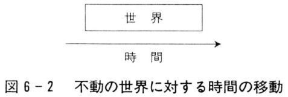

| アキレスと亀: 時間をめぐる哲学者の思考世界 (22世紀アート) | |
| 千代島 雅 | |
| 22nd CENTURY ART (2019) | |
はしがき
一九九七年に晃洋書房から刊行された『人間の逆襲』は時間の問題が主題であった。しかし、私はすでに刊行直後からもの足りなさを感じ、書き直したいと思っていた。理由は二つある。
（１） 「アキレスと亀のパラドックス」をはじめとするゼノンの有名な運動のパラドックスは時間の問題と深くかかわっているにもかかわらず、『人間の逆襲』はこれらを全く論じていない。これでは時間を主題とする書物として不十分である。
当時の私は、相対性理論におけるタイムマシンや双子のパラドックスの問題、エントロピーと時間の関係の問題等に取り組んでいた。これらは非常に興味深くて重要な問題であったから、ゼノンのパラドックスの方は（以前から大いに気になっていたにもかかわらず）ついつい後回しにしてしまった。その間ずっと「ゼノンから逃避しているのではないか」という思いがあり、あまりいい気分ではなかった。
幸い、相対性理論やエントロピーに関する考察が一段落したので、やっとゼノンのパラドックスに取り組めるようになった。その成果が本書の前半である。
（２） 『人間の逆襲』ですでに論じたものの中にも不十分な点が見られた。特に「時間の流れ」に関する論述等はまだ改善の余地があるように思われた。それゆえ、いろいろな学会や講演会等で発表する機会があるごとに改善を試みてきた。本書の後半にはこれらの発表における改善の成果が盛り込まれている。
こうして『人間の逆襲』に代わる新しい書物を刊行することになった（新しいテーマを加えたために、「時間の空間化」や「虚数の時間」等に関する論述は削除した）。表題についてはいろいろ迷ったが、内容的にも量的にも中心となるのが「アキレスと亀のパラドックス」であるから、『アキレスと亀』を採用した。
第一章 「アキレスと亀」の本質の明確化
──パラドックスをいかなる状況で考えるか
１ 人間の知性を悩ませ続けたゼノンのパラドックス
紀元前五世紀に南イタリアのエレアで活躍した哲学者のゼノンは、二十一世紀の現代に至るまで多くの人を悩ませ続けたパラドックスを提出したことで知られている（ギリシア語に由来する「パラドックス」という言葉は、もともと「正しい見解として常識的に受け入れられているものに反する見解」という意味であったと言われている）。
ゼノンが提出したいろいろなパラドックスの中で特に有名であるのは、運動に関する四つのパラドックスであり、アリストテレスの『自然学』において紹介されている。
① 二分割のパラドックス
② アキレスと亀のパラドックス
③ 飛ぶ矢のパラドックス
④ 競争場のパラドックス
以上の四つの「運動のパラドックス」の中で、とりわけ二番目の「アキレスと亀のパラドックス」は最も解決が困難なものとして有名である。だからこそ、今まで長い間多くの人たちがこの難問に挑戦し続けてきたのであろう。
ゼノンは「アキレスと亀」において、まさに我々の「常識」に反する奇妙な結論を論理的に導き出す。ギリシアの英雄アキレスがどんなに速く走っても、遅い亀に追いつくことができないというのである。この場合のゼノンの考え方を具体的に説明すると次のようになる。
まず、アキレスは前方の亀に追いつこうとして、最初に亀がいたところまで走る。しかし、たとえどんなに遅くても、亀はその間に少しだけ前へ進んでいるはずである。そこで、アキレスはさらに走り続け、前方の亀に追いつこうとする。だが、亀がいたところへアキレスが到着するとき、またもや亀は少しだけその先へ進んでいる。
したがって、アキレスが亀をどんなに追い続けようとも、亀はいつもほんの少しだけアキレスの前にいるということになるから、アキレスは決して亀に追いつけない。アキレスは亀より速く走り続けることによって確かにいくらでも亀に近づくことができるが、有限な時間で亀との隔たりをゼロにすることはできないのである。
このようなゼノンの考え方はあまりにも奇妙であり、常識的に考えてどこかおかしいことはすぐにわかる。しかし、どこが間違っているのかを明確に指摘し、厳密に解決しようとすると、一筋縄ではいかないやっかいな理論的困難に直面する。我々は、「そもそも時間や空間や運動をどのように考えるべきか」という最も根本的な哲学的問題に取り組まざるをえなくなるのである。
すでにアリストテレス自身がこのパラドックスを深刻に受け止め、哲学的考察に基づく解決を試みた。そしてそれ以来、多くの哲学者や数学者たちがこの難問に挑戦し続けてきた。
しかし、残念ながら、現代においても「まだこのパラドックスは解決されていない」と考えている人たちがいる。二千年以上前の哲学者によって提出された問題を人類はまだ解決していないというのであれば、現代人の知性にとってあまりにも屈辱的なことのように思われるであろう。宇宙へロケットを飛ばしたり、精巧なコンピューターやロボットを作ったりしているにもかかわらず、現代人は知的能力に関してまだ古代の人間にかなわないということになってしまうのである。
２ 考察の出発点──いかなる状況で考えるかを明確にする
どうすれば誰でも納得するような解決の仕方が見つかるのであろうか？
自分はすでに解決したと言う人もいれば、まだ解決されていないと反論する人もいる。原理的に解決不可能だと主張する人さえいる。このように種々の見解が出現して混乱する根本原因は、ゼノンの考えそのものが正確に伝えられていないことである。そもそもゼノンの「アキレスと亀」を「パラドックス」としてどうとらえるべきかということ自体が曖昧であれば、解決の仕方が混乱するのは当然である。
したがって、パラドックスとしての「アキレスと亀」の本質はいったいどういうものなのか、このパラドックスに関していかなる状況を前提して考えるべきかを、我々自身が改めて明確にすることから出発しなければならない。
初めから解決不可能な状況を勝手に前提しておいて、「解決不可能である」という結論を導き出すわけにはいかない。逆に、誰でも簡単に解決できるような都合のいい状況を勝手に前提しておいて、「解決できた」と主張するわけにもいかない。このような思考態度は無意味な論争や誤解を招くだけであり、不毛である。
なお、ついでに言うと、ゼノンのパラドックスを紹介しているアリストテレスの『自然学』のギリシア語を細かく研究すべきだと主張するのもあまり意味がないであろう。もともとゼノン自身の言葉がそのまま直接正確に伝えられているのではないから、文献的研究に限界があるのは明らかである。アリストテレスの言葉を細かく詮索するだけでパラドックスが解決されるというようなことは決してありえない（もちろん、だからといって文献的研究が全く不要だというのではない）。
それゆえ、我々は単なる「文献的詮索」より、そもそもどういう状況が前提されているときにパラドックスが生じるのかを「理論的に明確化」することを重視しなければならない。パラドックスの本質的前提に関するこの理論的明確化をあらかじめ十分になし終えてから、解決のための考察に取りかかるべきである。
このような明確化を怠って単なる文献的詮索に没頭したり、自分に都合のいい状況を勝手に前提していきなり結論を導き出したりすれば、いつまでも不毛な混乱が続くことになる。
３ 速さの異なる二つの等速直線運動の関係
では、パラドックスの本質的前提としてどのような状況が認められるのであろうか？
ゼノンの「アキレスと亀」のパラドックスがまさにパラドックスであるのは、我々の常識に反して「亀より速いアキレスが亀に追いつけない」と言われているからである。この点を否定する人はおそらく一人もいないであろう。
（１） したがって、「アキレスは亀より速く動くことができる」ということはパラドックスの最も基礎的な前提として認められねばならない。もし逆にアキレスが亀より遅いのであれば、アキレスが亀に追いつけないのは当然であるから、パラドックスは生じない。
（２） しかし、ただ単にアキレスは亀より速く動くことができるという前提だけでなく、「アキレスは常に亀より速く動き続ける」という前提もいっしょに認められるべきである。もし亀を追いかける途中で転倒したアキレスが骨折のために走れなくなったり、疲れて追うのをあきらめたり、第三者の妨害があったりすれば、アキレスが亀に追いつけないのは当然であるから、パラドックスは生じない。
ただし、アキレスが途中で少しスピードを落としたり、一時的に休息したりすることが全く許されないわけではない。
しかし、そのような余計な状況をいろいろ仮定してその許容範囲等を細かく検討してもあまり意味がないから、パラドックスの基礎的前提として受け入れる必要はない。非本質的なものを加えてわざわざ状況を複雑にする努力などしなくていいのである。
（３） さらに、「アキレスと亀は同じ線上を同じ方向に動く」という前提も認められねばならない。もしアキレスが亀とは逆の方向や全く異なる方向に動けば、アキレスがどんなに速く動いても亀に追いつけないのは当然であるから、パラドックスは生じない。
たとえば、亀が西から東へ向かって動いているのに、アキレスが南から北へ向かって動けば、アキレスが亀に追いつくことはありえない。
ただし、アキレスが途中で少し脇道へそれたり、落とし物を拾うために少し逆戻りしたりするようなことがあってもかまわない。しかし、（２） で述べたように、そのような余計な状況を仮定しても複雑になるだけであり、あまり意味がないから、わざわざ考慮に入れる必要はない。
（４） 最後に、「亀は最初アキレスの前方にいる」ということも当然の前提として認められねばならない。自分の後ろにいるものや自分の横に並んでいるものを追いかけようとするのは滑稽であり、もしそのようなことをすれば、両者の隔たりはますます大きくなってしまう。
ただし、陸上競技場のトラックのように、「曲線を含む閉じた線上」で追いかける場合は前方と後方の区別がつきにくいかもしれない（図１-１）。しかし、後で述べるように、トラックにおける運動は本質的に直線上の運動と同じであるから、たとえ亀がアキレスの背後にいるように見えても実際はアキレスにとって前方（アキレスが進もうとする方向）にいると見なすことができる。
以上の四つの前提さえ認めれば、アキレスと亀の運動が具体的にいかなる仕方でなされるのかはどうでもいいことであり、パラドックスの成立そのものに影響を及ぼすことはないであろう。したがって、両者の具体的な運動の仕方に関しては、できるだけ単純なわかりやすい状況を（四つの前提に反しない範囲で）自由に設定し、考えやすくすることが許される。たとえば、
① アキレスと亀は、それぞれいつも「等速」（一定の速さ）で動き続けると仮定することが許される。
② しかも、アキレスの速さは亀の速さの二倍（あるいは十倍、百倍）であるというように、できるだけ単純なもの、計算しやすいものを仮定することができる。
③ さらに、両者は一つの同じ「直線」上を動くと仮定することができる。
もちろん、現実に存在する多くの道路は曲がっており、陸上競技場のトラックのように、出発して走り続けると再び出発点に戻ってくる場合もある。しかし、ゆるんで曲がったひもをぴんと伸ばすことができるように、曲線を直線としてとらえ直すことは可能であり、アキレスと亀が「同じ一つの線上」を走るという点では曲線の場合も直線の場合も同じである。したがって、わざわざ複雑な曲線を仮定する必要はない。
このことは、「アキレスと亀」において根本的に問われているのは両者の「空間的隔たり」がどうなるかである、ということを考えればもっと理解しやすいであろう。我々はアキレスと亀が動くことによって両者の空間的隔たりがどのように変化するのかを明確に把握できれば十分であり、それを曲線で考えるか直線で考えるかは、パラドックスの本質に少しも影響を及ぼさないのである。たとえば、ある時刻に両者の間に存在する十メートルの隔たりを、「トラックの曲がった走路」で考えるか「まっすぐな直線の道路」で考えるかはパラドックスの本質と無関係である。
こうして、本質的なものだけを残して余計なものを除去し、できるだけ単純化することによって、「アキレスと亀」のパラドックスは、
速さの異なる二つの「等速直線運動」の関係
としてとらえられることになる。しかも、その速さに関しても、たとえば一方が他方の二倍であるというように、（パラドックスの本質を損なわないかぎり）できるだけ考えやすいもの、計算しやすいものを自由に選択することが許される。
４ 有限な隔たりを縮める相対運動
しかし、以上の考察ではまだ不十分であり、四つの前提のほかにもう一つ重要な「第五の前提」があることを見逃してはならない。
当たり前であるが、もしアキレスと亀の最初の空間的隔たりが「無限」に大きいとすれば、アキレスはどんなに速く走っても亀に追いつけない。最も速いとされる光でさえ一億光年の距離を進むのに一億年かかるのであるから、アキレスがたとえ光速に近い速さで一生（せいぜい百年くらい）走り続けたとしても、一億光年先へ進むことはできない。ましてや、一億光年先よりはるかに遠い無限のかなたにいる亀のところまで進むことは決してありえない。
したがって、アキレスが亀を追いかけるとき、両者の最初の隔たりは「有限」であると考えるべきである。もし「無限」であると仮定すれば、アキレスが亀に追いつけないのは当然であるから、もともとパラドックスなどありえない（これとは別の意味で「無限」が前提されることについては後で述べる）。
この「最初の隔たりの有限性」が第五の前提である。もちろん、この場合の有限な隔たりが具体的にどれくらいの大きさであるかはそれほど重要ではない。地球上の日常生活で普通に考えられる距離を仮定すればいいのであるから、たとえば十メートルや百メートルのようなわかりやすい距離を採用することが許される。
「アキレスと亀」の根本問題は、この「有限な空間的隔たり」はいかにして縮められるのか、はたして両者の隔たりはゼロになるのか、ということにほかならない。
では、アキレスがこの有限な隔たりをゼロにしようとして亀を追いかけるとき、動いている両者の関係（速さの異なる二つの等速直線運動の関係）はどのような「立場」から考えられるべきであろうか？周知のように、運動は「相対的」なものであり、運動をとらえるときの立場や観点が変われば運動の仕方も変わってしまうから、この問題を無視するわけにはいかないのである。
基本的な立場として、（１） 地上に静止している第三者の立場、（２） アキレスの立場、（３） 亀の立場を考えることができる。
もちろん、第三者も地面に対してある速さで動いていると仮定することができる。しかし、このような仮定は問題の状況を複雑にするだけであり、あまり意味がないから、わざわざ考慮に入れる必要はない。また、同じ理由から、第四、第五、第六等の立場をいろいろ仮定する必要もない。地上に静止している観測者は、言わば「第三者の代表」であり、最もわかりやすい典型的な立場である。
（１） まず、地上に静止している第三者の立場から見ると、アキレスと亀は静止した地面の上をそれぞれ異なる速さで同じ方向へ等速直線運動をしている。最初に亀がいた地点へアキレスが到着すると、亀はその少し先へ進んでいる。このことが繰り返されるたびにアキレスと亀の隔たりはますます小さくなり、ゼロへ近づく。
（２） アキレスの立場から見ると、アキレス自身は静止している。亀は静止しているアキレスへ向かって近づく等速直線運動をしている。地面も前方から後方へ等速直線運動をしており、亀が最初にいた地点がアキレスの所へくると、亀はその少し先にいる。このことが繰り返されるたびにアキレスと亀の隔たりはますます小さくなり、ゼロへ近づく。
（３） 亀の立場から見ると、亀自身は静止している。アキレスは静止している亀へ向かって後ろから近づく等速直線運動をしている。地面も等速直線運動をしているが、動く方向はアキレスとは逆であり、前方から後方へ動いている。亀が最初にいた地点へアキレスが到着すると、アキレスは亀のすぐ後ろに迫っている。このことが繰り返されるたびに亀とアキレスの隔たりはますます小さくなり、ゼロへ近づく。
以上からわかるように、どの立場から考えても、「アキレスと亀の有限な隔たりがだんだん縮められてゼロへ近づく」ということが同じように認められる。つまり、この場合の運動は確かに「相対的」なものであり、どの立場から考えるかによってそれぞれの運動の方向や速さは異なるが、「最初の有限な隔たりが縮められる」ということに関しては差異がない。すべての立場において同じように認められるのである。
したがって、「アキレスと亀」のパラドックスにおいて問題となる両者の運動の本質を一言で表現すれば、
「有限な隔たり」を縮める相対運動
ということになる（もちろん、この場合の相対運動は、速さの異なる二つの等速直線運動の関係である）。
この本質さえ確実につかんでいれば、アキレスと亀の運動をどの立場から考えるかはどうでもいいことである。我々人間にとってこの世の中に「絶対的」な立場などありえないから、もし考えやすいのであれば、アキレスが静止した目標（亀）へ向かって接近するように見える立場から考えてもかまわない。このように考えても運動の本質は全く変わらないのである。
なお、第五章で述べるように、実はこのように考えると「アキレスと亀」のパラドックスと「二分割」のパラドックスは本質的に同じものであることが明らかになる。両者の違いは、運動をとらえるときの立場（観点、基準）の取り方の違いにすぎないのである。
５ 時間と空間に関する暗黙の前提
ここまで主として運動に関する前提について考察し、「アキレスと亀」には五つの前提があることを示した。しかしながら、運動の問題の根底にはもっと重要な根源的前提が潜んでいることを忘れてはならない。
この根源的前提とは「時間」と「空間」に関する前提であり、あまりにも根源的であるがゆえに普通はかえって気づかれなかったり、無視されたりするほどである。それゆえ、我々は時間と空間に関するこの「暗黙の前提」をあえて顕在的に把握する努力をしなければならない。
（１） まず、「空間」に関する暗黙の前提を把握するために、物体Ｍが場所Ｐから場所Ｑへ動く場合について考えよう（図１-２）。
人は普通このような運動をありふれたもの、毎日見慣れたものとしていとも簡単にとらえているから、空間のことなど全く無視していいように思っている。だが、実は、我々がこのような運動をとらえるためには、Ｐ、Ｑという二つの「空間的場所」を明確に区別し、両者の「空間的位置関係」をあらかじめはっきりと把握しておかなければならないのである。
もし場所Ｑが場所Ｐに対してどのような空間的位置関係にあるのかがわからなければ、Ｍはいったいどの方向へ動いているのかわからないであろう。もし場所Ｐと場所Ｑを区別することさえできなければ、そもそもＭは動いているのかどうかさえわからない。ＰとＱが空間における二つの「異なる場所」として明確に区別されるからこそ運動がありうるのであり、図１-３のように、もしＰとＱが空間的に区別されないで「同じ場所」としてとらえられれば、Ｍは「静止」していることになる。空間的位置が変わらなければ運動はありえないのである。
（２） 同様のことは「時間」に関しても言える。物体Ｍが場所Ｐにある時刻と場所Ｑにある時刻が区別されないで「同時」と見なされれば、Ｍの運動は認められない。つまり、この場合は運動そのものがありえず、ただＰ、Ｑという二つの異なる場所に「二つの異なる物体」が「同時」に存在していると見なされるだけである。したがって、運動をとらえるためには二つの時刻が明確に区別され、両者の間に必ず「時間的な隔たり」（非同時性）が認められるのでなければならない。
しかし、単に二つの時刻が区別されるだけでは不十分である。なぜなら、二つの時刻の「時間的な前後関係」がわからなければ、どっちへ動いているのかという「運動の方向」がわからないからである。たとえば、物体Ｍが場所Ｐにある時刻が「先」で、場所Ｑにある時刻が「後」であるとすれば、ＭはＰからＱへ動いていることになるが、もしこの時間的な前後関係が逆に理解されれば、Ｍの運動はＱからＰへという逆向きの運動としてとらえられることになる。
したがって、運動の問題の根底には、
① 同時か否か
② 時間的に先か後か
ということに関する根源的な時間的前提が潜んでいるのである。
このような時間的前提を無視して「無時間的な運動」を考えるのはバカげたことであろう。そもそも時間のないところでは運動について考えようとすること自体が不可能であり、「無時間的運動」というものは「丸い四角」と同様にナンセンスなものである（科学においてはしばしば「時間の空間化」が生じるから、時間が消えて無時間的になり、運動や変化というものが理解不可能になることがある。相対性理論における「四次元空間」はその典型的な例である）。
以上の（１） と（２） から明らかであるように、運動の根底には時間と空間に関する前提があるから、運動の「速さ」について考える場合も時間と空間に関する前提が不可欠である。たとえば、アキレスが走る「速さ」は、アキレスが百メートルの距離を十秒で走るというようなことがわかってはじめて具体的に決められる（この場合は秒速十メートルである）。どれだけの距離をどれだけの時間で動くのかがわからなければ、速さを決めることはできないのである。
なお、（２） で述べた時間的な前後関係は「時刻」を使えば十分であると考えている人がいるかもしれないので、一言注意しておこう。
確かに、「時刻一は時刻二より先である」というように、時刻によって時間的前後関係が明確に示されるように思われる。しかし、厳密に言えば、時刻を表示するために用いられる一、二、三のような数字はもともと時間とは無関係であり、単なる「大小関係」しか示すことができない。数の大小関係は決して時間的前後関係ではなく、「二は一より大きい」ということから、「二は一より時間的に後である」ということが必然的に導かれるわけではないのである（もし十、九、八という順序で数えれば、九より大きい十が時間的に先であることになる）。
したがって、時間的前後関係を厳密に示すためには時刻だけでは不十分であり、時刻よりさらに根源的な「過去、現在、未来」にかかわる「時間」というものが前提されねばならない。
たとえば、「現在は時刻二である」ということが意識されるとき、これといっしょに、「時刻一は過去である」ということが意識されることによって、「時刻二は時刻一より後である」ということが理解される。つまり、「現在は過去より後である」という「時間」の根源的な前後関係に基づいて「時刻」の前後関係が理解されるのであり、その逆ではない。
それゆえ、時間的な前後の関係をどう理解し、どう示すかという問題の根底には、過去、現在、未来にかかわる「時間」の問題が潜んでいると言わねばならない（時刻と時間の区別については第六章で詳しく述べるので、ここではこれ以上言及しない）。
６ 時計や物差しを実際に持っている必要はない
ついでに「時計」と「物差し」の問題についても少し注意しておこう。
アキレスと亀はそれぞれいつ、どこにいるのか、どのような方向へ、どのような速さで動いているのか、両者の隔たりはどうなっているのか等を具体的に「測定」するためには時計や物差しが必要である。このことは疑問の余地がない。
しかし、言うまでもなく、我々が現実の世界で「実際に」時計や物差しを持っていなければ「アキレスと亀」のパラドックスを解決することができないというわけではない。そもそもこのパラドックスは、アキレスと亀が現実の世界で実際に動いている様子を直接観測して解決するような問題ではないのである。
このことは、「アキレスと亀」のパラドックスの核心的場面は両者の隔たりが限りなくゼロに近づいたときであることを考えれば明白である。アキレスが亀に限りなく接近したとき、その後ついに隔たりがゼロになるのかどうかが「アキレスと亀」の最大の問題である。だが、それにもかかわらず、限りなくゼロに近い無限小の距離や時間を正確に測定することは、残念ながら、現代の最先端の技術をもってしても不可能である。現代のオリンピックの陸上競技や競泳の種目においても、せいぜい一秒の百分の一程度までしか測定されていないのである。
したがって、二千年以上前にパラドックスが提示されたときも、実際に時計や物差しを用いて測定するようなことは考えられていなかったはずである。もともとゼノンのパラドックスは純粋に「理論的」な問題であり、アキレスと亀の隔たりがどのように縮められるのかを「実際に」時計や物差しで測定して決着をつけるような問題ではないのである（次の章で述べるように、実際に測定道具を用いて実験や観察を行うことによってパラドックスを解決しようとするのは素朴な科学主義の誤りである。パラドックスというものを全く理解していないと言わざるをえない）。
それゆえ、具体的な測定を可能にする時計や物差しが現実に存在することは必ずしも不可欠の前提ではない。無限に小さなものを測定できる「理想的」な道具がありうるということを「思考」において仮定するだけで十分である。「アキレスと亀」は現実の問題ではなく、思考上の問題なのである。
７ 無限に分割可能という前提は不可欠である
「アキレスと亀」において、無限に小さなものを実際に測定する道具としての時計や物差しの存在は不可欠の前提ではないが、時間と空間を「無限に小さく分割できる」ということ自体は不可欠の前提である。この点は非常に重要であるから、決して誤解してはならない。
なお、「時間と空間」に関して無限分割が可能であれば、これらに基づいて考えられる「運動」に関しても無限分割が可能であると見なされる。したがって、結局、パラドックスが生じるための不可欠の前提として、「時間と空間と運動」の無限分割可能性を認めなければならないということになる。
もしこの「無限分割可能性」が認められなければパラドックスが生じないということは明白であろう。亀がいた地点へアキレスが到達するという運動を何度か反復した後、ついに両者の隔たりが「それ以上分割不可能」なある有限な距離になってしまうとすれば、その直後にアキレスはその有限な距離を「一気に飛び越える」ことになる。つまり、アキレスは亀を追い越すことになる。
したがって、時間と空間（および運動）の無限分割可能性は、パラドックスが生じるための不可欠の前提としてはっきりと認められねばならない。この前提は、「アキレスは亀より速い」という最も基礎的な当然の前提と同じくらい自明の前提である。もちろん、ゼノン自身も、時間と空間の無限分割可能性をパラドックスの不可欠の前提としてあからさまに認めた上でパラドックスを提示したのである。
ところが、ここで次のように考えることも可能である。時間と空間の無限分割可能性を認めなければパラドックスが生じないのであるから、パラドックスを解決するために、むしろ積極的に無限分割可能性を否定すべきではないのか。忌まわしい無限分割可能性をきっぱりと拒否することこそ、ほとんど唯一の確実な「パラドックスの解決法」ではないのか、と。
しかし、このような考え方はあまりにも単純であり、（次の章で詳しく述べるように）これだけでは決して本当の意味でパラドックスを解決したことにならない。時間と空間に関する無限分割可能性はゼノン自身もあからさまに認めている不可欠の前提であり、この前提を拒否すればパラドックスが生じないということは誰にも簡単にわかるあまりにも自明のことである。わかりきっていることを今さら主張したところでパラドックスが本当に「解決された」と見なされるわけではないのである。
したがって、我々はあくまでも時間と空間（および運動）の無限分割可能性という前提を認めた上でパラドックスの解決法を考えねばならない。もしパラドックスの不可欠の前提を拒否してパラドックスそのものが生じないようにする安易な考え方が許されるのであれば、パラドックスはとっくの昔に解決されていたであろう。そして、それ以来、誰一人パラドックスに悩まされることはなく、パラドックスの存在そのものがすっかり忘れ去られていたであろう。
それゆえ、無限分割可能性を初めから認めようとしないのはパラドックスの解決であるどころか、ある意味ではパラドックスからの「逃避」にすぎないと見なされるのである。
第二章 「アキレスと亀」の従来の理論の批判
──科学、数学、ベルクソンの限界
１ 実験や観察に訴える素朴な科学主義の限界
「アキレスと亀」のパラドックスを解決しようとした従来の理論の中で最も典型的なものをいくつか取り上げ、批判的に検討しよう。そうすることによってパラドックスの本質がいっそう明確になり、パラドックスを解決するための手掛かりが得られるであろう。
まず素朴な「科学主義」について検討し、その後、無限級数を用いる数学やベルクソンの哲学等について検討する。
「アキレスと亀」のパラドックスはもともと「理論的」な問題である。したがって、あくまでも理論的な考察に基づいて解決されねばならない。現実の世界で実際に行われる実験や観察から得られる経験的事実に訴えてもパラドックスは解決されないのである。
だが、おかしなことに、世の中には次のように考えている人たちもいる。実際に走って亀を追い越すような実験を行えばゼノンの主張の誤りが科学的に証明されるはずであるから、哲学者や数学者が行う面倒くさい理論的考察は不要である。単なる理屈ではなく、科学的方法に従って行われる客観的な実験や観察がパラドックスを解決するのである、と。
これはまさに素朴な「科学主義」に基づく見解であり、あまりにも単純すぎると言わざるをえない（本書で用いる「科学主義」という言葉は、そもそも科学とは何であるのかについてよく考えもしないで軽率に科学を絶対視するような科学至上主義的立場のことを意味している）。
なるほど、現実の世界において実際に速いものが遅いものを追い越すことができるのを実験によって証明すれば、「亀より速いアキレスが亀に追いつけない」というゼノンの主張の誤りをはっきりと示すことができる。したがって、理論的考察を無視して実験や観察に訴えようとする考えが全くの誤りであるというわけではない。
だが、このような考えは問題の本質を完全に見誤っているから、パラドックスを解決する方法としては全く無意味であると言わざるをえないのである。
我々は日常生活において、速いものが遅いものを追い越す現象をほとんど毎日見ている。たとえば、自動車は歩行者を追い越し、飛行機は電車を追い越す。もちろん、ゼノンが生きていた古代の人たちも、馬がアリを追い越したり、ツバメが蝶を追い越したりする現象をほとんど毎日見ていたはずである。
したがって、アキレスと亀に関するゼノンの議論が、現実の世界における明白な経験的事実に反する間違った結論を導き出していることは誰の目にも明らかなことである。というより、第一章の冒頭で述べたように、常識として一般に受け入れられている明白な事実に反する見解があからさまに表明されているからこそ「パラドックス」と呼ばれているのである。
古代から現代に至るまでのすべての人間によって認められている明白な事実を、今さら実験によって確かめようとすることが無意味であるのは当然であろう。わざわざ大げさに「科学的」な実験をするまでもなく、すべての人がすでにゼノンの結論の誤りを認めているのである。
それゆえ、問題の本質は、ゼノンが常識に反する間違った結論を導き出しているということではない。そうではなく、「どうして常識に反する間違った結論が理論的に導き出されたのか」ということである。ゼノンの結論は明白な経験的事実に反することがわかっていながら、いったいいかなる理論的誤りに基づいてそういう奇妙な結論が導き出されたのか、どうすれば誤りを理論的に正すことができるのかを容易に示すことができないからこそ、多くの人たちが深刻に悩み続けたのである。
現実の世界でありえないバカげた非常識なことが堂々と理論的に主張されているにもかかわらず、それに対する明晰な理論的反駁をなしえないことは、知的な人間の自尊心をひどく傷つける。ゼノンのパラドックスに直面したときに味わう理論的な屈辱感や敗北感が、二千数百年の長きにわたって人間の知性を苦しめ続けたのである。
したがって、理論的考察を無視して実験や観察に訴えるだけでパラドックスを解決できるかのように考える素朴な科学主義的態度は、パラドックスの本質を全く理解していないと言わざるをえない。そのような態度によってパラドックスが解決されることはありえず、むしろパラドックスの本質を隠蔽することに役立つだけである。
２ 無限級数を用いる数学的考察の限界
実験や観察に訴えるのではなく、あくまでも厳密な理論的考察によって解決しようとする試みとして、数学的考察と哲学的考察がある。
最も典型的な数学的考察は、無限級数の計算に基づく考察であろう。もちろん、このような数学的考察そのものが根本的に間違っているというわけではないが、最終的に「アキレスと亀」のパラドックスを解決するためには数学的考察だけでは不十分である。以下の批判的検討によって、数学的考察にも限界があることが明らかになるであろう。

図２-１は典型的な数学的考察の基礎を示している。アキレスはまず地点Ａを出発し、地点Ｂにいる亀を追いかける。アキレスが地点Ｂに到着するとき、アキレスはＡからＢまでの距離を走ったことになる。だが、そのとき、亀はすでに地点Ｃへ進んでいる。そこで、さらに走り続けてＣにいる亀を追いかけると、アキレスはＢからＣまでの距離を走ったことになる。
アキレスはこのようなＡ↓ Ｂ、Ｂ↓ Ｃ、Ｃ↓ Ｄ等の段階を経て運動を繰り返すのであるから、アキレスがそれぞれの段階で走った距離ｘの総和をＳとすれば、Ｓは式（１） のような級数で表される。空間が無限に分割可能であれば、級数に含まれるｘの項の数は無限になる。すなわち、距離ｘに添えられる１、２、３の数字はどこまでも無限に続くことになる（無限級数）。
また、アキレスが式（１） の各項で示されている距離ｘを走るのに要する時間をｔで表現すれば、アキレスが走った時間の総和Ｔに関しても式（２） のような無限級数が得られる（ただし、時間も無限に分割可能であるとする）。
「アキレスと亀」のパラドックスを数学的考察によって解決しようとする理論の核心は、このような無限級数が「有限な値」になりうるということである。
わかりやすくするために、アキレスがそれぞれの段階で走った距離ｘが、二分の一、四分の一、八分の一というように、そのつど半分に減少していくとしよう。そうすると、簡単な計算によって、式（３） のように距離の総和Ｓが収束して１になることが示される。もちろん、時間の総和Ｔも同じように収束して有限な値になることが示される。
したがって、アキレスは必ずどこかで亀に追いつくことが無限級数の計算によって示されることになる。距離の総和も時間の総和も「有限」であれば、アキレスが無限にどこまでも亀を追い続けることはありえないのである。
以上が無限級数を用いる典型的な数学的考察の説明である。確かにこのような計算は常識的な数学の立場から見れば完璧であり、何一つ欠陥はないように思われる。
もちろん、第一章で述べたパラドックスの本質的前提に反する間違った仮定もないように思われる。アキレスと亀はそれぞれ異なる速さで同じ方向に「等速直線運動」をしており、前方にいる遅い亀との間にある「有限な隔たり」を速いアキレスがいかにして縮めるかという最も適切な状況において考えられている。また、時間と空間は「無限に分割可能である」という仮定や、アキレスがそれぞれの段階で走った距離ｘがそのつど半分に減少していくという単純なわかりやすい仮定に関しても特に問題はない。
しかし、問題であるのは、はたしてこの種の計算だけで本当にパラドックスを解決したと言えるのか、ゼノンを完全に納得させることができるのかということである。
残念ながら、ゼノンは（私と同様に）数学者の単純な機械的計算を認めないであろう。そして、アキレスが亀に追いつくことを無限級数の計算だけで示すことはできないと主張するであろう。どうしてであろうか？
そもそもゼノンの主張の根底にあるのは、もし時間と空間が無限に分割可能であるとすれば、アキレスが走り続けることによって亀との隔たりが限りなく「ゼロに近づく」ことはありうるが、決して「ゼロになる」ことはないということである。両者の空間的隔たりがどれだけゼロに近づこうとも、それだけではまだ「追いついた」ことにならないのである。
このゼノンの考えを無限級数の計算に当てはめると次のようになる。無限級数においては項の数が無限に多くあるから、たとえば二分の一、四分の一、八分の一と続く各項を実際に次々と足し合わせていく計算は無限に続くはずである。つまり、どんなに辛抱強く計算を続けてもｎ番目の項の値はただ「ゼロに近づく」だけであり、決して「ゼロになる」ことはないのである。項の値がゼロにならないかぎり、数学者はどこまでもさらに計算を続けるほかないから、無限級数を実際に計算し終えることはできない。
ところが、数学の計算には一種のトリック（巧妙なすり替え）がある。実際にどこまでも計算し続ける操作は初めから全くなされず、ただ単純に理論的な「極限値」というものが求められるだけである。すなわち、級数の項の数が無限に多くなれば、その総和がある一定の値に限りなく「近づく」ことが理論的テクニックによって示される。そしてこの「極限値」がそのまま単純に無限級数の「総和」として定義されるのである（たとえば式（４） においては、ｎを限りなく大きくしたときに極限値１が求められる）。
このような考え方をすれば、あたかも無限級数の計算をなし終えることができるような錯覚が生じるのは当然であろう。
だが、ゼノンの真意をくみ取れば、我々はこのようなあまりにも安易な考え方を認めるわけにはいかないのである。極限値とは、文字通り「限りなくある値に近づく」場合のその値のことにすぎないから、単純に極限値を求めただけで実際に無限級数の最終項までを「計算し終えた」かのように考えるわけにはいかない。
したがって、数学の無限級数における極限値を持ち出すだけでは決してゼノンを納得させることができない。極限値はただ「ある値に近づく」ということを示しているにすぎないから、これをそのままゼノンのパラドックスに当てはめても、せいぜいアキレスは限りなく「亀に近づく」としか言えない。つまり、アキレスは「亀に追いつく」（アキレスと亀の隔たりがゼロになる）と主張できるわけではない。
ゼノンにとって、両者の隔たりが「ゼロになる」のは、アキレスが「無限」に走り続けたときである。だが、ゼノンは、まさにこのような「無限」の運動を実現不可能なものと見なして拒否するのである。
それゆえ、パラドックスを解決するためには、ゼノンにおける「無限」の問題を根本的に問い直さなければならない（これは次の第三章で行う）。このような根本的考察を怠って単純に極限値を持ち出してもパラドックスは解決されないのである。
３ 時間を無視する数学の限界
ここでついでに、数学において行われる計算の限界は数学の本質と密接に関係しているということを明らかにしよう。
数学においては、足し算のような計算をする操作が人間によって具体的にどのように行われるのか、実際に計算をするのにどれくらいの時間がかかるのかは無視されるのが普通である。周知のように、「無時間性」は数学の本質的な特徴であり、普通の数学の理論においては、「２＋３＝５を計算するのに３秒かかった」などとは言われない。「きのうは３＋４＝７であった」、「あしたは４＋５＝９であろう」などとも言われない。本来の数学の計算は無時間的になされ、数学が扱う命題も無時間的な「永遠の真理」を表現していると見なされている。
なるほど、数学者が時間を取り扱う場合もある。しかし、せいぜいｔという抽象的な記号を時間の表示のために使用し、一、二、三のような数字を適当に当てはめて単純な機械的計算をするだけである。言うまでもなく、ｔや一、二、三はそれ自体としては「時間」ではないから、それらを数学者がどんなにいじくり回しても、過去、現在、未来や時間的前後関係等の本当の意味を明らかにすることはできない。
もちろん、純粋な数や空間のような「理念的」対象を扱う数学（幾何学）において時間が無視されること自体は決して非難されるべきことではない。扱う対象がもともと無時間的なものであれば、時間が主題的に問われないのはある意味でやむをえない。
しかしながら、人が計算したり、考えたり、歩いたり、走ったりするためには必ず時間がかかる。アキレスと亀が動くためにも必ず時間がかかる。亀を追いかけるアキレスの運動が無時間的になされることは断じてありえない。第一章でも述べたように、「無時間的な運動」というものは「丸い四角」と同様にナンセンスなもの、どこにもありえないものである。
したがって、数学が時間の問題とかかわるのを避けて「無時間的な世界」（永遠の理念的世界）に閉じこもり、現実の世界における運動や行為の時間的性質に関する考察をなおざりにしようとするかぎり、数学が「アキレスと亀」のパラドックスを解決することは困難であろう。少なくとも、ゼノンや多くの哲学者たちを完全に納得させるような仕方で解決することは困難であろう。
ただし、だからといって数学とは逆に、ただ現実の世界における時間的なものだけを扱えばいいというわけでもない。現実の世界で実際に「時間をかけて」計算したり、走ったり、追いかけたりするだけでパラドックスが解決されるということはありえない。やはり第一章ですでに述べたように、もともとゼノンのパラドックスは時計や物差しを用いて実際に測定することによって決着をつけるような問題ではないのである。あくまでも「理論的」な問題であるから、現実の世界で実際にどれくらいの時間がかかるのかを調べても無意味である。
それゆえ、肝要であるのは、
① 「無時間的」な数学的思考
② 「時間的」な現実的思考
という相反する二つの極端な考え方に惑わされることなく、どちらでもない「本来の正しい道」（言わば第三の道）を歩むことである。問題の本質から外れた極端な思考によってパラドックスが解決されることはありえない。
では、本来の正しい道を歩むということは具体的にどうすることであろうか？ それは、パラドックスにおいてはそもそも何が「時間的」で何が「無時間的」なのか、両者の関係はどうなっているのか、どういう場合に時間を考慮に入れ、どういう場合に時間を無視するのかについて、厳密に考察することである。本書ではこのような時間の考察を無限の考察といっしょに第三章で行う。
最初から「無時間的」な世界に閉じこもって時間の考察を怠ったり、実際に「時間をかけて」亀を追いかけ回したりしているだけでは決してパラドックスは解決されない。同様に、時間を抽象的な「記号」ｔで表現して数式をいじくり回したり、「時計」を持って運動を測定したりしているだけでもパラドックスは解決されない。時間（および無限）についての厳密な本質的考察だけがパラドックスの解決を可能にするのである。
なお、残念ながら、純粋な数学的思考にはもう一つ別の限界があるということも指摘しなければならない。
「アキレスと亀」のパラドックスの根底には、時間と空間（および運動）を無限に小さく分割できるという前提がある。しかしながら、我々人間は無限に小さなものを実際に見たり触ったりすることはできない。たとえ原子や素粒子の大きさにまで分割することができたとしても、これらよりさらに小さなものを求めてどこまでも分割し続けることは物理的に不可能である。
したがって、「無限に分割可能である」というパラドックスの前提はいったい何を意味するのか、我々が実際に住んでいる現実の世界と無限分割可能性はどういう関係にあるのか、などを厳密に考察すべきである。
だが、単なる数学的思考や数学的計算においてはこのような考察はなされない。パラドックスの根底にある重要な前提そのものについての考察を怠れば、パラドックスの真の解決がありえないのは当然である。
４ ベルクソンの哲学的考察の限界
次に哲学的考察について検討しよう。いろいろな哲学者がゼノンのパラドックスについて考察しているが、その中で特にベルクソンの哲学は数学的考察と好対照をなしている。それゆえ、哲学と数学の違いを際立たせつつ、パラドックスの本質をいっそう明確に把握するために、主としてベルクソンの哲学を取り上げて検討しよう（ゼノンのパラドックスに関するベルクソンの考察は、『時間と自由』の第二章、『物質と記憶』の第四章などでなされている）。
ベルクソンの哲学の根底にあるのは、運動や行為は分割可能であるという考えの断固たる拒否である。ベルクソンにとって、我々が生きている現実の世界における運動や行為は分割できないもの、不可分なものであり、運動体がある場所から別の場所へ動くとき、その運動は分けることのできない一つの全体をなしている。
ところが、ベルクソンによれば、ゼノンのような人たちは運動体が通過した「軌跡」としての「空間」と「運動そのもの」を混同している。そして、単なる軌跡としての空間が無限に分割可能であることをそのまま単純に運動そのものに当てはめ、運動も無限に分割可能であるかのように誤解する。その結果、アキレスは決して亀を追い越せないという奇怪な主張が導かれることになる。
私はこのようなベルクソンの哲学に重大な誤りがあるとは思わない。それどころか、時間、空間、運動等に関するベルクソンの哲学には独創的な鋭い洞察があり、数学や自然科学のような学問につきまとう欠点と限界を的確にとらえているとさえ思っている。
しかし、それにもかかわらず、「アキレスと亀」のパラドックスを理論的に解決するという観点から見れば、数学的考察と同様にベルクソンの哲学的考察にも限界があると言わざるをえない。残念ながら、時間、空間、運動等についてのベルクソンの考察がどんなに魅力的なものであろうとも、それだけでパラドックスが解決されるわけではない。
すでに述べたように、ベルクソンの哲学の根底にあるのは、運動の分割可能性を拒否することである。ゼノンにおいては時間と空間の無限分割可能性と同様に運動の無限分割可能性も当然のこととして前提されており、これらの前提に基づいてパラドックスが導かれた。だが、ベルクソンは、「運動の分割可能性」という前提を認めないのである（ベルクソンにとって、運動の不可分性は時間の不可分性でもあり、時間を瞬間に分割することはできない）。
ベルクソンがこのように運動の分割可能性を拒否することに対しては、「パラドックスの真の解決を避けているにすぎない」という批判がなされるであろう。運動の分割可能性の拒否は、パラドックスが生じるための不可欠の前提の拒否にほかならないから、ベルクソンは次のように言っているにすぎないと思われるのである。「パラドックスの前提を否定すれば、パラドックスそのものがありえなくなる」と。
パラドックスをもたらす前提がなくなればパラドックスが生じないのは当たり前であるから、これを素直にパラドックスの「解決」として受け入れるのは無理であろう。
我々はパラドックスについて考察する場合、次の二つを明確に区別すべきである。
① パラドックスの前提を「否定」してパラドックスが生じないようにする。
② パラドックスの前提を「承認」した上でパラドックスを理論的に解決する。
① ＝ベルクソンのように、前提そのものを安易に認めないで批判的に検討し、場合によってはきっぱりと「否定」しようとする態度を取ることが哲学的に重要なことは言うまでもない。だが、本当の意味でパラドックスを「解決する」ということは② にほかならないであろう。
ゼノンが提出した奇怪な難問をただ「避けた」だけ、あるいは「はぐらかした」にすぎないと言われたくなければ、① だけでなく② のような本来の解決も試みるべきである。パラドックスが生じるための不可欠の前提を拒否して、単にパラドックスを「消し去る」こと、あるいは「排除する」ことは、決してパラドックスを解決することではない。
① と② の違いは、やはり時間と運動の問題に深くかかわる「双子のパラドックス」を考えるとわかりやすい。
アインシュタインの相対性理論によれば、運動することによって時計が遅れる。もしこの主張が正しければ、双子の兄弟の一方が宇宙旅行から帰り、地球で他方と再会するとき、二人が互いに相手を「若い」と見なす奇妙なパラドックスが生じる。
だが言うまでもなく、もし相対性理論が間違っており、「運動によって時計が遅れる」という前提そのものが認められなければ、双子が時計（年齢）に関して互いに相反する主張をするというパラドックスは初めからありえないことになる。パラドックスが生じること自体がありえないのに、パラドックスを深刻に受け止めて必死に解決しようとするのは無意味である。
したがって、「双子のパラドックス」を解決しようとする努力とは別に、「運動による時計の遅れ」という相対性理論の前提そのものを厳密に検討することは重要であり、アインシュタインの名声にけおされて批判的考察を怠るようなことがあってはならない。批判精神の放棄はあらゆる学問の終焉である。
しかしながら、それにもかかわらず、相対性理論そのものについて批判的に検討することと、「双子のパラドックス」を「理論的に解決する」こととは別の問題であるということも認めざるをえない。
たとえ相対性理論の間違いや欠陥がいつか露呈する可能性があるとしても、どうして相対性理論からパラドックスが生じるのか、どうすればこの奇妙で難解なパラドックスを解決することができるのかについて考察することは、それ自体で価値のあることである。このような考察は、相対性理論をいっそう深く理解したり鋭く批判したりするのに役立つだけでなく、ほかのさまざまな難問を解決するのにも大いに役立つ。
「アキレスと亀」のパラドックスに関しても同じことが言えるのである。確かに、時間や空間や運動はそもそも分割可能であるのかという根本的な問題について考察することは重要であり、このような考察を怠ることは哲学の放棄であると言ってもよい。しかしながら、「分割可能性を認めるか否か」という問題と、分割可能性を認めればどうして奇妙なパラドックスが生じるのか、どうすればこのパラドックスを「解決する」ことができるのかという問題とは別である。
したがって、我々は分割可能性に関するゼノンの前提を頭から拒否するだけで満足するのではなく、ゼノンの前提を受け入れた上でいかにしてパラドックスを解決するかという問題にも真剣に取り組むべきである。我々が本当に「アキレスと亀」のパラドックスを解決したと言えるのは、たとえ「時間も空間も運動も無限に分割可能である」と仮定してさえ、速いアキレスが遅い亀に追いつけないようなバカげたことはありえないことを理論的に明示したときである。
以上の説明によって、ベルクソンの哲学的考察は独創性に富む魅力的なものではあるが、パラドックスを解決するという観点から見れば不十分であり限界があるということをわかってもらえるであろう。
５ 運動の分割可能性についての検討
なお、運動の分割可能性を拒否するベルクソンの哲学そのものに関しても疑問や批判がありうることを指摘しておこう。
確かに現実の世界で実際に行われる運動や行為は分割不可能であり、もし途中で強引に分断してしまえば、もはや運動や行為は成立しない。たとえば、ボールを投げるとき、指先からボールを手放そうとした瞬間に動きをやめてしまえば、もはやボールは投げられなくなる。肩、腕、肘、手首、指などが一体となって動く一連の動作が途中でとぎれることなく連続的に行われてこそ「投げる」という行為が成立する。したがって、ベルクソンの主張に間違いがあるわけではない。
しかしながら、一続きの動作をいくつかに分割して「考えてみる」ことは決して不可能ではない。特にゼノンのパラドックスにおいてはもともとこのような「思考上の分割可能性」が問題になっているのであるから、単純に拒否するわけにはいかない。
「投げる」という行為であれば、おそらく次のようないくつかの段階に分けて考えることができるはずである（いわゆるワインドアップ投法で考える）。まず、投手が指でボールをつかむ。↓ 両手を頭の上に振り上げる。↓ ボールを持った手を下へ降ろしながら、腕を後ろへ伸ばす。↓ 腕を曲げてボールを耳の近くに持ってくる。↓ 肘を前方へ突き出しながら腕を伸ばす。↓ 最後に手首を使って一気にボールを手放す。
電車や自動車のような物体の運動に関しても同様である。たとえ物体が連続的に動き続けていても、それが通過した地点や時刻を目安として、それ以前の運動とそれ以後の運動に分けて考えることができる。たとえば、Ａ駅を発車した特急電車が途中のＢ駅を通過するとき、「これで電車は目的地に半分近づいた」と考えたり、Ｃ駅を通過するとき、「終着駅まであと残り四分の一だ」と考えたりすることができる。
ゼノンの場合も全く同じであり、アキレスや亀の運動を「思考において」分割することは可能である。ゼノンは一連の運動を実際に分断しているのではないであろう。たとえば、亀がいたところへアキレスが到着するたびにアキレスを実際に「停止」させ、そこから再び亀へ向かって走り始める動作を繰り返させるようなことをしているのではないであろう。ゼノンは、アキレスが亀を追いかける運動を、その通過地点（以前に亀がいた地点）を目安として「便宜的に区切って」考えようとしているだけである。
それゆえ、少なくとも思考においては（理念的には）運動を分割することは可能であると言わざるをえない。
ということは、やはりゼノンのパラドックスはベルクソンの哲学だけで完全に解決されると見なすわけにはいかないということである。我々は、少なくとも思考においては時間も空間も運動も分割可能であるというゼノンの前提を認めた上でパラドックスを解決するように努力すべきである。
６ 単に「点」を拒否する哲学の限界
最後に、分割可能性を拒否するベルクソンの哲学とよく似た哲学的考察について検討し、やはり限界があることを明らかにしよう。
この哲学的考察によれば、時間と空間を無限に分割することによって得られる「点」を拒否すればパラドックスが解決される。つまり、ゼノンのパラドックスの根本原因は無限の分割によって生じる「無限に多くの点」であるから、このような無数の点を前提とする考え方さえ受け入れなければ、パラドックスも自ずから消滅するというのである（この場合の「点」は、時間に関しては持続ゼロの点時刻、空間に関しては広がりのない幾何学的点である）。
大きさがゼロの点時刻や幾何学的点を拒否する根拠として、（１） 現実の世界における人間の知覚の有限性、（２） 現実に存在する物体（物質）の大きさの有限性、などが考えられるであろう。詳しく説明すると次のようになる。
（１） たとえば、時間的な間隔がゼロの「瞬間」において、ある光景が突然目の前に出現すると同時に消えたとしても、我々はそれを全く知覚できないであろう。人間の目には何も見えないのである。同様に、白い紙のような平面のどこかに広がりのない（大きさがゼロの）赤い「しみ」がついていたとしても、我々はそれを見つけることができないであろう。
持続がゼロの瞬間における出来事や大きさのない幾何学的点における対象は人間にとって知覚不可能であり、現実の世界では決して経験されることがないのである。
（２） 物体や物質は必ず有限な大きさをもつ（無限に小さくできない）ことに関しては水の例がわかりやすいであろう。
ある容器に入っている水をそのつど半分ずつ排出する操作を繰り返すとき、容器に残される水はだんだん少なくなる。しかしながら、その量は無限に小さくなるのではなく、最後の「一滴の水」は有限な大きさである。
もちろん、最後の一滴をさらに分割することは物理的に不可能ではない。しかし、たとえこのような分割を続けたとしても、我々が最終的にたどりつく「水の分子」一個の大きさはやはり有限である。もしこの後さらに強引な分割を続ければ、もはや「水」ではない原子（水素、酸素）や素粒子になってしまう。素粒子にまでたどり着けば、そこからさらに分割を続けようとすること自体が不可能になるであろう。
このように、現実の世界における人間の知覚のあり方や物質の構造を考慮に入れると、大きさがゼロの「点」になるまで無限に分割することができるというゼノンのパラドックスの前提そのものが否定されるから、必然的にパラドックスも消滅すると見なされるのである。なお、ゼノンのパラドックスに関して「点」というものをこのような意味で拒否しようとする哲学の例として、大森荘蔵の『時間と存在』（青土社、特に第三章「ゼノンの逆理と現代科学」）などがある。
言うまでもなく、このような哲学的考察に間違いはない。しかし、それにもかかわらず、すでに検討したベルクソンの場合と同様に、このような考察だけで「アキレスと亀」のパラドックスが解決されるわけではないのである。
ツバメが蝶を追い越し、馬がアリを追い越すように、現実の世界においては速いものが遅いものを追い越すことは、ゼノンも自分自身の経験に基づいて知っていたはずである。同様に、人間は大きさがゼロの「点」においては何も見ることができないことは、ゼノンも自分自身の経験に基づいて知っていたはずである。もともとゼノンはそういうことを知った上であえて挑発的なパラドックスを提示したのである。
したがって、我々が現実の世界で実際に亀を追い越してみせることによってパラドックスが解決されるわけではないのと同様に、我々が現実の世界から実際に「点」を排除しても、それだけでパラドックスが解決されるわけではないのである。
現実の世界において普通に生きている人間にとって、知覚不可能な「点」はほとんど無意味であるから、無視してもかまわない。だが、人間の「思考」において大きさがゼロの点を仮定することは可能であり、理論的には決して無意味ではない。
数学者が実際に紙や黒板の上に描く「点」は必ず有限な大きさを持っているにもかかわらず、数学者本人はその大きさをゼロだと思って数学（幾何学）の理論に取り組んでいる。ゼノンもこのような数学者たちと同様に、実際は知覚不可能な「大きさがゼロの点」というものを「思考」において仮定したのである。そして、もし運動をこのような仮定に基づいて考えれば、アキレスが亀に追いつけないという奇妙な結論が得られることを示そうとしたのである。
大きさがゼロの「点」は現実に存在しないから数学の理論は完全に間違っている、という批判は明らかに的外れである。同様に、大きさがゼロの「点」は現実に存在しないからゼノンのパラドックスはもともとありえないナンセンスな空論だ、という批判も的外れである。このような的外れの批判がパラドックスの真の解決につながることはありえない。
ゼノンのパラドックスは「現実の世界」で実際に経験される運動の問題ではなく、理念的な「思考の世界」において想定される運動の問題である。したがって、我々は、ゼノンの思考において理念的に想定された「点」というものを認めた上でパラドックスを解決しなければならない。運動の「分割可能性」を拒否したベルクソンの場合と同様に、単に時間と空間における「点」を拒否するだけでパラドックスが解決されるわけではないのである。
このような単なる拒否の態度は、ゼノンにとって、問題の本質を「はぐらかしている」だけであり、パラドックスからの「逃避」であるように見えるだろう。
それゆえ、本当にパラドックスを解決したと主張するためには、ゼノンが前提した「無限分割可能性」や「点」を認めた上でゼノンの考えの誤りを明示しなければならない。
大森荘蔵は、線上の点は無限に存在するという幾何学的な考え方をすればゼノンのパラドックスは解決不可能である、ということを認めている。だが、残念ながら、このような見解は「敗北宣言」に等しい。我々は二千年以上前の哲学者に敗北するわけにはいかない。たとえ幾何学的思考を許しても「アキレスは亀に追いつけない」というバカげた主張は成立しないことを理論的に示す努力をしなければならない。
第三章 「アキレスと亀」の二つの誤り
──無限に関する誤りと時間に関する誤り
１ パラドックスの根底にある二つの誤り
第二章の批判的検討によって、従来の典型的な理論の限界が明らかになった。素朴な科学主義の立場から実験や観察に訴えるのは無意味であり、パラドックスの本質を全く理解していない。また、数学の立場から無限級数の計算を行ったり、哲学の立場から無限分割可能性や点を拒否したりするのは、（たとえそれ自体は間違いではないとしても）パラドックスの真の解決につながるわけではない。
速いものが遅いものを追い越すことができるのは明白な経験的事実である。したがって、無限分割可能性という前提から出発して「アキレスは亀を追い越せない」という結論を導き出すゼノンの思考に誤りがあることは疑問の余地がない。
しかし他方において、思考上の理念的可能性として時間や空間を無限に小さく分割することができるのも否定できない。もともとゼノンのパラドックスは現実の世界における問題ではなく思考上の問題であるから、このような「思考上の無限分割可能性」を認めないわけにはいかない。
したがって、我々は、無限分割可能性を単に拒否するだけで満足するのではなく、それを思考上の可能性として認めた上でゼノンの誤りを示さなければならない。そうすることによってのみパラドックスが解決される。
では、ゼノンはどこで間違ったのであろうか？ 私の考えでは、次の二つの誤りを指摘することができる。
① 「無限」についての考え方に混乱があり、二つの異なる意味の無限が混同され、すり替えられている。
② 「時間」についての考え方に混乱があり、時間的なものと無時間的なものが混同され、すり替えられている。
以下において、これらの誤りを詳しく厳密に考察することによって「アキレスと亀」のパラドックスを解決しよう。
なお、パラドックスに関してどのような状況を設定して考察すべきかについて、第一章で述べたことを簡単に確認しておく。自分に都合のいい状況を勝手に前提して考察すれば考察そのものが無意味になるおそれがあるから、このような確認は不可欠である。
どうしても認めなければならない最も基本的な状況は、「亀より速いアキレスが、前方の亀を、同一線上で同一方向に、追いかけ続ける」ということである。この状況をわかりやすくするために余計な非本質的仮定を除去して単純化すると、両者の関係は「速さの異なる二つの等速直線運動の関係」としてとらえられる。
だが、等速直線運動は「相対的」なものであり、地上に静止している第三者の立場から考えるか、アキレスの立場から考えるか、亀の立場から考えるかによって運動の方向や速さが変化する。立場や観点によって変わるものを扱うのはやっかいであるが、このパラドックスの場合は立場に左右されない本質的なものがある。それは、最初アキレスと亀の間に「有限な隔たり」があり、この有限な隔たりが「一定の割合で縮められる」ということである（もし最初の隔たりが無限であれば追いつけないのは当たり前であるから、無限の隔たりを仮定することは認められない。また、縮められる割合が一定であるということは、アキレスと亀の等速直線運動から必然的に導かれる）。
したがって、パラドックスを解決しようとする以下の考察は、亀より速いアキレスが前方の亀を追いかけるとき、
両者の間にある最初の「有限な隔たり」が一定の割合で縮められる
という最も本質的で最も単純明快な状況を設定して行われる。考察に際してわざわざ余計なもの、非本質的なもの、複雑でやっかいなものを仮定してわかりにくくする必要はないから、このような状況の設定は当然のこととして認められる。
ただし、言うまでもなく、時間と空間と運動は「思考において無限に分割可能である」ということも不可欠の前提としてこの状況に含まれる。
２ 無限の考察──分割的無限の本質をどうとらえるか
まず「無限」に関するゼノンの誤りについて考察しよう。我々は無限を問題にするとき、次の二種類の無限を明確に区別すべきである（すでにアリストテレスがこのような区別を行っているが、後で検討するように、アリストテレスの考えは不十分であり、パラドックスを解決することはできない）。
① 分割的無限（内向きの無限）＝有限なものの分割や縮小に関する無限
② 延長的無限（外向きの無限）＝有限なものの延長や拡大に関する無限
ゼノンは初めに「分割的無限」を持ち出す。すなわち、亀がいたところまでアキレスが走るという行為が繰り返されるたびに、両者の間にあった最初の「有限な隔たり」が一定の割合で次々と「分割」されて縮められ、「無限」に小さくなっていくことを示す。たとえば、隔たりが二分の一、四分の一、八分の一というように、そのつど半分の大きさに分割され、無限に小さくなっていく。もちろん、アキレスがそれぞれの距離を走るのに要する時間も一定の割合で無限に小さくなっていく。等速直線運動であるから、走る距離が半分になれば走る時間も半分になるのである。
すでに述べたように、時間や空間を無限に小さく分割することは可能であるというゼノンの前提そのものは全く受け入れがたいわけではない。少なくとも思考上の理念的可能性としての「無限分割可能性」は認めざるをえない。
だが、ここで注意しなければならないのは、この場合の無限はあくまでも「分割的無限」であり、「延長的無限」ではないということである。同じ無限でも分割的無限と延長的無限は性質が根本的に異なるから、決して混同してはならない。
では、分割的無限の本質をどのようにとらえればいいのであろうか？ あまりにも自明のことであるからかえって見過ごす人がいるかもしれないが、分割的無限には次のような極めて重要な性質がある。「有限」な大きさものをどれだけ分割しようとも、分割によって生じる多くの小さな諸部分の総和はやはり「有限」であり、分割の以前と以後においてその大きさは「不変」である。有限なものを分割したからといって、その大きさが増大したり減少したりすることはありえない。
たとえば、百メートルを二分割しても、二つの小部分（それぞれ五十メートル）の和は百メートルである。同様に、百メートルを十分割しても、十個の小部分の総和は百メートルである。たとえ一億個の小部分に分割したとしても、それらの総和は百メートルであり、これより大きくなったり小さくなったりすることはありえない。無限に分割する場合も同じである。
もしかしたら、これに対して次のように反論する人がいるかもしれない。分割によって生じる諸部分の間に「隙間」ができれば、それだけ全体が長くなるはずである。したがって、もし無限に分割すれば無限に多くの隙間ができるから、全体として無限に長くなるはずである、と。
言うまでもなく、このような反論は認められない。そもそも空間の分割によって「隙間＝空間」が新たに発生するという考え方自体がナンセンスである。百メートルを二分割するということは、決して百メートルを二つの部分に分けて文字通り「切り離す」ことではない。糸やひもを「ハサミ」で切り離すように空間を切り離すことは不可能である。
それゆえ、空間の分割によって隙間ができることはありえないから、このような反論は無視してよい。特に思考上の分割の場合は完全に無視してよい（空間や時間の分割ではなく、物体の分割を考える場合も隙間を考慮に入れる必要はない。「思考上の分割」は実際に切断することではないから、隙間が生じないような仕方でなされるのである）。
こうして、分割の以前と以後において大きさは「不変」であり、もともと有限な大きさであったものをどんなに小さく分割しようとも、その総和はやはり「有限」であるということがはっきりと確認される。
したがって、もしアキレスと亀の最初の隔たりが有限な百メートルであったとすれば、アキレスが亀に追いつくために縮めねばならない距離はあくまでも有限な百メートルである。これは、最初の隔たりを「分割するか否か」、もし分割するとすれば「何回分割するか」とは何の関係もない不変の事実である。百メートルという両者の隔たりを多くの小さな部分に分割したからといって、その総和が百メートルより長くなったり短くなったりすることはありえない。
もちろん、このことは、アキレスの立場から考えても、亀の立場から考えても、地上に静止している第三者の立場から考えても同じである。したがって、アキレスと亀の間にある最初の有限な隔たりの大きさは、「分割の有無」や「分割の回数」、「立場の相違」等には左右されない不変なものであるということになる。
空間的隔たりについて述べたことは時間にも当てはまる。たとえば、誰でも知っているように、一年を十二の月に分割してもその総和は一年である。同様に、一年を三百六十五日に分割してもその総和は一年である。有限な時間を分割したからといって、時間が伸びたり縮んだりすることはありえない。もちろん、無限に小さく分割したからといって、時間が無限に伸びたり縮んだりすることもありえない。
したがって、時間と空間を思考においてどんなに小さく分割しようと、亀に追いつくためにアキレスが縮めるべき空間的隔たりも、その空間的隔たりをなくすために要する時間も、「有限」である。両者の最初の隔たりが百メートル、等速直線運動をしている両者の速度の差（亀に対するアキレスの相対速度）が秒速十メートルであるとすれば、どの立場から考えても、どのように分割しても、アキレスは十秒で亀に追いつく。そして、さらに走り続ければ、アキレスは確実に亀を追い越す。
こうして、亀より速いアキレスは必ず有限な時間で亀に追いつくことが理解される。速いものが遅いものに追いつけないことはありえないのである。
３ 第一の誤り──分割的無限と延長的無限の混同
ところが、ゼノンは有限な大きさに関するこのような「分割的無限」をこっそりと「延長的無限」にすり替える。そして、我々の注意をもっぱら後者の「無限性」の方に向けさせ、前者における「有限性」を忘れさせようとする。まさにこのすり替えによって奇怪なパラドックスが生じるのである。
たとえば、アキレスが最初の有限な隔たり（百メートル）を二分の一、四分の一、八分の一と一定の割合で縮めていくとき、もともとアキレスが縮めるべき隔たりは「有限」な百メートルであるにもかかわらず、ゼノンはこのことを無視しようとする。そして逆に、五十メートル、二十五メートル、十二・五メートルとだんだん小さくなっていく距離の系列がどこまでも延長されて「無限」に続くことを強調する。
この「どこまでも延長されて無限のかなたへ続く」系列こそ、まさしく「延長的無限」である。無限に続く系列が実際に完結することはありえないから、アキレスはどんなに走り続けても亀に追いつけないかのような錯覚が生じるのである。
したがって、ゼノンのパラドックスは、分割的無限を延長的無限にすり替えることによって生じた「錯覚」にほかならない（ただし、この場合の錯覚は、無限性の「時間的」性質をどのようにとらえるかという問題と密接な関係がある。この点に関しては後で「第二の誤り」として詳しく考察する。厳密に言えば、分割的無限を延長的無限にすり替えるだけでパラドックスが生じるわけではない）。
ゼノンは巧妙なすり替えによって、分割に際して根本的に前提されている「最初の隔たりの有限性」から我々の目をそらし、有限性そのものを忘れさせようとした。そして逆に、どこまでも果てしなく続く系列の「無限性」、あるいは分割という行為を果てしなく続けざるをえない「無限性」を注目するように仕向けたのである。
延長的無限の典型は自然数や直線である。一、二、三と数えるとき、どこまで数えてもさらにその先にもっと大きな数が存在するから、我々が自然数を数え終えることはありえない。同様に、直線の長さを考えるとき、直線をどこまで伸ばしてもさらにその先に直線が続くから、我々が直線の終端にたどり着くことはありえない。
数学における「無限級数」はまさにこのような延長的無限をそのまま直接に表現したものにほかならない。したがって、無限級数を持ち出す数学的考察は本質的にゼノンと同じ発想であるから、数学的考察がパラドックスの解決に失敗するのは当然である。アキレスが亀に追いつくために縮めるべき隔たりを無限に多くの項のつながりからなる無限級数で表すと、どこまでいっても「最後の項」にたどり着けないように思われる。その結果、アキレスはいくら走っても亀との隔たりをなくすことができないかのような錯覚が生じることになる。
もちろん、数学者はこのような無限級数の総和が有限な値になることを計算によって示そうとする。しかし、すでに述べたように、この場合の有限な値は単なる「極限値」であり、実際に最後の項まで計算し終えることによって得られる値ではない。すなわち、計算をどこまでも無限に続けていけばある一定の有限な値に「限りなく近づいていく」というときのその値のことにすぎない。
ゼノンは計算を「無限」に続けるような行為そのものをまさに実現不可能なものとして拒否するのであるから、ゼノンにとって極限値が無意味であるのは当然である。
というより、極限値という考えはむしろゼノンを喜ばせるであろう。なぜなら、これが意味しているのは、亀がいた地点までアキレスが走るという行為を何回も限りなく繰り返せば、アキレスは亀に「限りなく近づくだろう」ということにすぎないからである。つまり、無限級数における極限値という考えは、アキレスは亀に「限りなく近づく」ことはできるが、決して亀に「追いつく」ことはできないということをある意味で承認しているのである。
したがって、パラドックスを解決するためには、無限級数を持ち出す数学的発想を根底から「逆転」させるべきである。すなわち、アキレスが縮めるべき隔たりを、どこまでも無限に続く項の系列という延長的無限から出発して考えるのではなく、逆に、最初から分割的無限の「有限性」に基づいて考えるべきである。
もともとアキレスと亀の隔たりは有限な大きさであり、亀より速いアキレスはこの有限な隔たりを有限な時間でなくしてしまうことができる。有限な隔たりを思考においてどれだけ小さく分割しようとも、その隔たりの大きさは「不変」であり、あくまでも「有限」であることに変わりはないという根本的事実さえ見失わなければ、我々がゼノンの詭弁にだまされることはありえない。
数学者が延長的無限としての無限級数を持ち出して計算しようとするとき、数学者はすでにゼノンの巧妙な罠にはまっているのである。敵の罠にはまっていることにも気づかず、ただむやみに極限値等を振り回したりしても何の役にも立たない。かえってゼノンの勝利に貢献する羽目になる。
４ アリストテレスの無限論はなぜ不十分か
アリストテレスは『自然学』第六巻において分割的無限と延長的無限を明確に区別している。このことは高く評価されてよい。
しかし残念ながら、アリストテレスがこの区別をゼノンのパラドックスに適用する仕方には欠点がある。そのため、結局アリストテレスの考察も数学者の無限級数と同様にゼノンの罠にはまってしまい、パラドックスの解決に失敗することになる（アリストテレスは『自然学』第八巻第八章において、可能性と現実性の区別に基づく考察も行っている。しかし、後で述べるように、この考察も成功しているとは言いがたい）。
まず、ゼノンのパラドックスと無限の関係についてのアリストテレスの考察を説明すると次のようになる。
無限には、どこまでも際限なく大きくすることができるという意味での無限（延長的無限）と、有限なものをどこまでも小さく分割することができるという意味での無限（分割的無限）がある。アリストテレスは、はたして「有限な時間」で空間を通過し終えることができるかについて、（１） 「延長的無限」としての空間の場合と、（２） 「分割的無限」としての空間の場合に分けて次のように考える。
（１） 延長的無限としての空間を有限な時間で通過し終えることは不可能である。したがって、ゼノンのパラドックスにおいて延長的無限としての空間が前提されているかぎり、アキレスは有限な時間で亀に追いつくことはできない。
（２） しかし、分割的無限としての空間であれば、有限な時間で通過し終えることができる。なぜなら、有限な時間も、分割に関しては無限なものにほかならないからである。つまり、「有限ではあるが分割に関しては無限な時間」において、「有限ではあるが分割に関しては無限な空間」を通過し終えることができるのである。
こうしてアリストテレスは、有限な時間の「無限」分割可能性を強調することによってパラドックスを解決しようとする。有限な空間を無限に分割すれば確かに「無限に多くの点」が生じるが、有限な時間も同様に無限に分割すれば「無限に多くの点」を持ちうる。したがって、空間に対して時間の方が不足するということはない。与えられた一定の空間を通過し終えるに足る十分な時間が存在するのである。
このようなアリストテレスの考えに重大な間違いがあるとは思われない。しかし、それにもかかわらず、あくまでも時間が「無限」に分割可能であることを強調することによってパラドックスを解決しようとする方法には欠点があると言わざるをえない。
アリストテレスは時間の「無限」分割可能性を強調することによって、我々の目を「有限」なものからそらして「無限」なものの方へ向けさせることになった。しかも、空間に関しても時間に関しても「無限」に多くの点がありうることを際立たせることによってパラドックスを解決しようとしたため、「無限な空間」に「無限な時間」を対応させる奇妙な図式を成立させてしまった。すなわち、
無限に無限を対応させる
という不適切な図式のもとでパラドックスを考えるべきであるかのようにしてしまった。もともと無限というもの自体が抽象的でとらえにくいもの、直接的な把握が困難なものであるから、「無限に無限を対応させる」というアリストテレスの図式は極端に曖昧で不可解なものになってしまうのである。
なるほど、有限な時間にも「無数の点」があるから、有限な空間の「無数の点」に対して時間の点の数が不足することはないというアリストテレスの考えは何となくわかるような気がする。だが、ほんの少し考えるだけで多くの謎めいた疑問に直面する。
たとえば、本質的に全く種類の異なる二つの無限を比較することはどうやってなされるのであろうか？ 空間の無限個の点と時間の無限個の点はどっちがどれだけ多いのであろうか？ どちらも同じ「無限」という言葉によって表現されるのであるから、空間の点と時間の点はいつもちょうど「同じ数」だけ存在するのであろうか？ 一万メートルの空間とたった一秒の時間であっても、あるいはたった一メートルの空間と百年の時間であっても、点の数は同じであろうか？
もしかしたら、アキレスの一生に含まれる時間の点が百メートルに含まれる空間の点より少ないから、アキレスは一生走り続けても百メートル先の亀に追いつけない、ということにはならないのであろうか？
おそらく次のような極端な疑問さえ生じるであろう。「無限の空間」には無限個の点が含まれるが、「有限な時間」にも無限個の点が含まれる。したがって、無限と無限を単純に対応させるだけのアリストテレスの考え方が認められるのであれば、「無限の空間」を「有限な時間」で通過することができるというおかしな主張も受け入れざるをえなくなるのではなかろうか？
このような疑問に明確に答えることは不可能であろう。というより、ある意味ではこのような疑問そのものがナンセンスであり、ナンセンスな疑問が生じるのは「無限に無限を対応させる」というアリストテレスの図式がもともと不適切なもの、明晰な思考を許さない曖昧なものであったからである。
一メートルや一秒に含まれる点の数も、百キロメートルや百年に含まれる点の数も、果てしなく続く直線や時間に含まれる点の数も、すべて「無限」としか言いようがない。このように抽象的で曖昧な、しかも本質的に全く種類の異なる二つの無限（空間の無限と時間の無限）を単純に対応させるだけであれば、誰でも納得できる厳密な議論を行うことが困難になるのは当然である。明晰な思考を許さない不適切な図式のもとで考えても、パラドックスが解決されることはないであろう。
だが、アリストテレスの考えにはこれ以外にも看過できない欠点がある。アリストテレスがあくまでも時間の「無限」分割可能性を強調することは、数学における無限級数と同様に、分割的無限を延長的無限にすり替えることにつながる。これはゼノンの思うつぼであり、アリストテレスはせっかく分割的無限と延長的無限を明確に区別しておきながら、結局ゼノンの罠に自らはまってしまうのである。
たとえば、有限な十秒が「無限」に分割されて「無限に続く点」の系列として示されることが強調されると、十秒の有限性が忘れられる。そして、もともと有限であるはずの十秒が「無限」にどこまでも続くかのような錯覚が生じる。すなわち、どこまでも無限に続く点（瞬間）の一つ一つをどんなに辛抱強くたどり続けても、有限な時間で最後の点までたどり終えることは不可能であるかのように思われてしまう。
たった「十秒」が経過するのに「無限の時間」がかかるかのように思われるのは明らかに滑稽である。だが、このようなバカバカしい錯覚こそ、ゼノンがもともとねらっていたものにほかならないのである。
したがって、分割的無限と延長的無限の混同やすり替えを避けるためにも、単純に有限な時間の「無限」分割可能性を強調するだけで満足してはならない。確かに有限なものを思考において無限に分割することは可能であるが、この場合にことさら無限性を強調することは「有限性の忘却」につながる。分割に際して根本的に前提されている有限性を忘れてしまうことが、「滑稽な錯覚＝パラドックス」をもたらすのである。
こうして、ゼノンの罠にはまるのを回避してパラドックスを解決したければ、アリストテレスとは反対にあくまでも「有限性」を強調すべきであることが明らかになる。時間や空間や運動を思考において無限に分割したからといって、有限なものがもはや有限ではなくなるわけではない。もともと有限な大きさであったものをどんなに小さく分割しようとも、分割によって生じる多くの小部分の総和は「不変」であり、有限なものはいつも「有限」である。思考における分割によって時間や空間が「伸びたり縮んだりする」奇妙な現象はありえないのである。
有限なものの分割に関するこの明白な根源的事実さえ見失わなければ、「無限に無限を対応させる」というアリストテレスの図式がいかに不適切なものであるかも容易に理解されるであろう。我々は当然ながら、
有限に有限を対応させる
という明快な、しかも最も適切な考え方をすればよいのである。
アキレスと亀の間にある最初の隔たりは、どのように分割しても、どの立場から考えても、一定の「有限」な大きさである。この有限な隔たりをなくしてしまうために必要な時間も、（アキレスが亀より速く動き続けるかぎり）「有限」である。有限な時間は、思考においてどのように分割しようと「有限」であることに変わりはない。
したがって、いつまでたってもアキレスが亀に追いつけないことはありえない。すでに述べたように、アキレスと亀の最初の隔たりが有限な百メートル、異なる速さで等速直線運動をしている両者の速さの差が秒速十メートルであれば、アキレスは十秒で亀に追いつく。もちろん、十秒は有限な時間であり、これを分割しようがしまいが十秒であることに変わりはない。
５ アリストテレスにおける可能性と現実性の区別の検討
アリストテレスは偉大な哲学者である。時間の「無限」分割可能性を強調するだけでは不十分であることを自覚し、『自然学』の第八巻第八章において別の考えを導入した。しかし、残念ながら、それでもアリストテレスはパラドックスの解決に成功しなかった。
アリストテレスが新たに導入した考えは、「可能性」と「現実性」をはっきりと区別することに基づいている。アリストテレスによれば、連続する有限なものを無限に小さく分割することによって生じる無限に多くの点は「現実的」にあるのではなく、「可能的」にあるにすぎない。もし分割された無数の点が現実的にあるとすれば、空間や運動の「連続性」が否定され、運動しているものはそれぞれの点で「停止」してしまうことになるであろう。
このように、アリストテレスはもはや単に「無限」分割可能性を強調することによってではなく、無限分割によって生じる無限に多くの点は「現実的」にあるのではないことを強調することによってパラドックスを解決しようとする。もし無限に多くの点が現実的にあるというのであれば、確かにゼノンが主張するようにそれらを最後まで通過し終えることはできない。しかし、単に「可能的」にあるにすぎないから、そのような主張を受け入れる必要はないというのである。
このアリストテレスの考えに対しては、ベルクソンや大森荘蔵の考えを検討したときに述べたことをほとんどそのまま適用することができる。ベルクソンの考えが間違っていないようにアリストテレスの考えも間違っていないが、ある意味で問題を「はぐらかしている」にすぎないから、それだけで本当にパラドックスを解決したと見なすわけにはいかないのである。
ベルクソンによれば、もともと運動や時間は連続的なもの、不可分なものであるから、それらを実際に分割することはできない。したがってベルクソンにおいては、パラドックスの根底にある「無限分割可能性」という前提そのものが拒否される。そして、この根本前提の拒否に基づいて、もともとパラドックスはありえないもの、認められないものであるという考え方がなされる。
だが、すでに詳しく考察したように、このようなベルクソンの考え方は、ゼノンが提出した難問題に真っ正面から取り組むことを避けているにすぎない。
我々は確かに走ったり投げたり跳んだりする連続的行為を途中で勝手に分断するわけにはいかない。ボールを投げるとき、ボールを手放す瞬間の以前と以後に切り離してしまえば、もはやボールを投げることは不可能になる。だが、連続して行われる不可分な一つの行為を「思考において」いくつかの段階に分けてみることは可能であり、このような思考上の分割によって連続的行為が切断され、行為が成立しなくなることはありえない。単なる思考上の分割は、ボールを手放す瞬間に動作を「停止」させるようなことを意味しているのではないのである。
もちろん、時間の分割に関しても同じことが言える。十秒を前半と後半、あるいは最初の三秒と残りの七秒というように、思考においていくつかに分けてみることは可能である。我々が十秒を前半と後半に分けて考えたからといって、あたかも「りんごがナイフで切断される」かのように、十秒が二つの部分に切断されることはありえない。
ゼノンがパラドックスの根底において前提している無限分割もこのような「思考上の分割」と見なされるべきである。すなわち、時間や空間や運動を実際に（現実的に）分割するのではなく、思考上の単なる理念的可能性として分割するのである。ゼノンの意図は、このような思考上の分割が無限になされるとすれば、明白な経験的事実に反する不可解なパラドックスが生じることを理論的に示すことである。
ゼノンの分割が「りんごをナイフで切断する」ような現実的分割ではないということは、まさにアキレスと亀の運動において明らかであろう。このパラドックスが提示される場合、確かに運動がいくつもの段階に分けられているが、アキレスは亀がいた地点へ到着するたびに走るのを一旦やめて「停止」し、そこから再び走り始めるというような考え方がなされているわけではない。
そのようにわざわざ何度も「停止」させて運動の「連続性」を断ち切らねばならない必然性は全くない。第一章で述べたように、速さの異なるアキレスと亀がずっと「等速直線運動を続けている」と見なしてもパラドックスの本質は変わらない。というより、むしろこのように見なすことこそ、ゼノンの本来の意図にふさわしい最も適切な状況（最も単純で最もわかりやすく、しかもパラドックスの本質を損なわない状況）の設定であると思われる。
それゆえ、アキレスも亀も連続的に動き続けていることがゼノン自身によっても承認されていたはずだと考えられる。ゼノンは、その不可分な連続的運動を思考上の可能性として無限に分割してみると、アキレスはいつまでたっても亀に追いつけなくなるではないか、ということを示したいのである。
したがって、時間や運動の「現実的」分割は認められないという主張に基づいて単純に「思考上」の無限分割可能性を拒否するだけでは、パラドックスの本当の解決にならない。ただ問題を「はぐらかしている」にすぎない。
我々は逆に、少なくとも思考においては無限分割は可能であるというゼノンの前提を認めた上で、パラドックスの解決に取り組むべきである。そうすることによってのみパラドックスが最終的に解決される。
アリストテレスに関しても同じような批判が当てはまる。もちろん、ベルクソンの考えとアリストテレスの考えは微妙に異なっている。しかも、『自然学』におけるアリストテレスの叙述は曖昧であるから、アリストテレスの真意がどういうものであったのかは必ずしも明確ではない。しかし、アリストテレスの考えの核心を簡潔に表現すれば次のようになるはずである。無限分割によって生じる無限に多くの点は「現実的」にあるのではなく「可能的」にあるにすぎないから、ゼノンの主張は無視してもかまわない、パラドックスは生じない、と（ベルクソンは無限分割可能性そのものを拒否するのに対して、アリストテレスはそれが「可能的なものにすぎない」ということを強調する。この点が両者の微妙な相違であるが、きっぱりと拒否するか軽視するかという程度の問題であり、本質的には同じであると見なしてよい）。
もしゼノンが、「現実的」分割においてパラドックスが生じると考えていたのであれば、アリストテレスの考えで十分である。すなわち、時間や空間や運動を「現実に」分割すること自体が認められないのであるから、「現実的」分割に基づくゼノンのパラドックスはもともとありえないのだ、無視していいのだ、と主張することができる。
しかしながら、ゼノンは現実的分割においてではなく、まさに「可能的」分割（思考上の分割）においてパラドックスが生じると考えていたのである！ したがってアリストテレスのように、「可能的にあるにすぎない」ということを強調して「可能的」分割そのものを単純に無視（軽視）しようとする態度によっては、パラドックスの本当の解決はなされない。
ベルクソンの場合と同様に、問題をはぐらかして逃避しているにすぎないと見なされたくなければ、思考において無限分割は可能であるというゼノンの前提を認めてもパラドックスはありえないことを、理論的にはっきりと説明すべきである。
このような説明を怠り、ただ「可能的にあるにすぎない」ということを強調するだけのアリストテレスの叙述は、もともとゼノンのパラドックスは思考上の「可能的」世界における問題であるにもかかわらず、「可能的」世界において考えること自体を頭から拒否しようとする「逃げ」の態度の表明にほかならない。
「現実的」世界においてアキレスが亀に追いつけないようなバカげたことがありえないのは、誰でもよく知っている明白な経験的事実である。したがって、「可能的」世界を無視して「現実的」世界だけで考えればバカげたパラドックスがありえなくなるという主張は、ほとんど何も言っていないのと同じである。誰もが（もちろんゼノン自身も）認めている当たり前のことを確認するだけではほとんど無意味である。
こうして、アリストテレスにおいては、分割的無限と延長的無限の区別によっても、可能性と現実性の区別によっても、「アキレスと亀」のパラドックスは解決されないことが明らかになる。我々は科学や数学やベルクソンの限界と同様に、アリストテレスの限界も超えていかねばならない。
ただし、アリストテレスにおける分割的無限と延長的無限、可能性と現実性の区別そのものは重要である。我々は偉大な哲学者の貴重な遺産を生かすように努めるべきである。
６ 第二の誤り──無時間的な理念性と時間的な現実性の混同
「アキレスと亀」のパラドックスにおける第一の誤りは分割的無限と延長的無限の混同であった。この誤りによってもたらされる思考の混乱に拍車をかけるのが、「無時間的」なものと「時間的」なものを混同する第二の誤りである。
もし分割的無限が延長的無限にすり替えられただけであれば、パラドックスの解決はそれほど困難ではなかったであろう。有限なものを分割することによってその全体の大きさが伸びたり縮んだりすることはありえず、どんなに小さく分割してもその諸部分の総和は不変であるから、有限なものは分割後もやはり有限である。この単純明快な根本的事実さえ洞察すれば、奇妙な錯覚はただちに消え失せる。有限な空間的隔たりは必ず有限な時間の運動によってなくなるから、アキレスがどんなに走っても亀に追いつけないようなことはありえない。
ところが、ゼノンのパラドックスの根底には、時間の問題についての最も基礎的な考察さえなされていないという怠慢も潜んでいた。「そもそも何が時間的なのか」ということについて少しも考察されていないのである（これは怠慢というより、強引にパラドックスを成立させるためにゼノンが用いた「策略」であったのかもしれない）。
この怠慢あるいは策略のために、もともと「無時間的」なものであるべき分割が、いつのまにか「時間的」なものであるかのようにとらえられてしまった。そしてその結果、無限に分割したり、無限に多くの点を通過したりするには、「無限に多くの時間」を要するかのように誤解されてしまった。
つまり、パラドックスの不可欠の前提としての無限分割可能性は、もともと思考上のもの、理念的なものであり、このような思考上の理念的分割は「無時間的」なものであるにもかかわらず、あたかも「時間的」なもの、実際に（現実的に）時間をかけて行われるものであるかのように誤解された。そして、この素朴な誤解に基づいて、
① 単なる数的「無限性」（分割の回数や点の数の無限性）
② 時間的「無限性」（時間の経過の無限性）
という二つの異なる無限性があまりにも単純に結びつけられ、パラドックスが解決困難な泥沼へと落ち込んでいった。「数」はそれ自体としては明らかに無時間的なものであるが、時間の問題についての考察の欠如に由来する混乱がこのようなあまりにも単純な結合をもたらしたのである。
したがって、パラドックスの完璧な解決を目指すためには、分割的無限と延長的無限の混同についてだけでなく、無時間的なものと時間的なものの混同についても哲学的に鋭く洞察し、厳密に批判しなければならない。そして、素朴な誤解を徹底的に除去しなければならない。
第二章で述べたように、数学の限界はこのような時間の問題の無視とも密接に関係している。もともと数学は「無時間的な永遠の世界」にあり、基本的に無時間的なものだけを扱うから、そもそも何が時間的で何が時間的ではないのかについての考察がなされない。そのため、無時間的なものと時間的なものを混同する第二の誤りについての厳密な考察もなされず、パラドックスの本当の解決が困難になる。
我々は数学のように時間の問題を無視して無時間的な永遠の世界に閉じこもってはいけない。逆に、絶えざる生成と流動のただ中にある「時間的な現実の世界」に埋没したままの状態であってもいけない。あらゆるものを軽率に「時間化」したり、実際に「時間をかけて」亀を追いかけ回すような子供じみた実験をしたり、単なる道具にすぎない「時計」や単なる抽象的記号にすぎない「ｔ」をいじくり回すだけで満足したりするわけにもいかない。
肝要であるのは、時間を無視したり、時間に追い立てられたり、時間を絶対視したり、時間に溺れたりするのではなく、まさにパラドックスの最重要問題としての「時間」の問題に真っ正面から取り組み、自分の頭で考察しようとすることである。
以下において、まず現実的分割と可能的分割の区別をもう一度明確に確認することから時間の問題の考察を開始しよう。
７ 時間の問題の考察──そもそも何が時間的で何が無時間的か
「アキレスと亀」のパラドックスには、不可欠の前提として時間や空間や運動の「無限分割可能性」がある。だが、すでに述べたように、これらの分割はりんごをナイフで切断するような「現実的」分割ではない。思考上の単なる理念的可能性として無限に小さく分割してみるだけのもの、すなわち「可能的」分割である。ゼノンがパラドックスを提出したとき、ゼノン自身も現実的分割ではなく可能的分割を考えていたはずである。
現実的なものと可能的なものの区別に関して見逃してはならない重要な事実は、両者は「時間的性質」も根本的に異なっているということである。
誰でもよく知っているように、現実の世界において実際に多くの時間を要する運動であっても、その「可能性」について単に「考えてみる」だけであれば時間はかからない。たとえば、実際に電車や自動車を使って何時間もかかる旅行であっても、単に空想してみるだけであれば少しも時間はかからない。極端な宇宙旅行の例を考えればもっとわかりやすいであろう。一億光年離れた星へ行くには光の速さをもってしても一億年かかってしまうが、単に空想してみるだけであれば時間はかからない。我々は宇宙のどこへでも、空想において即座に（無時間的に）移動できるのである。
物体の分割に関しても同じことが言える。現実の世界で実際にりんごをナイフで分割したり、ひもをハサミで切断したりして小さくしようとすれば、必ず時間がかかる。しかし、単に分割の可能性を考えてみるだけであれば時間はかからない。もしナイフで一回分割するのに五秒かかるとすれば、実際に二十回分割するのに百秒の時間がかかることになる。だが、思考において分割してみるだけであれば時間はかからない。たとえ原子や素粒子の大きさにまで分割する可能性を考えたとしても時間はかからない。
もちろん、時間の間隔が文字通りゼロであれば、人間は考えることすら不可能である。したがって、思考上の可能的分割が問題になるときも「実際に考えるための有限な時間」が必要であることは否定できない。
しかし、このような考えるための時間が不可欠だからといって、単なる可能性として考えられた物体の分割が一つ一つ実際に「時間をかけて」行われるというのではない。何万回分割しようとも、あるいは原子や素粒子より小さくなるまで分割しようとも、思考上の可能的分割そのものは「無時間的」になされると見なしてよい。
人間の行為の分割に関しても同じことが言える。「ボールを投げる」という一つの連続した不可分の行為を思考においていくつかの段階に分けるとき、その分割は一つ一つ時間をかけて行われるのではない。したがって、ボールを投げるという行為に関して無限分割の可能性を考えたからといって、ボールを一回投げるのに「無限の時間」がかかるということになるわけではない。
我々は、時間と空間の分割に関しても全く同じことが言えるのをはっきりと認めるべきである。というより、もともと時間と空間はりんごやひものように実在する「もの」ではないから、実際にナイフやハサミで切断するような現実的分割そのものがありえない。すなわち、時間と空間にはもともと「可能的」分割しかありえないのである！
したがって、時間と空間に関する分割こそ、まさしく「無時間的」なものであると見なされるべきである！
このことは時間の分割を考えれば簡単に理解できる。我々は七時から八時までの一時間を思考において前半と後半に分けることができる。しかし、あたかもひもをハサミで切断するかのように、一時間を実際に「切断」して切り離すことはできない。そもそも時間は「ひも」のような目に見える物体ではないから、ハサミやナイフを使って実際に切断するような現実的分割はありえないのである。
もちろん、空間に関しても同じことが言える。一メートルという長さを持った実在する物体としての「ひも」と、一メートルという長さに相当する「空間」は同じものではない。我々は空間そのものを見たり、つかんだり、切断したりすることはできない。実在する一メートルのひもをハサミで切断することはできるが、一メートルの長さに相当する空間を実際にハサミで切断して切り離すことはできないのである。
このように、時間と空間には可能的分割しかありえず、現実的分割はありえないとすれば、時間と空間の分割が「無時間的」になされるのは当然である。りんごやひものような実在する物体を実際に分割するためには必ず時間がかかるが、実在する物体ではない時間と空間を思考上の可能性として分割してみるだけであれば、少しも時間はかからない。思考上の単なる理念的可能性としての無限分割に関しては「時間がかかる」ことを考慮に入れる必要はないのである。
この最も基礎的な事実をとらえそこなうと、一秒を無限に多くの点に分割するのに無限の時間がかかるという誤解が生じる。そして、この誤解に基づいて、「たった一秒が経過するのに無限の時間がかかる」という荒唐無稽な主張が生じる。
「アキレスと亀」のパラドックスの根底にはこのようなあまりにも素朴な誤解が潜んでいるのである。ゼノンによってパラドックスが提示されるときに、「そもそも時間の問題をどのように考えるべきか」についての厳密な哲学的考察がなされなかったから、「無時間的」な可能的分割と「時間的」な現実的分割の区別が曖昧になり、混同やすり替えが生じてしまった。その結果、無限に分割するのに無限の時間がかかるかのように見なされたのである。
しかも、思考上の理念的、可能的分割によって生じた無限に多くの「点」は、単なる理念的、可能的存在であるにもかかわらず、あたかも現実的な「もの」、実在する「もの」であるかのように誤解された。そして、理念的、可能的な点の無時間性が、現実的な点の時間性にすり替えられた。
こうして、ついに、我々は現実に存在する「点」を一つ一つ「時間をかけて」たどっていかねばならないから、無限に多くの点を最後までたどり終えるためには「無限の時間」を要するという見解が生じてしまった。
アキレスと亀の間には「実在する無限に多くの点」があり、両者は「無限に長い時間」によって隔てられているかのように誤解されれば、アキレスがいくら走り続けても亀に追いつけないという錯覚が生じるのは当然である。
第四章 「アキレスと亀」の理論的解決
──二つの誤りの除去による解決
１ 無限に関する第一の誤りの除去
以上の考察によって、「アキレスと亀」のパラドックスの根底にある二つの誤りが明らかになった。パラドックスはこれらの誤りに基づいて生じたのであるから、誤りの本質を正確に把握して徹底的に除去しさえすれば簡単にパラドックスが解決される。
第一の誤りは「無限」に関するものであった。我々は有限なものを思考において無限に分割することができる。だが、この場合の無限はあくまでも「分割的無限」であり、「延長的無限」ではない。両者は性質が根本的に異なるから混同してはならない。
ところが、ゼノンのパラドックスにおいては分割的無限が延長的無限にすり替えられる。そして、分割に際して根本的に前提されている「有限性」が無視され、逆に、有限な隔たりの分割を「無限」に繰り返すことによって生じる「無限」に多くの点の系列が、どこまでも「無限」に続くことが強調される。
こうして、ゼノンの巧妙なすり替えによって、人はアキレスと亀の間にある最初の隔たりの有限性を忘れて無限性だけを注目するように仕向けられる。分割の回数も点の数も無限である。このような数的無限は延長的無限の典型であり、有限な人間にとって実現不可能なもの、到達不可能なものである。
アキレスの前方に実現不可能な「無限」という壁が立ちはだかれば、どんなに走っても亀に追いつけないという錯覚が生じるのは当然であろう（ただし、厳密に言えば、本当にパラドックスが生じるのはこの場合の理念的、無時間的な「数的無限」を単純に「時間的無限」と結びつける第二の誤りが加わることによってである）。
このパラドックスの解決は、数学者のように無限級数の計算をしたり、ベルクソンのように無限分割可能性そのものを拒否したりすることによってなされるのではない。また、アリストテレスのように、種類の異なる二つの無限を対応させたり、無限分割は可能的なものにすぎないことを強調したりすることによってなされるのでもない。
我々は、問題を「はぐらかしている」にすぎないと見なされないために、あくまでも無限分割可能性をパラドックスの不可欠の前提として認めるべきである。無限分割可能性を認めた上で「分割的無限と延長的無限のすり替え」を徹底的に除去することがパラドックスの解決につながる。
この除去を実行するのは簡単である。「有限」なものをいかに多くの部分に分割しようともその総和は「不変」であり、「有限」であることに変わりはないという自明の事実を確認し、有限性が忘却されることを阻止すればよい。
すでに第三章で詳しく述べたからもはや再論の必要はないと思われるが、念のために要点だけ簡潔に整理しておこう。
アキレスと亀の間にある最初の隔たりは無限ではなく「有限」である。この有限性はパラドックスの基本的な前提としてすべての人によって認められるべきである。同様に、この有限な隔たりを思考上の可能性として「無限に分割する」ことができるということもすべての人によって認められるべきである。
しかしながら、このような分割によって最初の有限な隔たりが「無限に延長される」かのように考えることだけは断じて認められない。分割的無限を延長的無限にすり替えることによって、無限大の隔たりを勝手に「作り出す」ようなことをしてはいけない。
最初の隔たりが有限な百メートルであれば、それを分割しようがしまいが、何回分割しようが、どの立場から考えようが、有限な百メートルであることに変わりはない。分割によって生じる多くの小部分の総和は不変であり、百メートルに無限の点が含まれるから無限に長くなるということはありえない。
したがって、ことさら無限性を考慮に入れる必要は全くない。「無限性」に目を奪われて「有限性」を忘却することはゼノンの罠にはまることである。ゼノンの罠にはまった状態でもがき苦しみながら無限性と格闘しても何一つ解決されない。単なる幻影としての延長的無限と格闘すること自体が無意味である。
我々は逆に、分割の有無、分割の回数、点の数、立場の相違等に関係なく認められる最初の隔たりの「有限性」だけを注目すればよい。そして、これがアキレスと亀の「相対運動」によっていかに縮められるかだけを考えればよい。
もし両者の速さの差（相対速度）が秒速十メートルであれば、有限な百メートルの隔たりは有限な十秒でなくなる。したがって、アキレスは有限な時間で必ず亀に追いつく。
こうして、分割的無限と延長的無限をすり替える第一の誤りが除去され、「アキレスと亀」のパラドックスが解決される。
２ 時間に関する第二の誤りの除去
第二の誤りは「時間」に関する誤りである。これによって延長的無限が言わば「時間化」され、パラドックスがいっそう先鋭化された。というより、本当にパラドックスが生じるのは第二の誤りが加わることによってであり、厳密に言えば第一の誤りだけでパラドックスが生じるわけではない。
第二の誤りによれば、有限なものを無限に分割するには「無限の時間」がかかる。同様に、無限分割によって生じる無限に多くの点を最後まで一つ一つたどっていくには「無限の時間」がかかる。したがって、無限分割可能性がパラドックスの不可欠の前提として認められるかぎり、アキレスは亀に追いつくために「無限に長い時間」走り続けなければならない。
この誤りの根底にあるのは、「無時間的」な理念的可能性と「時間的」な現実性を混同してすり替え、しかもこの混同に基づいて、理念的、無時間的な「数的無限」と「時間的無限」を単純に結びつけることである。それゆえ、この混同の本質を正しく洞察して除去しさえすれば、簡単にパラドックスが解決される。
我々は確かに無限分割可能性を認めなければならない。だが、この分割は実在する「もの」をナイフやハサミで切断するような「現実的」分割としてなされるのではない。あくまでも思考上の「可能的」分割としてなされる。
したがって、「アキレスと亀」のパラドックスにおける分割は「無時間的」なものであり、断じて「時間をかけて」なされるのではない。ましてや、無限に多くの時間をかけてなされるのではない。我々は「分割の回数の無限性」を単純に「時間の経過の無限性」と結びつけてはならない。
同様に、思考上の無限分割によって生じる無限に多くの点は理念的な存在であり、現実的な存在ではないから、「点の数の無限性」が単純に「時間の経過の無限性」と結びつくわけではない。有限な隔たりの中に無限に多くの点が考えられるからといって、それらをすべて通過し終えるのに無限の時間がかかるということにはならないのである。
我々は、現実に存在しているのではない理念的な点をあたかも現実に存在している「もの」であるかのように一つ一つ「時間をかけて」たどろうとすること自体が根本的に間違っていると考えるべきである。空間に関しても時間に関しても、あるいは運動や行為に関しても、そのようなことをするのは断じて認められない。
もしそのようなことを認めれば、一秒には無限に多くの点（瞬間）がありうるから、たった一秒が経過するのに無限の時間がかかるという笑止な主張が成立する。同様に、一つの行為には無限に多くの段階がありうるから、ボールをたった一回投げるのに無限の時間がかかるという笑止な主張が成立する。
したがって、我々は思考上の可能性として想定される「無限の分割」や「無限の点」に関しては時間の経過を考慮に入れる必要は全くない。もともと「無時間的」なものに関しては時間の経過などありえないから、どれくらい時間がかかるのかを考えても意味がないのである。
無限の分割や無限の点に関する時間の経過を考慮に入れる必要がないというのであれば、考慮すべきものとして残っているのは、アキレスと亀の間にある最初の「有限な隔たり」にかかわる時間の経過だけである。分割しようがしまいが、何回分割しようが、どの立場から考えようが、パラドックスの基本的な前提として認めざるをえない最初の「有限な隔たり」をなくしてしまうのにどれくらいの時間がかかるのか、ということだけを考えればよいのである。
言うまでもなく、アキレスが亀より速く動き続けるかぎり、両者の間に存在する「有限な隔たり」は「有限な時間」によってなくなる。このことは、理念的、無時間的な思考上の分割を行うか否かとは関係なく常に成立する。したがって、アキレスは必ず有限な時間で亀に追いつくことをすべての人が認めざるをえない。
こうして、無時間的な理念性と時間的な現実性を混同してすり替える第二の誤りも除去され、「アキレスと亀」のパラドックスが完全に解決される。
第五章 「アキレスと亀」の応用的考察
──他の運動のパラドックスの解決
１ 「二分割」のパラドックスの解決
ゼノンが提出した四つの運動のパラドックスの中で最も難しいのは「アキレスと亀」のパラドックスである。したがって、このパラドックスが解決されれば他の三つのパラドックスの解決は比較的容易である。
以下においてその具体的な解決法を、「二分割」のパラドックス、「飛ぶ矢」のパラドックス、「競争場」のパラドックスの順序で示そう。
「二分割」のパラドックスは、距離の二分割と中間点に関する独特の考え方に基づいて、「運動」の可能性そのものを否定しようとする（アリストテレスの『自然学』における記述はあまりにも簡潔であるから、出発地点と目的地点のどちらへ向かって二分割を繰り返すかに関して異なる解釈がある。私は図５-１のようなとらえ方をすべきだと思うが、このような解釈の相違は本質にかかわる重要な問題ではない。この後詳論するように、パラドックスの本質は点の数の無限性に基づく運動の否定である）。
図５-１を使って説明しよう。ある地点Ｓを出発して別の地点Ｏへ到達するには、Ｏへの到達以前にＳとＯの中間点に到達しなければならない。しかし、この中間点（第一の中間点）に到達するには、やはりそれ以前にＳと第一の中間点の間にある第二の中間点に到達しなければならない。こうして、第三の中間点、第四の中間点、第五の中間点というように、無限に多くの中間点が出現する（図５-１において、中間点を示すＭに添えられた数字が無限に大きくなる）。
このことは、出発地点Ｓからほんの少し先へ進むためにも「無限に多くの中間点」を通らねばならないということを意味している。だが、無限に多くの点をすべて通過し終えることは不可能である。したがって、目的地点Ｏを目指してＳを出発しようとしても、Ｓから先へ少しも進むことができない。つまり、いつまでたってもＳからの運動を始めることができない。Ｓからの運動が始まらなければ、目的地点Ｏに到達することはありえない。
こうして、「二分割」のパラドックスにおいては運動の可能性そのものが否定され、ある場所から別の場所へ移動することができなくなる。
ゼノン自身が「二分割」のパラドックスと「アキレスと亀」のパラドックスを区別して別々に提示したことからもわかるように、これらは明らかに異なっているように見える。だが、両者の根底にある前提について考察すると、本質的な相違はないことがわかる。
確かに「二分割」のパラドックスにおいては静止した目的地点へ到達すること、あるいは目的地点を目指して運動を開始することが不可能であると主張されている。これに対して「アキレスと亀」のパラドックスにおいては、到達すべき目標である亀が動いており、自分に先んじて動いているものを後方から追いかけても追いつけないと主張されている。すなわち、
① 「二分割」のパラドックスにおいては、「静止している地点」への空間的移動としての「運動の可能性」そのものが否定されている。
② 「アキレスと亀」のパラドックスにおいては、「先行する運動体」に「追いつく可能性」が否定されている。
「アキレスと亀」のパラドックスにおいては運動の可能性そのものは否定されず、むしろ最初からアキレスも亀も運動しているという前提のもとに議論されているのである。したがって、確かに両者が全く異なっているように見えるのは否定できない。
しかしながら、両者の根底には、時間や空間や運動は「無限に分割可能である」という共通の前提が潜んでいることを見逃してはならない。有限な距離であっても無限に分割可能であり、そこには「無限に多くの点」が含まれているから、決して有限な距離を通過し終えることはできない、という考え方が二つのパラドックスにおいて共有されているのである。
「二分割」のパラドックスの場合は、どんなに短い距離であってもそこには「無限に多くの中間点」が含まれているから、目的地点へ到達することができない。出発することすらできない。「アキレスと亀」のパラドックスの場合は、目標としての亀とアキレスの間にある有限な隔たりには「無限に多くの点」が含まれているから、アキレスは目標（亀）に到達することができない。
したがって、まさに「無限分割」によって生じる「無限に多くの点」を有限な時間で通過し終えることは不可能であるということこそ、二つのパラドックスの根底において共有されている最も重要な本質的前提である。明白な経験的事実に反する二つの奇怪な結論はこの共通の前提に基づいて導き出されているのである。
この最も重要な本質的前提と比べれば、① 静止している地点への運動の可能性が否定されるのか、それとも、② 先行する運動体に追いつく可能性が否定されるのか、という問題はどうでもよいことである。というより、実は① と② に関しては本質的な相違がないから、無視してかまわないのである。
このことは、第一章で述べた「等速直線運動の相対性」を考えれば簡単に理解できる。二つのパラドックスが区別されて別々に提示されたのは、運動の相対性が明確にとらえられていなかったからであろう（これとは逆に、ゼノンが運動の相対性を「悪用」することによって生じたのが「競争場」のパラドックスである）。
図５-２において、「アキレスと亀」のパラドックスで考えられる三つの立場が示されている。「地上に静止している第三者」の立場から見ると、アキレスと亀は異なる速さで同じ方向に等速直線運動をしている。これが最も常識的な見方である（図５-２で実際に示されているのはこの見方である）。
だが、唯一の絶対的な立場などありえないから、いつもこのような見方をしなければならない必然性は全くない。もし「アキレスの立場」から亀を見ると、静止している自分に向かって亀が等速で近づいてくる。この場合の亀の速さは、地面に対するアキレスと亀の速さの差（いわゆる相対速度）である。逆に、もし「亀の立場」からアキレスを見ると、静止している自分に向かってアキレスが等速で近づいてくる。この場合のアキレスの速さは、アキレスから見たときの亀の速さと同じである。
したがって、等速直線運動をとらえる立場をアキレスとした場合も亀とした場合も、両者の関係は「静止している目標」へ向かう運動としてとらえられる。「先行する運動体」に後方から追いつこうとする運動は、静止している目的地点へ向かおうとする運動と本質的に同じなのである。
このように、「二分割」のパラドックスと「アキレスと亀」のパラドックスの見かけの相違は問題にならないから、両者の根底にある共通の本質的前提だけを考えればよい。ということは、「アキレスと亀」のパラドックスの解決法を適用すれば、「二分割」のパラドックスも簡単に解決されるということである。
そこで、前章までの考察で明らかになった「アキレスと亀」のパラドックスの解決法を実際に「二分割」のパラドックスに適用すると、次のようになる。
もし時間や空間や運動が無限に分割可能であれば、確かに出発地点から目的地点までの有限な距離を「二分割」する手続きは無限に続く。そして、この無限に続く二分割の結果として、「無限に多くの中間点」が存在することになる。
しかし、我々は「分割的無限」と「延長的無限」を混同してすり替えるようなことをしてはならない。二分割を無限に続けたからといって、分割に際して根本的に前提されている最初の「有限な距離」が限りなく延長されて無限の長さになるわけではない。有限なものをどんなに小さく分割してもその小部分の総和は不変であり、有限なものはやはり「有限」である。もちろん、有限な距離を通過し終えるのに無限の時間がかかることはありえない。「有限な時間」で十分である。
さらに、「無時間的」なものと「時間的」なものを混同してすり替えるようなこともしてはならない。確かに我々は思考上の可能性として有限なものを無限に何回も分割することができるが、この無限の可能的分割は「無時間的」なものであり、現実的分割のように実際に「時間をかけて」なされるのではない。
しかも、無限に何回も繰り返される二分割によって生じる無限に多くの中間点は思考上の理念的存在であり、現実的存在ではないから、もともと時間の経過とは無関係である。つまり、理念的存在としての無限に多くの点を実際に一つ一つ「時間をかけて」たどるようなことはなされない。
したがって、二分割を行う回数の無限性や中間点の数の無限性という「数的な無限性」が単純に「時間的な無限性」（時間の経過の無限性）と結びつくわけではないのである。我々は、それ自体としてはもともと無時間的なものである「数」をむやみに「時間化」するようなことをしてはいけない。そもそもどういう状況において、どういう意味で考えられた数であるのかについて、厳密に考察すべきである。ゼノンのようにこのような考察を怠ると、素朴な「数の時間化」（数的無限と時間的無限の結合）がなされ、バカげたパラドックスが生じてしまうのである。
こうして、「アキレスと亀」のパラドックスに関して考察した成果を適用することによって、「二分割」のパラドックスも解決される。たとえ出発地点から目的地点までの間に無限に多くの中間点があるとしても、この有限な距離を通過するのに無限の時間がかかることはありえない。もちろん、いつまでたっても運動を開始することすらできないということもありえない。
もし目的地点までの百メートルを秒速十メートルで走れば、十秒で必ず目的地点に到達する。このことを否定しなければならない理由は何一つない。思考の混乱や怠慢さえなければ誰でも理解できる自明のことである。
２ 「飛ぶ矢」のパラドックスの解決
ゼノンは「飛ぶ矢」のパラドックスにおいて、空中を飛んでいる矢は本当は動いているのではなく静止しているという驚くべき結論を引き出す。
まずゼノンは、物体がそれ自身と同じ大きさの空間を占めているとき、その物体は「静止」していると見なす。そして、静止に関するこの基本的見解を飛んでいる矢に当てはめて次のように主張する。
矢はそのつど一つの「今」という「瞬間」において、それ自身と同じ大きさの空間を占めている。したがって、矢はその瞬間に飛んでいるのではなく、「静止」している。しかも、矢が飛び始めてから目標に到達するまでのすべての瞬間について同じことが言えるから、結局、飛んでいる（かのように見える）矢は本当は最初から最後までずっと静止し続けている。
この「飛ぶ矢」のパラドックスの核心は、はたして一つの「今」＝「瞬間」＝「点」において運動や静止を問題にすることができるのか、ということである。
我々人間は大きさがゼロの「点」という瞬間においては、実際に何かを見たり、聞いたり、感じたりすることができない。もちろん、ある物体がある一つの瞬間に本当に動いているのか、それとも静止しているのかを実際に目で見て確かめることもできない。したがって、ゼノンが「飛ぶ矢」のパラドックスにおいて、物体の運動や静止の問題を大きさがゼロの「瞬間」＝「点」において議論しようとすること自体が無意味である、と見なすことができる。
だが、厳密に考えると、これだけではゼノンに対する反論にならない。なぜなら、「アキレスと亀」のパラドックスに関する考察で強調したように、時間や空間や運動の無限分割によって生じる無限に多くの点は現実的存在ではなく、「思考上の理念的存在」と見なされねばならないからである。つまり、ゼノンのパラドックスにおいては「現実的」な分割や「現実的」な点が問題になっているのではないから、人間が実際に目で見て確かめるような「現実的」経験とはもともと関係がないのである。
したがって、大きさがゼロの「瞬間＝点」においては人間が実際に何かを見たり聞いたり感じたりする現実的経験がありえないではないかという常識的反論は、ゼノンのパラドックスに関しては的外れになってしまう。ゼノンにとってそれは当たり前のことであり、ゼノンのパラドックスはもともと「現実的」経験によって決着をつけるような問題ではなく、純粋に「理論的」な問題なのである。
では、どうすればいいのであろうか？
たとえ思考上の理念的存在としての「点」（瞬間）を認めたとしても、そのような瞬間においては運動や静止を「現実的」に経験することができないだけでなく、「理論的」に考えたり、理解したり、定義したりしようとすることさえできないことを示せばよい。そうすることによってゼノンのような考え方の空虚さと無意味さが完全に露呈する。そして、「飛ぶ矢」のパラドックスが完全に解決される。以下においてこのことを具体的に明示しよう。
ゼノンは、物体がある一つの「瞬間」にそれ自身と同じ大きさの空間を占めている場合について考えた。そして物体はこのとき静止している状態にあると考えた。だが、ゼノンのようにたった一つの瞬間を取り出してくるだけであれば、静止しているという主張は理論的に成立しない（もちろん、現実的にも成立しない）。我々がある「一つの瞬間」における物体について主張できるのは、それがある場所に存在しているかどうかということだけである。すなわち、その瞬間に、その物体が、ある場所に「存在している」、あるいは「存在していない」と主張することはできるが、「運動している」、あるいは「静止している」と主張することはできないのである。
我々は、
① ある物体が存在しているかどうかという「存在」の問題
② ある物体が運動しているかどうかという「運動」の問題
をはっきりと区別し、混同しないように注意しなければならない。ある物体が、ある一つの瞬間に、ある場所に「存在」しているかどうかを確認しただけで、それが「運動」しているかどうかまで勝手に判断するわけにはいかないのである。
では、どういう場合に物体が運動しているかどうかについての明確な判断を下すことができるのであろうか？ （１） 静止と（２） 運動に分けて説明すると次のようになる。
（１） 時刻１という瞬間に場所Ｐにあった物体が、その後の時刻２という瞬間に至るまでずっと同じ場所Ｐにあったとすれば、その物体はその間「静止」していたと判断することができる。
（２） 時刻１という瞬間に場所Ｐにあった物体が、その後の時刻２という瞬間に別の場所Ｑにあったとすれば、その物体はＰからＱへ「運動」したと判断することができる。
したがって、ある一つの瞬間から別の瞬間に至るまでの「時間的隔たり」がなければ、運動しているかどうかについての明確な判断を下すことができない。というより、もしこのような時間的隔たりがなければ、そもそも運動や静止とはどういうものなのかを理解したり定義したりすることさえできないであろう。個々の時刻１や時刻２のような「孤立した瞬間」において物体が存在する場所が示されるだけでは、その瞬間にその物体がその場所に存在していることしかわからないのである。
こうして、ゼノンの致命的な誤りが明らかになり、「飛ぶ矢」のパラドックスが完全に解決される。ゼノンは、単なる「存在」の問題と「運動」の問題をあまりにも単純に混同してしまい、
たった一つの「今」＝「瞬間」＝「点」
における空間的位置を示すだけで物体の静止を主張できると考えた。だが、ある一つの瞬間にある一つの場所を占めているという事実だけから、「静止」しているという主張を引き出すわけにはいかないのである。
ゼノンの思考の根底にあるこの素朴な誤りを除去すれば、「飛ぶ矢」が確かに「飛ぶ」ということは次のようにして簡単明瞭に理解される。
矢は時刻１というある一つの瞬間にある場所Ｐから放たれる。そしてその後、時刻２という別の瞬間に別の場所Ｑに達する。この場合、時刻１↓ 時刻２という「時間的隔たり」があり、しかも空間における二つの異なる場所であるＰとＱの間には「空間的隔たり」もあるから、矢は確かに時刻１↓ 時刻２という時間をかけてＰからＱへ飛んでいったと見なすことができる。ここにはゼノンにおける空虚さや曖昧さは何一つない。
３ 「競争場」のパラドックスの解決
最後に「競争場」のパラドックスを解決しよう（アリストテレスの記述は曖昧であるから、ゼノンの考えが明確に示されているわけではない）。
このパラドックスは三個の物体の運動に関係している。言葉だけではわかりにくいから、図を使ってその内容を具体的に説明することから始めよう。
図５-３のように、同じ長さの三個の物体Ａ、Ｂ、Ｃがあり、それぞれちょうど半分の長さの二つの部分に分けられている（したがって、各部分ａ、ｂ、ｃはすべて同じ長さである）。Ａは地上に静止している。だが、ＢとＣは同じ速さで、逆の方向へ、等速直線運動をしている。
ゼノンはこれらの物体が動いた距離と時間の関係について次のように考え、またもや奇妙な結論を導き出す。
図５-３の状態から一定の時間が経過したとき、Ａ、Ｂ、Ｃが図５-４のようにぴったり並んだとする。そうすると、図５-３と図５-４を比較してわかるように、
① Ｃはこの間にＢの全体の長さ（ｂ＋ｂに相当する距離）を動いたことになる。
② ところが、Ｂはこの間にＡの半分の長さ（一つのａに相当する距離）しか動いていない。
したがって、① と② より、Ｂが動いた距離はＣが動いた距離の半分である。ＢもＣも同じ速さで動いているのであるから、ＢがＣの半分の距離しか動かなかったということは、Ｂが動いた時間はＣが動いた時間の半分にすぎないということである。
こうして、最初の仮定では図５-３の状態から図５-４の状態に至るまでＢもＣも「同じ時間」だけ動いたことになっているにもかかわらず、両者がこの間に動いた距離を比較すると「Ｂの時間はＣの時間の半分である」という奇妙な結論が導き出される。
このパラドックスの誤りを見抜くのは簡単である。ゼノンは「等速直線運動の相対性」を悪用しているにすぎない。
すでに第一章で「アキレスと亀」のパラドックスに関して述べた（本章でも図５-２を使って説明した）ように、等速直線運動は相対的なものであり、どういう立場（基準）に基づいて運動をとらえるか、どの物体とどの物体を比較するかによって、運動の速さや方向が変わってしまう。
たとえば、地面に対して時速百キロメートルで動いている電車を、やはり地面に対して同じ方向に時速六十キロメートルで動いている自動車から見れば、電車は時速百キロメートルではなく「時速四十キロメートル」で動いているように見える。もしどちらも地面に対して同じ方向に時速百キロメートルで動いていれば、お互いに「静止」しているように見える。だが、地面に対して同じ方向に時速千キロメートルで飛んでいる飛行機から見れば、これらは飛行機とは逆の方向へ「後退」しているように見える。
したがって、運動について考える場合、何を基準として運動の速さや方向を考えるのかをいつも明確にしておかねばならない。そして、この基準の選択に関して混乱が生じないように注意しなければならない。
ところが、「競争場」のパラドックスにおいて、まさにこの混乱（一貫性の欠如）が生じている。すなわち、物体の運動について考えるとき、ゼノンはその基準を勝手にすり替え、「異なる基準」に基づいて考えられた運動を比較することによって奇妙な結論を導き出しているのである。一貫性のない支離滅裂な思考から奇怪な結論が導き出されるのは当然である。
この混乱を具体的に示すと次のようになる。
（１） ゼノンが「Ｃの運動」について考える場合、「基準はＢ」である。すなわち、ＣはＢに対してどれだけの距離を動いたかが考えられる。
（２） ところが、「Ｂの運動」について考える場合、「基準はＡ」である。ＢはＡに対してどれだけの距離を動いたかが考えられる。
したがって、ゼノンは明らかに二つの運動を異なる基準によって考えている。一方はＢであり、他方はＡである。
もちろん、もし基準Ｂと基準Ａが全く同じ運動をしている（互いに静止している関係にある）のであれば問題はない。この場合はＢとＡは同じ基準であると見なすことができるからである。だが、「競争場」のパラドックスにおいては、Ｂは地面に対して運動しており、Ａは地面に対して静止している。したがって、ＢとＡは運動の基準としては全く異なるものであり、断じて混同するようなことがあってはならない。
こうして、ゼノンの「競争場」のパラドックスは、相対運動を考える場合の基準の取り方の問題を明確にすれば簡単に解決されるということが明らかになる。
もし一貫して「同じ基準」に基づいて考えれば、図５-３から図５-４に至るまでにＢとＣが動いた距離は全く等しいことがすぐにわかる。たとえば、地面に対して静止しているＡを基準として考えれば、ＢとＣが動いた距離はどちらもＡの半分の長さ（一つのａに相当する距離）であり、全く等しい。したがって、「Ｂが動いた時間はＣが動いた時間の半分にすぎない」という奇妙な結論が導かれることはありえない。
＊ ＊ ＊
以上によって、ゼノンの運動のパラドックスはすべて解決された。人類はもはやゼノンのパラドックスに悩まなくてもいいのである。
第六章 時間は本当に流れるのか
──時刻と時間の明確な区別と「私」の存在
１ そもそも「流れる」とはどういうことか──川の流れの分析
「時間」と「空間」に関する常識的な見解によれば、空間は安定した不動の広がりであり、時間は絶えず移り変わる不安定な流れである。まさに「流れる」という不安定な流動性こそ「時間」の最も顕著な性質であるということは、昔からほとんどすべての人によって自明の事実として受け入れられている。
だが、言うまでもなく、「常識」がいつも正しいわけではない。常識をそのまま無批判的に受け入れて絶対視するのはあまりにも軽率であり、場合によっては危険である。特に「時間」のような極めて重要な概念に関する常識を疑い、批判的に検討することは、学問に従事するすべての人間の義務である。
したがって、いかに疑問の余地がないように思われようとも、時間の常識を一度徹底的に疑い、本当に時間は流れるのか、そもそも時間が流れるとはどういうことかについて、厳密に考察しようとする努力を試みるべきである。
まず最初に、「流れる」という言葉を時間に関して用いること自体がおかしいということについて考察しよう。
「流れる」という言葉が最も普通の意味で使われるのは、水のような液体に関してである。その典型的な例は「川の流れ」であり、川上から川下へと移動する水に関して「流れる」という言葉が使われる。もちろん、液体以外のものに関しても使われることがある。たとえば、空気の流れ、雲の流れ、車の流れ、人の流れなどという表現が用いられる。
これらの表現の根底にあるのは、実在する「もの」（物質あるいは物体）が「空間的位置」を変えることである。川の水はまさしく川上から川下へと空間的位置を変える。同様に、空気は部屋の外から中へ、雲は西から東へ、車は郊外から都心へ、人は自宅から職場へと空間的位置を変える。
したがって、何かが「流れる」ということは、実在するものがある場所から別の場所へと空間的位置を変えて移動するということにほかならない。では、「時間が流れる」という場合、時間はどこからどこへ移動するのであろうか？
まさか時間が机の上から窓のそばへ移動することはないであろう。もちろん、時間が電車や自動車のように東京から大阪へ移動することもないであろう。我々はこのような「時間の空間的移動」など見たことがない。というより、時間は実在する「もの」ではないから、そもそも時間の空間的移動などありえず、人間によってそのようなものが知覚される可能性は初めから全くないのである。
だが、ここで次のような反論がありうる。我々は時計の針が文字盤の上を動いたり、太陽が東から西へと動いたりするのをほとんど毎日見ているではないか、と。
残念ながら、このような反論はあまりにも素朴であり、決して受け入れるわけにはいかない。時計の「針」は時間ではなく、時刻を測定する道具としての時計の「部品」にすぎない。時計の一種と見なされている「太陽」も時間ではなく、単なる「天体」の一つにすぎない。
したがって、やはり時間の「空間的移動」という意味での時間の「流れ」は表現としておかしいのである。
もちろん、時間がある一つの時間的な位置から別の時間的な位置へ移動すると考えるわけにもいかない。もしこのような時間の「時間的移動」という考え方をすれば、「時間が時間の中を移動する」という不可解な現象が生じてしまう。
こうして、「時間は流れる」という常識的見解は根本的に見直されねばならないということが明らかになる。そこで次に、「流れ」という現象の本質をいっそう明確にとらえるために、人はいかにして「流れ」に気づくのかについて考察しよう。
「流れ」の例として誰でもすぐに思い浮かべるのは川の流れである（ただし、実際に流れるのは「川」そのものではなく川の「水」である。利根川や信濃川が流れて九州や北海道へ移動することはありえない）。
我々は川の水が流れていることにどうやって気づくのであろうか？ 言うまでもなく、川の水が移動していることを自分の目で見ることによってである。
だが、この場合に注意しなければならないのは、我々は決して「水だけ」を見ているのではなく、周囲の家、橋、山、木、川岸などをいっしょに見ているということである。たとえば、「家の前」にあった水が「橋の下」へ来るのを見ることによって、水が家の前から橋の下へ流れたことに気づく。
したがって、我々が川の水の流れに気づくのは、水以外に家、橋、山、木などがいっしょに存在するからである。しかも、水以外の家や橋は互いに空間的な位置を変えない（互いに静止している）のに対して、水だけがこれらとの位置関係を変えるからこそ、水の流れに気づくのである。
こうして、川の流れとは、図６-１のように不動の家や橋に対する川の水の移動にほかならないことが確認される。
もしこの世に川の水だけしか存在しなければ、川の水が流れているかどうかを知ることはできないであろう。したがってこの場合、川の水が流れているという主張そのものが無意味になる。たとえ本当に川の水が流れているとしても、それがいったい「どこからどこへ」流れているのかさっぱりわからない。
川の水だけしか存在しないときの流れはニュートンの「絶対運動」にほかならない。なぜなら、絶対運動とは、何もない空虚な広がりそのものである「絶対空間」の中を運動することにほかならないからである（絶対運動については次の章で詳しく検討する）。
たとえ何かが絶対運動をしているとしても、それがいったいどの場所からどの場所へ動いているのかさっぱりわからない。何もない絶対空間においては、そもそもある「場所」とはどこなのかを明確に指示することすらできないのである（これに対して、普通の相対運動の場合は、「家の前」や「橋の下」のような明確な場所の指示が可能である）。
ただし、このように絶対運動が批判されるからといって、単純に次のように考えてはいけない。川の水の流れに気づくためには「川の水以外の何か」が存在しさえすればよい、と。
確かに川の水の流れに気づくためには「川の水以外の何か」が存在する必要がある。しかし、もしそれらがすべて川の水といっしょに動いていれば、やはり流れに気づかないのである。たとえば、もし川の水といっしょに周囲の家や橋がすべて（同じ速さで同じ方向に）動いていれば、我々は川の水が流れていることに気づかない。
このことは、地球の運動を考えるとわかりやすいであろう。地球は太陽に対して動いているから、家の中に閉じこもってじっと座っている人も本当はかなりの速度で地球といっしょに動いているはずである。だが、その人の周囲にある床、壁、天井、窓、棚、テーブル等はすべてその人といっしょに動いているから、自分が動いていることには気づかず、「私は家の中で静止している」と判断するのである。
したがって、川の水の流れに気づくためには、川の水以外の何かが存在しているという条件だけでなく、それらが「川の水といっしょに流れていない」という条件も必要であることを忘れてはならない。流れは「流れないもの」を、運動は「運動しないもの」を前提しているのである。
２ 不動の世界に対して時間が流れる？
「川の流れ」についての以上の考察から明らかになったことを「時間の流れ」に当てはめれば、次のようになるであろう。時間の流れに気づくためには、時間以外の何かが存在しなければならない。しかも、それらは時間といっしょに動いていないのでなければならない。
この世には時間のほかにいろいろなものが存在していることは明白である。これらをまとめて「世界」という言葉で表現すれば、時間の流れとは、「動かない世界に対して時間が移動すること」として示されるであろう（図６-２）。
おそらく図６-２は、時間の流れに関する最も常識的な見解を示しているのではないかと思われる。だが、厳密に検討すると、図６-２のような考え方には重大な欠陥が二つあるということが明らかになる。

（１） 図６-２では、「不変不動の唯一の世界」があり、これに対して時間が流れている。しかし、言うまでもなく、我々が現実に住んでいる世界は絶えず「変化」している。まさか江戸時代の日本と現在の日本が全く同じだと主張する人はいないであろう。都会も田舎も、家も道路も、人間も社会も絶えず変化し続けており、自然でさえ絶えず変化している。世界はまさに「無常」であり、絶えざる「生成」のただ中にある。
図６-２においては、この絶えず変化する多様な流動的世界が示されていないから、明らかに欠陥があると言わざるをえない。
（２） 図６-２では、時間が矢印のついた一本の「直線」によって示されている。しかし、このような表現はあまりにもお粗末であり、そもそも時間とは具体的にどのようなものなのか、実際にどのように流れているのか、人はどのようにしてその流れに気づくのかが全くわからない。これが第二の欠陥である（直線は一次元の「空間」であり、「間」とは本質的に全く異なるものであるから、時間を単純に直線＝空間によって示そうとすること自体が問題である）。
川の場合であれば、我々は川岸に立って水という実在する物質を直接見ることができる。そして、水の流れを実際に自分の目で確認することができる。だが、我々は時間そのものを「見る」ことはできないのである。
それゆえ、時間の流れをあまりにも単純に一本の「直線」によって示すだけで満足する粗雑な考え方を改めるべきである。そもそも時間とは何か、時間の流れをいかにしてとらえるべきかについての明確な規定や説明さえないのに時間の流れが正当化されることはありえないであろう。
３ 世界の系列に対して時刻の系列が流れる？
では、どうすれば以上の二つの欠陥が克服されるのであろうか。おそらく、次の（１） と（２） のような考え方をすればそれぞれの欠陥が克服されると思われるであろう。
（１） 絶えず変化する多様な流動的世界を示すために、次々と現れては消え去る「世界の状態」の「系列」を考える（たとえば世界１、世界２、世界３......世界Ｎという系列）。
（２） 曖昧でとらえがたい時間を明確に規定するために「時刻」を考える。そして単なる直線だけの表示を廃止する。この場合の「時刻」とは、たとえば数字を用いて「三時四分五秒」のように示されるものであり、実際に時計を見ることによってはっきりと確かめられる（時刻と時間の厳密な区別は後で詳しく説明する）。
この新しい考え方によれば、時間の流れとは、「世界の系列」に対して「時刻の系列」が移動することであり、図６-３のように示される。図の矢印は、時刻１、時刻２、時刻３......時刻Ｎという「時刻の系列」が移動する方向である。
この図６-３において、世界はもはや不変不動の唯一の世界ではない。時間ももはや曖昧なものではなく、時計によって確認可能な時刻として明確に規定されている。したがって、これでやっと「時間の流れ」という現象が完璧に表現されたかのように思われる。
だが、実は完璧であるどころか、ある意味でいっそうひどくなっている。我々は新たに生じる致命的な欠陥を決して見逃すわけにはいかない。
図６-３のような考え方がいかに受け入れがたいものであるかは、時刻の系列を実際に矢印の方向へ動かすことによって直ちに露呈する。まず図６-３において、時刻１が世界１に対応している。だが、時刻の系列が右へ動くと、今度は時刻２が世界１に対応する。そしてさらに動くと、時刻３が世界１に対応する。したがって、時刻の系列が移動することによって、世界１という「一つの世界の状態」に「すべての時刻」が対応することになるのである。
言うまでもなく、これは一つの世界の状態がすべての時刻に存在しているということであり、断じて認められない。当たり前であるが、今私が生きている「この世界の状態」はまさに「この時刻」においてのみ存在しているのであり、百年前や二百年前には存在していなかった。二百年前の日本には新幹線や高速道路等は全く存在していなかったし、私という人間そのものがまだ生まれていなかったのである。
したがって、世界の系列に対して時刻の系列が流れるという考え方をするわけにはいかない。世界と時刻に関する「一対一の対応関係」（ある一つの世界の状態には一の時刻だけが対応する）という基本的原則が崩壊すれば、我々は大混乱に陥るであろう。たとえば、源頼朝が鎌倉に幕府を開いたのは一一九二年であると同時に、一六〇三年、一八六七年、一九四五年、二〇〇五年でもあるということになれば、日本の歴史は支離滅裂になってしまう。
それゆえ、世界と時刻の関係を正しく表現するためには、世界の系列と時刻の系列を互いに「静止」させ、あくまでも「一対一の対応関係」を保つようにしなければならない。
ところが、そうすると今度は別の問題が生じる。「動き」が消えてしまい、肝心な「時間の流れ」というものが示されなくなるのである。
たとえば、図６-３において時刻の系列につけられた矢印を除去すれば、確かに世界の系列と時刻の系列は互いに静止していることになる。つまり、一対一の対応関係が保たれることになる。だが、それと同時に、移動や流れという現象が消えてしまい、二つの「不動の系列」がいっしょに「静止して並んでいる」だけになってしまうのである。
この難点を克服するために、世界の系列と時刻の系列の両方に矢印をつける人がいるかもしれない。だが、やはり同じことである。
なるほど、両方に矢印がつけば、移動や流れという現象は存在するように思われる。しかも、二つの系列がいっしょに同じ速さで動くのであれば、互いに静止しているという関係（一対一の対応関係）も保たれるように思われる。
だが、川の流れに関して述べたように、流れは「流れないもの」を、運動は「運動しないもの」を前提していることを忘れてはならない。もし川の水といっしょに周囲の家や橋や川岸が動けば流れに気づかないのと同様に、世界の系列と時刻の系列がいっしょに動けば流れに気づかないのである。
もしかしたら、矢印を世界の系列の方にだけつけようとする人がいるかもしれない。だが、言うまでもなく、これも完全に失敗する。このような考え方は本質的に図６-３と同じである。すなわち、どちらか一方だけが動くことによって、一対一の対応関係が崩れてしまうのである。
４ 考察の新次元へ──時刻と時間を区別し「私」を考慮に入れる
これまで考察したことからわかるように、「時間が流れる」という常識を正確に表現しようとする試みはことごとく失敗する。この失敗が意味するのは、時間の流れに関する常識的発想を根底から見直し、従来の硬直した思考法とは異なる新しい思考法を導入する必要があるということである。
以下において古い常識を捨て去り、考察の新次元へ踏み込むことにしよう。そして、時間の流れは単なる「錯覚」にすぎないということを明示しよう。そもそも時間は流れないのであり、常識は今まで長い間「生成する無常な世界が過ぎ去る」ことを時間が流れているかのように勘違いしたのである。
では、具体的にどのように考察すればこのことが示されるのであろうか。根本的に重要であるのは、「時刻」と「時間」を明確に区別し、時間と「私」の深いかかわりについて考察することである。
まず、（１） 「時刻」と（２） 「時間」の区別に関する考察から始めよう。
（１） 「時刻」は、数字を用いて「二〇〇五年十月一日二時三分四秒」のように表現されるものであり、これらの数字は時計によって示される。時刻が数字や時計といかに密接に結びついているかは、電車の「時刻表」を考えるとわかりやすいであろう。時刻表には、電車がいつ発車するのかを示す多くの数字が並んでおり、時計がまさにそれらの数字を示すときに電車が発車することになっている。
「時刻」の基本的性質として次の二つを指摘することができる。
① すでに述べたように、時刻と世界の間には「一対一の対応関係」が保たれねばならない。すなわち、ある一つの時刻には必ずある一つの世界の状態だけが対応すべきであり、これが成立しないと我々の思考は大混乱に陥る。
② しかし、一対一の対応関係さえ保たれれば、実際に時刻に用いられる数字の選択は自由である。たとえば、西暦二〇〇五年の代わりに平成十七年を使うことができる。どの年を「元年」にするかは国家や民俗や宗教によって自由に選択されるのである（時刻を示す数字の単位に統一性がなく、十進法、十二進法、二十四進法、六十進法等が混在しているという事実も、このような選択の自由と無関係ではない）。
しかも、いわゆる「夏時間」（サマータイム）の導入によってわかるように、季節によって故意に時刻を早めたりするようなこともなされる。
（２） 「時間」という言葉は時刻と比べて極めて曖昧な意味で使われているから、ここではその意味を次のようにはっきりと決めておく。すなわち、「時間」とは、「過去、現在、未来という三つの契機の差異と統一」にかかわる表現であり、もともと時計や数字とは無関係である。
このような意味での「時間」の性質は明らかに時刻の性質とは異なる。特に次の二つの性質は重要である。
① 時刻における数字は自由に選択されるが、「時間」の過去、現在、未来は勝手に変更されるわけではない。たとえば、「私」が何かを見たり、聞いたり、考えたりしながら生きているこの「現在」を、勝手に二十年前や二十年後に移すわけにはいかない。二十年前は「過去」であり、二十年後は「未来」である。
もちろん、もしタイムマシンを使って二十年前へ戻れば、「私」にとってその二十年前が「現在」になるであろう。だが、言うまでもなく、タイムマシンのようなものはありえない。我々人間は、自分が実際に生きているこの「現在」を飛び越えて別のところへ行くことはできないのである。
② 「私」の存在と不可分の「現在」にはもっと重要な性質がある。「現在」に対応している世界の状態が世界３であるとすれば、これに先立つ世界１や世界２は明らかに「過去」の世界であるが、実はこれらもかつては「現在」であった。同様に、これから出現するであろう世界４や世界５は「未来」の世界であるが、これらもやがて「現在」になる。
したがって、「私」の存在と不可分の「現在」は世界のすべての状態に対応しうるのである。ということは、「現在」に関しては時刻の場合の「一対一の対応関係」が成立しないということにほかならない。
ただし、「現在」がそのつど対応できる世界の状態はあくまでも「一つ」だけである。すべての世界の状態が「同時」に現在に対応できるわけではない。
それゆえ、当然であるが、すべての世界の状態が同じ意味で「現在」と呼ばれるのではない。世界３以外は「もはや現在ではない」か「まだ現在ではない」かのいずれかである。
５ 「私」とともにある「現在」は流れない
以上の考察によって、過去、現在、未来の不可分の統一としての「時間」における「現在」が注目すべき性質をもっていることが明らかになった。
「私」の存在と不可分の「現在」は世界のすべての状態に対応しうる。すなわち、「現在」は、絶えず生成する無常な世界において次々と現れては消え去る多様な状態の一つ一つに連続的に対応し続ける。そして、このように対応し続けながら、いつも同じ「現在」であり続ける。「現在」は、それに対応する世界の状態がどのように変わろうとも、常に自己同一を保つのである。
まさにこの「現在」において生きているのが「私」である。「私」は、いつでも、どこでも、「現在」といっしょにあり、常に「現在」において何かを見たり、聞いたり、感じたり、考えたりしながら生きているのである。
したがって、「私」が「現在の流れ」のような現象を認識することはありえない！ いつでもどこでも「私」といっしょにあり続ける「現在」が、「私」にとって「流れる」ようなことは断じてありえないのである！
「現在」が流れないのであれば、過去と現在と未来の不可分の統一としての「時間」も流れない。「私」はそもそも「時間の流れ」のような現象を認識することはできないのである。
こうして、時刻と時間を明確に区別し、時間と「私」の深いかかわりについて考察することによって、「時間は流れない」ということが示された。時間に関する最も有名な常識が崩壊したのである。
６ 世界が「現在」に対して流れる
では、本当は流れないにもかかわらず、どうして時間が流れるという錯覚が生じたのであろうか？ 時間が流れないのであれば、いったい何が流れているのであろうか？ このような疑問は、図６-４のように考えることによってすべて解決される。
実は、常識的に「時間が流れる」と言われるとき、流れているのは時間ではなく世界の方であったのである。世界は絶えず変化する無常なもの、はかないものであり、新しい状態が次々と現れては消え去る。世界のこの絶えざる生成、不断に繰り返される発生と消滅が、図６-４の世界の系列につけられた矢印によって示されている。
だが、川の流れに関する考察から明らかになったように、流れは「流れないもの」を、運動は「運動しないもの」を前提している。したがって、もし世界の系列につけられた矢印が流れや運動を意味するとすれば、不動の存在（川の流れの場合の家や橋）がなければならない。
この不動の存在が「私＝現在」であることは言うまでもないであろう。「世界」は、いつでもどこでも「私」といっしょにあり続けるがゆえに決して流れることのない「不動の現在」に対して流れるのである。
こうして、実際に流れているのは世界の方であり、常識は今まで長い間、この「私＝現在」に対する「世界の流れ」をあたかも時間の流れであるかのように勘違いしてきたのだということが明らかになる。はかなくむなしい無常な世界において、以前とは異なる新しい世界の状態が次々と現れては消え去る様子を見ることによって、時間が流れているという錯覚が生じたのである。
では、「時刻」はどうなるのであろうか。流れているのであろうか、それとも静止しているのであろうか。
すでに述べたように、時刻と世界に関しては必ず「一対一の対応関係」が保たれねばならない。したがって、世界が「現在」に対して流れるとき、時刻も世界と一対一の対応関係を保ちながらいっしょに流れることになる。この「時刻の流れ」を示しているのが、図６-４の時刻の系列につけられた矢印である。
ただし、「時刻」は世界と同じ意味で流れるのではない。現実に存在する目の前の世界が絶えず移り変わる様子は直接簡単に知覚されるが、「時刻の流れ」は決して知覚されない。人間は時刻の流れそのものを直接自分の目で見ることはできないのである。
もちろん、我々は時計の針や太陽の動きを見ることができる。そして、その空間的位置を直接自分の目で確かめることによって時刻を知ることができる。しかし、時計の針や太陽それ自体は「時刻」ではなく、世界に含まれる多くの「もの」の中の一つにすぎない。すなわち、その周期的運動がたまたま人間によって時刻の測定のために使われている「道具＝物体」にすぎない。
したがって、時計の針や太陽の動きをそのまま単純に「時刻の流れ」と同一視するわけにはいかない。時刻は世界と一対一の対応関係を保たねばならないがゆえに、「世界が流れる」のといっしょに「時刻も流れる」と見なされているにすぎないのである。
７ 現在と瞬間はどう違うのか
ここまでの考察において、「私」にとっての「現在」が重要な役割を演じていることは明白である。だが、この現在に関してはしばしば「幅」が問題になることがある。
それゆえ、いわゆる「現在の幅」の問題について簡単に論じておくことにしよう。流れの問題と同様に幅の問題も、時間と時刻を明確に区別し、「現在」と「私」の根源的関係を考えることによって解決される。
現在には一定の幅があるのか、それとも大きさがゼロの「瞬間＝点」にすぎないのかという問題を議論するとき、そもそも「現在」をどのような意味でとらえるのかを明確にしておくべきである。そうでないと、議論そのものが空虚で不毛なものになってしまう。
もし現在が、単なる「時刻」の系列上に並んでいる無数の「数字」＝「位置」の一つを意味しているにすぎないのであれば、現在を大きさのない「点」と見なしてよい。
たとえば、「九時〇分〇秒」は時刻がまさに九時ちょうどになった「瞬間」であり、幅のようなものを考える必要はない。連続する無数の点によって構成される「直線」上の単なる位置と同様に、「時刻」における位置も無数の「点」の一つによって示されるのである。
だが、言うまでもなく、「時間」における「現在」をこのようなものと見なす素朴な考えは断じて認められない。すでに述べたように、絶えず生成する無常な世界のただ中に生きている「私」が、そこにおいて何かを見たり、聞いたり、考えたりするのが「現在」である。このような現在が大きさのない「瞬間＝点」であることはありえない。
なぜなら、もし「現在」の大きさが文字通り「ゼロ」であれば、「私」は何一つ見たり、聞いたり、考えたりすることができないからである。大きさがゼロの瞬間に何かが突然ぱっと現れてぱっと消えても、人間の目には何も見えないであろう。
それゆえ、「私」にとっての「現在」には必ず幅が必要である。「時刻」の系列における単なる位置と「時間」における現在を混同してはならない。
だが、幅に関しては、さらに「その大きさは具体的にどれくらいか」と問われることがある。この問いに対しては次のように答えることができる。
人は現在において多様なものとかかわりながら生きており、しかも、そのかかわり方も多様である。いわゆる「現在の幅」は、人が多様なものと多様な仕方でかかわるとき、いかなる「意味」を問題にするかによって異なる。したがって、現在の幅を「〇・〇五秒」などと画一的な数字で示そうとするのはあまりにも単純すぎると言わざるをえない。単なる「数字」の問題より、その根底にある「意味」の問題を優先的に考えなければならないのである。
たとえば音を聞くとき、ただ単に「ある一つの音」が聞こえるということを問題にするだけであれば、現在を一秒以下の非常に短い幅と見なしてもかまわないだろう。とにかく「音」が聞こえればいいのである。
だが、「ブラームスのピアノ協奏曲第二番を演奏する音」が聞こえる、あるいは「日本の政治について議論する声」が聞こえるというようなことが問題になる場合は、いくつかの音や声を連続して聞き続ける必要がある。したがって、ただ単に「ある音」が聞こえるという場合より現在の幅が大きくなるのは当然である。しかも、誰が、いつ、いかなる状況において聞くかによって、その大きさが変化する。
こうして、現在の幅の問題も解決される。「私」が生きている「現在」は大きさがゼロの瞬間＝点ではなく、必ず幅があり、しかもその幅の大きさは人間にとっての多様な「意味」と関係しているから、決して一定ではないのである。
なお、最後に、もし「私」が眠ったり死んだりすれば「現在」もなくなるのではないかという問題に一言だけ触れておこう。
この問題に関しては相互主観的な考え方をすべきである。すなわち、我々人間はたった一人で生きているのではなく、同じ世界を共有しつつ、言語を用いて相互に理解し合いながら生きているから、文字通り「単独の私」の「目覚めた意識」だけに現在を限定するような狭い考え方をする必要はない（もちろん、本来の意味での現在は単独の私の目覚めた意識だけに適用されるべきである）。また、人類の誕生以前や滅亡後に関しても現在の意味を「理念的」に拡大して考えることは可能である。
８ 流れるのではなく過ぎ去る──世界は過ぎ去り、時間はとどまる
以上で時間の流れの問題に関する基礎的考察は終了した。「時間が流れる」という常識的見解は間違いであり、本当は「世界が現在に対して流れる」のだということがわかった。絶えず生成する無常な世界が「私＝現在」に対して流れていくのである。
しかし、すでに注意したように、もともと「流れる」という言葉は空間的移動に関して使われる。川の水が川上から川下へ、家の前から橋の下へ空間的に移動するような現象が「流れ」の最も典型的な例である。
ところが、生成する無常な世界は決して空間的に移動するのではない。「時間」が机の上から窓のそばへ空間的に移動するような現象がありえないのと同様に、「世界」自身が世界の中のある場所から別の場所へ空間的に移動するような現象はありえない。
世界は決して空間的に移動するのではなく、「私」が生きている「現在」において、その多様な状態の一つ一つが次々と新たに現れては消えていくのである。すなわち、「私」にとって「過去」のものとなり、ただ記憶に残るだけになるのである。
したがって、厳密に考えると、世界に関して「流れる」という表現を用いるのは不適切であるから、たとえば「過ぎ去る」のような表現を用いるべきである。世界は「私」が生きている「現在」に対して「過ぎ去る」のである。新たに出現した世界の状態がそのまま「現在」にとどまることなく直ちに「過ぎ去る」ということこそ、世界の無常性とはかなさの本質である。
これに対して、いつも「私」とともにある時間は決して過ぎ去らない。もちろん、流れることもない。時間はいつも「私」のもとに「とどまる」のである。
こうして、「世界は過ぎ去り、時間はとどまる」という結論が得られる。
第七章 時間は絶対的か相対的か
──ニュートンとライプニッツの論争の検討
１ 和解不可能な対立──絶対的な実在と相対的な秩序
十八世紀の初めにイギリスのＳ・クラークとドイツのＧ・Ｗ・ライプニッツの間で書簡のやり取りがあり、時間、空間、運動、宇宙等の問題に関して激しい論争がなされた（クラークはニュートンの代弁者という立場にあったから、これは実際はニュートンとライプニッツの論争であったと見なしうる）。歴史的に有名なこの論争において、両者はそれぞれどのような立場からどのように主張したのかを批判的に検討することによって、時間の問題についての理解をいっそう深めることにしよう。
まず初めに、時間と空間に関する両者の基本的立場を明確にし、和解不可能な対立的関係にあることを確認する。一言で簡単に言えば、（１） ニュートン（クラーク）＝絶対的な実在、（２） ライプニッツ＝相対的な秩序、という立場である。
（１） ニュートンは『自然哲学の数学的諸原理』（一六八七）において、「絶対時間」、「絶対空間」なるものを考えた。この場合の「絶対的」ということは、時間、空間がそれ以外のいかなるものとも関係なく、「それ自体で実在している」ということである。
たとえば、我々が住んでいる世界から机、家、山、川などをすべて除去すれば全く空虚になり、何も残らないように思われるが、実はそこには空間そのものが実在していると見なされる。この「それ自体で実在する空間そのもの」が絶対空間である。
時間についても同じである。たとえこの世界から時計、太陽、人間、光、地球などをすべて除去しても、実在する時間そのものがそれ自体で均一に流れ続けていると見なされる。この「実在する時間そのもの」が絶対時間である。
机、家、人間、地球、太陽などは有限であるが、絶対時間、絶対空間は「無限」であると見なされる（無限性のほかに不変性や永遠性も認められる）。したがって、ニュートンにおける時間、空間は、現実に存在するすべての有限なものをその中に含む「無限に大きな容器」に似ている。実在する無限な時間、空間の中に、それ以外の有限な机、家、地球、太陽等が入れられているのである。
もし宇宙が有限であるとすれば、宇宙も無限な時間、空間の中に入れられているであろう。このことは、「宇宙の外」にも絶対時間や絶対空間がそれ自体で実在しているということを意味する。
（２） ライプニッツの立場は全く反対である。時間、空間は絶対的なものではなく、純粋に「相対的」なものである。もし机、家、山、太陽のような事物や出来事が存在しなければ、時間、空間もありえない。したがって、宇宙の外の何もない空間や宇宙の内部の空虚な空間というものは単なる想像にすぎず、それ自体で実在しているのではない。
時間、空間が相対的であるということは、それらが「秩序」あるいは「関係」であるということにほかならない。まず現実に存在するいろいろな事物や出来事があり、これらの間にある秩序あるいは関係としてとらえられた「観念的」なものこそが時間、空間なのである。
ライプニッツによれば、秩序（関係）としての時間、空間はそれぞれ
① 時間＝いろいろな出来事の「継起」に関する秩序
② 空間＝いろいろな事物の「共在」に関する秩序
と定義される。非常に簡潔でわかりやすい定義である（「共在」は、いっしょに同時に存在しているということである）。
なお、ここで特に注意しなければならないのは、ライプニッツにおいては運動も秩序や関係と密接にかかわっており、あくまでも相対的なものとしてとらえられるということである（ニュートンの場合は「絶対運動」であるのに対し、ライプニッツの場合は「相対運動」である）。
ライプニッツの運動のとらえ方を図７-１で説明すると次のようになる。まず物体ＭはＡのそばにある。その後、Ａから離れてＢのそばを通り、最後にＣのそばへ来る。このように、ある一つの物体Ｍとそれ以外のＡ、Ｂ、Ｃとの秩序（関係）が変わるとき、物体Ｍは「運動した」と見なされる（この場合はＡのそばからＣのそばへ運動した）。
川の水の例で言えば、川の水が「家の前」にある状態から「橋の下」にある状態へと秩序（関係）が変わると、水が家の前から橋の下へ「流れた」と見なされる。
したがって、ライプニッツにおいては、
運動＝秩序（関係）の変化
にほかならない。これはいかにも当たり前のことを言っているように思われるが、非常に重要であるから決して忘れてはならない。もちろん、クラークとの論争においても重要な意味をもっている（第六章で述べたように、もし家や橋や川岸がなくて「水だけ」しか存在しなければ、誰も川の水の流れに気づかない。水だけしか存在しないところでは、そもそも秩序（関係）の変化がありえないのである）。
２ クラークの批判──宇宙の絶対運動
以上が時間、空間に関するニュートン＝クラークとライプニッツの基本的立場である。両者が根本的に対立していることは明白である。
これから両者の論争を、① クラークの批判、② ライプニッツの反論、③ クラークの反撃、という順序で検討しよう。
なお、この論争はライプニッツの死によって決着がつかなかった。ライプニッツはクラークの反撃に対して最後まで沈黙したままであった。それゆえ、④ として、本書の立場からクラークの反撃を批判的に考察することによって決着をつけることにする（この論争では時間より空間の問題に重点が置かれているから、以下においてはやむを得ず空間の問題を中心として考察する。もちろん、問題の本質は時間の場合と同じである）。
最初のクラークの批判は「絶対運動」を持ち出すことによってなされる。すなわち、ニュートンの絶対運動を持ち出してライプニッツの相対的な立場を批判し、その欠陥を明らかにすることによって、逆にニュートンの絶対的な立場（この場合は特に「絶対空間」の実在性）を正当化しようとするのである。
クラークが持ち出すニュートンの絶対運動は、「絶対空間の中の一つの絶対的な場所からもう一つの絶対的な場所へ運動すること」と定義される。絶対運動の最もわかりやすい例は、有限な宇宙が無限な絶対空間の中を動くことである。
ライプニッツを批判しようとするクラークにとって重要であるのは、絶対運動は「秩序（関係）の変化」がなくても可能であるということである。
有限な宇宙が絶対空間の中を運動する場合、もし宇宙全体がそっくりそのまま動けば、宇宙における秩序の変化はないであろう。もちろん、宇宙の外には絶対空間以外に何もないのであるから、宇宙の運動によって「宇宙と他の物体との秩序」が変化することもありえない。したがって、秩序の変化がなくても宇宙は確かに運動しうるのである。
だが、もしそうだとすると、時間や空間や運動を単なる秩序あるいは秩序の変化としてとらえようとするライプニッツの相対的立場においては明白な矛盾が生じることになる。なぜなら、たとえ宇宙が運動したとしても、そこに「秩序の変化」がないかぎり、宇宙の「運動」は認められないからである。
つまり、「運動＝秩序の変化」というライプニッツの立場では、宇宙は「運動したのに運動しなかった」ことになるのである。このような矛盾が生じるかぎり、ライプニッツの相対的な立場を受け入れるわけにはいかない。
こうして、クラークは宇宙の絶対運動によってライプニッツを批判し、ニュートンの絶対的な立場（特に絶対空間の実在性）を正当化しようとする。
３ ライプニッツの反論──論理的悪循環と観測不可能性
では、クラークの批判に対して、ライプニッツの相対的な立場からどのような反論がなされるのであろうか。
なるほど、もし本当に宇宙が絶対運動をするのであれば、確かにライプニッツのような考え方はおかしいという結論が得られる。しかし、実は「宇宙が絶対運動をする」という最初の仮定そのものが問題である。もし宇宙の絶対運動がありえないとすれば、この仮定に基づくクラークの批判そのものが成立しないであろう。
したがって、クラークは何よりもまず「宇宙の絶対運動」が本当にありうることを明確に示すべきである。ところが、この点に関するクラークの態度は曖昧であり、単なる「仮定」を強引に押しつけようとするだけであった。それどころか、絶対運動に関するクラークの考えには論理的な混乱さえあった。
ライプニッツはこの曖昧さや混乱を洞察していた。そして、おそらく、クラークの主張に「論理的な悪循環」（循環論証）があることを見破っていた（ライプニッツ自身は循環という言葉を使っていないから、これは私の推測である）。
クラークの主張における悪循環は、絶対運動と絶対空間の関係を厳密に考察することによって直ちに露呈する。
すでに述べたように、ニュートン＝クラークの「絶対運動」は、「絶対空間」の中の一つの絶対的な場所からもう一つの絶対的な場所へ運動すること、と定義される。これを見てわかるように、絶対運動を定義するときにすでに「絶対空間」が使われている。ということは、絶対運動は絶対空間の実在性を前提しているということである。つまり、空間の絶対的実在性が認められなければ、絶対運動も認められないのである。
しかるに、もともとライプニッツとクラークの論争においては、まさに絶対空間の実在性が問われていた。つまり、空間（および時間）に関して、ニュートンのように「絶対的な実在」と見なすべきか、それともライプニッツのように単なる「相対的な秩序」と見なすべきかが問われていた。だからこそ、クラークはニュートンの絶対的な立場（特に空間の絶対的実在性）を正当化しようとして絶対運動を持ち出したのである。
したがって、宇宙の絶対運動を持ち出してライプニッツを批判するクラークには、次のような論理的悪循環がある。
① 「絶対運動」によって「絶対空間」の実在性を正当化しようとする。
② ところが、逆に、「絶対空間」が実在するからこそ「絶対運動」が可能である。すなわち、絶対運動は絶対空間を前提している（絶対運動の定義にすでに絶対空間が使われている）。
① と② の関係はまさに論理的な悪循環であり、このような循環によっては何も証明されない。もちろん、宇宙の絶対運動が本当に可能であるということも証明されない。
したがって、クラークがどうしても宇宙の絶対運動によって絶対空間の実在性を正当化したいのであれば、絶対運動が人間によって実際に「観測」されることを示すべきである。
だが、絶対運動の「観測可能性」を示すことは困難である。図７-１のような相対運動の場合は、ＭとＡ、Ｂ、Ｃの秩序（関係）が変化する様子を実際に目で見て確かめられる。だが、宇宙の絶対運動の場合は、宇宙以外に物体や物質が何もないから、本当に動いているのか、もし動いているのであればいったい「どこからどこへ」動いているのかを確かめる方法が全くないのである。
したがって、ライプニッツが宇宙の絶対運動を認めないのは当然である。ライプニッツにとって、宇宙が絶対空間のある場所Ｐにある状態と別の場所Ｑにある状態を比較しても何の相違も見られないから、両者は全く「同じ」状態にある。つまり、宇宙は運動しなかったのである（これは、ライプニッツのいわゆる「不可識別者同一の原理」に基づく考え方である）。
もしかしたら、ここで次のように反論する人がいるかもしれない。たとえ人間にとって「観測不可能」であっても、宇宙が確かに場所Ｐから場所Ｑへ動いたという事実そのものは認められるべきではないか、と。
しかし、まさか宇宙の外の何もない空間にＰやＱのような記号が書き込んであるわけではあるまい。もちろん、ｘ、ｙ、ｚのような座標が書き込んであるわけでもない。何もない絶対空間ではそもそも「座標の原点」をどこにどうやって決めたらよいのかさえわからないし、たとえ誰かがどこかに決めたとしても、我々はその位置を確認することができないのである。
したがって、座標のようなものを勝手に仮定して、「宇宙は確かにＰからＱへ運動したではないか」などと主張しても無意味である。そもそも場所Ｐと場所Ｑはどう違うのか、それぞれどのように定義され、どのように確認されるのかさえ明示できないのであれば、宇宙のＰからＱへの運動は無意味なもの、理解不可能なものになってしまうのである。
４ クラークの反撃──宇宙の突然の停止
こうして、クラークの主張は論理的悪循環に陥っているだけでなく、肝心な「宇宙の絶対運動」に関しては観測可能性すらないということが明らかになる。
ところが、クラークには決定的な別の論拠があった。クラークはこれを用いてライプニッツに反撃するのである。
クラークの考えはこうである。秩序の変化がない状態で絶対的に運動している宇宙が、あるとき突然、何らかの理由で急激に停止すれば、宇宙の中にいる人は何らかの衝撃を感じるはずである。急激な停止（加速度運動）がもたらすこの「衝撃」こそ、宇宙が絶対的に運動したことを証明する。
このクラークの考えは非常に鋭いと言ってよい。もちろん、人間は神ではないから宇宙を勝手に動かしたり停止させたりすることはできない。したがって、宇宙の運動の突然の停止によって人間が衝撃を感じるかどうかを実際に実験して確認することはできない。
しかし、それにもかかわらず、急激な加速度運動によって何らかの衝撃が感じられるはずだという主張は認めざるをえないように思われる。実際に衝撃を観測することは困難であるとしても、少なくとも理論的には「観測可能性」があると言わざるをえない。
我々は電車や自動車に乗っているとき、急ブレーキによって「衝撃」を感じたことがあるであろう。その場合、我々は外の景色を見ていなくても、ただ車内で衝撃を感じるだけで「運動」の存在を知りうる。同じことが宇宙の運動に当てはまるのである。
ライプニッツはこのクラークの考えに対しても反論すべきである。だが、残念ながら、ライプニッツはほとんど何も反論していない。ライプニッツの沈黙は、ライプニッツ自身がクラークの主張を認めざるをえないと感じていたのではないか、という推測を許すであろう。
５ 衝撃の考察──ライプニッツの正当化
沈黙するライプニッツに代わってクラークの主張を批判的に考察し、その理論的欠陥を明らかにしよう。
なるほど、急激な加速度運動によって衝撃が感じられるのは確かである。乗客が電車の中で立っているとき、一定の速度で動いていた電車が急激に停車すれば、乗客はよろめいたり、倒れたり、ぶつかったりするであろう。このように倒れたりすることによって、乗客は「衝撃」を感じる。
だが、ここで見逃してはならない重要な事実は、そのような衝撃は「秩序の変化」の現れにほかならないということである。急激な停車の直前に乗客が「立っている状態」と、その直後に「倒れている状態」を比べると、明らかに秩序の変化が見られるのである。
ところが、運動に関するライプニッツの考えとは、「秩序の変化」があるときに運動の存在を認めるということであった。したがって、急激な加速度運動による「衝撃」が秩序の変化の現れにほかならないとすれば、ライプニッツにとってもそこに「運動」が存在するのは当然なのである。
つまり、宇宙の急激な停止がもたらす衝撃を感じることによって運動の存在を認めることは、少しもライプニッツの立場と矛盾しないのである！ しかも、この場合の運動は、まさに相対的な「秩序の変化」によって認識される運動、すなわち「相対運動」であり、決してニュートンの「絶対運動」ではないのである。
それゆえ、宇宙の突然の停止がもたらす衝撃によってニュートンの絶対運動（および絶対空間の実在性）を正当化しようとするクラークの試みは完全に失敗する。それどころか、逆にライプニッツの相対的立場を正当化することになってしまう！
だが、私の以上の考察に対しては次のような反論が予想される。秩序の変化がなくても衝撃を感じることができるはずだ、と。
はたしてそうであろうか？ たとえば、電車の乗客が倒れたりしないようにあらかじめ椅子に座らせ、ベルトで身体のあちこちをしっかりと固定しておけば、急激な停車があっても秩序の変化はなく、しかも衝撃を感じるのであろうか？
答えは否である。もし電車が急激に停車すれば、ベルトが身体に食い込むような現象が観測されるはずである。停車の仕方が急激であればあるほどその食い込み方はひどくなり、容易に観測されるようになる。もちろん、乗客はそのとき圧迫や締めつけを感じる。ひどい場合はベルトで負傷することもある。ベルトのこのような「食い込み」は急激な停止以前には存在しなかったのであるから、「秩序の変化」にほかならない。しかもこの秩序の変化こそが衝撃を感じさせるのであり、食い込みがなければ衝撃も感じられない。
したがって、我々は、秩序の変化がなければ衝撃も感じられないということをはっきりと認めなければならない。
これでもまだ納得しない人のために、エレベーターの箱が落下する場合について考えてみよう（この例はアインシュタインの一般相対性理論の基礎とも密接な関係がある）。
ロープが切れて落下するときの箱の運動は加速度運動であり、地面に近づけば近づくほど落下の速さが大きくなる。この落下運動の最中において、箱とその中のＡさんに関しては「秩序の変化」がない。Ａさんが自ら身体を動かさないかぎり、箱とＡさんはそのまま同じ状態で落下し続ける。そして、まさにそれゆえに、Ａさんはいかなる衝撃も感じない。それどころか、あたかも重力のない宇宙空間に「静止」して「ふわふわと浮いている」ような錯覚さえ生じる。
もちろん、「箱の外」から観測しているＢさんは、箱とＡさんは静止しているのではなく、確かに加速度運動をしていると見なす。しかし、Ｂさんがこのように加速度運動を認めるのは、箱が地面に近づきつつあるのを観測するからである。すなわち、箱と地面の位置関係に関して「秩序の変化」を観測するからである。
我々はこの場合の箱を宇宙全体と考えることができる。たとえ箱が加速度運動をしても、秩序の変化がなければ運動しているかどうかわからないのと同様に、たとえ宇宙が加速度運動をしても、秩序の変化がなければ運動しているかどうかわからない。衝撃も感じられない。
もちろん、「宇宙の外」にＢさんのような観測者がいて、しかも地面のような別の物体が宇宙の外に存在すれば、宇宙の運動を認めることができる。だが、この場合の宇宙の運動は、別の物体に対する位置関係の変化によって認められる運動、すなわち「相対運動」にほかならないのである（宇宙の外に観測者や物体の存在を考えること自体が無意味であることは言うまでもない）。
以上の考察によって、加速度運動がもたらす衝撃によって絶対運動を正当化しようとしたクラークの考えの誤りが明らかになった。このことは、ニュートンにおける空間（および時間）の絶対的実在性を正当化することはできないということを意味しているのである。
第八章 時間の方向をどう理解するか
──時間とエントロピーの関係の検討
１ 誤解によって生じた時間の「方向」の問題
第六章で考察したように、時間は決して流れない。我々人間が時間の流れのような現象を認識することはありえない。
だが、もし「時間は流れる」という誤った常識を受け入れると、時間はいったい「どこからどこへ」流れているのだろうかという疑問が生じる。川の水の場合は明らかに川上から川下へという流れの「方向」が認められるが、時間の場合はよくわからない。
そこで、時間が流れる方向を明確化するために、「科学的」な方法による定義や説明が試みられたりするようになる。これがいわゆる時間の「方向」の問題にほかならない（科学者はこの方向をしばしば「時間の矢」と呼ぶ）。
もともと「時間は流れる」という常識が間違っているのであるから、この方向の問題は時間についての典型的な誤解の産物である。
しかし、だからといって時間の方向の問題を単純に無視すればいいというわけでもない。時間には過去、現在、未来の区別があり、十年前は「過去」、十年後は「未来」である。人間にとって過去と未来の違いは根源的なものであるから、勝手に過去と未来を入れ替えたりするわけにはいかない。過去が「先」で未来が「後」であるという前後関係はあくまでも不変である。したがって、時間には過去と未来に関して「非対称性」がある（直線にはこのような非対称性はない。左右に引かれた直線は左と右を入れ替えても全く同じである）。
このような過去と未来の「非対称性」（不変の前後関係）という意味での時間の方向なら認めてもよい。というより、この意味での方向こそ決して見逃してはならない重要な時間の性質であり、人間にとってまさに根源的なものである。
これに対して「時間は流れる」という誤解に基づく方向は、川の流れにおける「川上から川下へ」という方向と同様に「空間的な方向」であり、認めるわけにはいかない。本質的に空間とは異なるものである時間に「空間的な方向」などあるはずがないのである（一般に方向という言葉は空間的な意味で使われているから、もともと時間に関して方向という言葉を用いること自体が好ましくないと考えるべきである）。
本章でいわゆる時間の「方向」の問題を取り上げるのは、時間の根源的非対称性や方向の意味を正しく理解することなく、あまりにも無邪気に科学的な定義等を試みる人たちがいるからである。このような無邪気な科学的時間論は、「時間は流れる」という間違った常識や「空間的な方向」を批判的に問い直すどころか、人間の存在と不可分の「時間の根源的非対称性」を隠蔽してしまう。
時間の方向の科学的定義と最も密接にかかわっているのがエントロピー増大の法則（熱力学第二法則）である。それゆえ、以下において、エントロピー増大の法則に基づく科学的時間論を厳密に検討する。
まず、エントロピー増大の法則と時間論の腐れ縁を完全に断ち切り、時間の本来の方向はエントロピーのような物理量を用いて科学的に定義されるのではないということを明らかにする。過去と未来の非対称性という意味での時間の方向は人間の存在と不可分であるから、単純にエントロピーのようなもので定義されるわけではないのである。
その後、エントロピー増大の法則という科学の法則そのものを批判的に検討する。実は時間の方向の定義に用いられるエントロピー増大の法則そのものが根本的に疑わしいのである。
２ エントロピーに基づく科学的時間論の迷妄と混乱
部屋の片隅に集まった空気や煙はやがて部屋全体に拡散する。しかし、逆に、拡散した空気や煙がひとりでに部屋の片隅に集中するようなことはありそうもない。同様に、コップの中の水に浮かんだ氷はやがて溶けるが、逆に、水がひとりでに氷と水に分かれるようなことはありそうもない。
一般的に言えば、ある状態Ｐから別の状態Ｑへ向かう過程はありうるが、逆にＱからＰへ向かう過程はありえないとき、Ｐ↓ Ｑの過程は「不可逆的」であると見なされる。
特に物理学においては「エントロピー」という特殊な量を用いて不可逆的過程が説明される。たとえば、氷が溶ける前のエントロピーと溶けた後のエントロピーを比較すると、必ずエントロピーが「増大」していると言われる。したがって、熱の移動によって氷が溶けるという不可逆的過程は、物理学的に言えばエントロピーが増大する過程である。
ここから、いわゆる「エントロピー増大の法則」（熱力学第二法則）なるものが考えられるようになる。そして、ほとんどすべての科学者が声をそろえて、「孤立系のエントロピーは減少しない」という決まり文句を繰り返すようになる。
ところが、ニュートンの力学やアインシュタインの相対性理論を含む大部分の物理学の法則は可逆的であり、不可逆的ではない。たとえば、ニュートンの力学の法則に従う摩擦のない振り子は全く同じ往復運動を続けるだけであり、可逆的である。したがって、エントロピーは不可逆的に増大する一方であると主張する熱力学第二法則は、物理学の法則としてはきわめて例外的なものである。
この特殊な不可逆的性質を利用して時間の方向を定義しようとするものこそ、いわゆる「科学的」な定義というものである。
このような定義の仕方がいかにおかしいか、いかに混乱した思考に基づいているかを、具体的な例で示そう。
ある孤立した部屋の片隅に集まっていた気体が七時に拡散し始め、ちょうど一時間後の八時に部屋全体に拡散したとする。また、この変化において、七時（初期状態に対応する時刻）のエントロピーの値がＡ、八時（終期状態に対応する時刻）のエントロピーの値がＢであったとする。
この場合、エントロピーの値と時間の方向の関係について、次のような主張が成立するように思われる。
熱力学第二法則によればエントロピーはいつも増大するのであるから、エントロピーの値が大きい方が時間的に「後」である。したがって、二つのエントロピーの値（ＡとＢ）を比較しさえすれば、二つの時刻（七時と八時）の前後関係を決定することができる。この例の場合、ＡよりＢの値が大きいから、七時より八時の方が時間的に後であるということがわかる。こうして、主観的なものには何一つ頼ることなく、エントロピーという客観的な物理量だけを用いて科学的に「七時↓ 八時」という時間の「方向」を定義することができる。
ほんのちょっと厳密に考えれば、これはあまりにもバカげた主張であるということがただちに露呈する。
なるほど、エントロピーの値は客観的な物理量であるから、「ＡよりＢが大きいがゆえに、七時より八時が時間的に後である」という主張はいかにも科学的であるように思われる。しかしながら、我々人間はエントロピーの値を比較しなければ、七時と八時の時間的前後関係がわからないのであろうか？ 科学者たちはエントロピーの値を科学的に測定するまで、七時より八時が後であることさえ知らなかったのであろうか？
断じて否である！
そもそも科学者たちは科学の理論や法則をどうやって得たのかを自分の頭でよく考えてみるべきである。たとえば、科学者たちはエントロピー増大の法則という科学の法則をどうやって発見したのであろうか？ 言うまでもなく、氷が溶けたり気体が拡散したりする現象を自分の目で実際に観測したからである。
だが、そのような現象を観測する場合、人間は誰でもすでに二つの時刻の前後関係を知っているのである。つまり人間は、観測を開始した時刻（たとえば七時）が先で、観測を終えた時刻（たとえば八時）が後であるということをすでに知っているのである。だからこそ我々は、氷が「溶けた」、気体が「拡散した」と言うことができる。もし逆に、気体が拡散している八時が先で、気体が集中している七時が後であれば、気体が「集まった」と言わざるをえないであろう。
エントロピーの増減についても同じ議論が当てはまる。我々人間はすでに七時が先で八時が後であることを知っているからこそ、エントロピーがＡからＢへ「増大した」と言うことができる。もし逆に八時の方が先であれば、エントロピーがＢからＡへ「減少した」と言わざるをえない。
したがって、科学者は、気体が拡散したのか集中したのか、エントロピーが増大したのか減少したのかを観測するためにすら、あらかじめすでに時間的な前後関係を知っていなければならない。人間は決して、エントロピーという物理量の値を「客観的」に測定することによって初めて時間の前後関係（いわゆる時間の方向）を知るのではない。
全く逆である！ 人間は誰でもすでに時間の前後関係（方向）を知っているからこそ、気体の拡散やエントロピーの増大を知ることができるのである。
もし二つの時刻（二つの状態）の前後関係さえわからなければ、気体が拡散したのか集中したのか、ボールが落下したのか飛び上がったのか、電車が発車したのか停車したのかなどがさっぱりわからず、完全な混乱状態に陥るであろう。というより、何一つまともに考えられなくなるであろう。
それゆえ、人間にとっていわゆる時間の方向の理解はエントロピー増大の法則の理解よりもはるかに重要で根源的である。人間は時間の方向（厳密に言えば、過去と未来の「非対称性」にかかわる時間的前後関係）をあらかじめ知っているからこそ、現実の世界を認識することができる。エントロピー増大の法則によって時間の方向を定義しようとする無意味な試みがなされるのは、時間のこの根源性（根源的な非対称性）が見失われているからにほかならない。
時間の方向の科学的な定義がいかに間違っているか、いかに滑稽であるかは次の考察によってもっと明瞭になる。「時間の逆流」や「時間の停止」という荒唐無稽な事態が生じるのである。
（１） 図８-１において、ある孤立系のエントロピーがまず増大し、その後、時刻Ｐにおいて減少し始めるとする。言うまでもなく、我々はいわゆる時間の方向（図の矢印）をすでに知っているからこそ、エントロピーがＯ↓ Ｐで増大し、Ｐ↓ Ｑで減少することを理解できる。時間の矢はエントロピーが増大しようと減少しようと不変なのである。
だが、時間の方向の科学的な定義においては奇怪な事態が生じる。エントロピーが増大する方向がそのまま時間の方向と見なされるから、時刻Ｐでエントロピーが減少し始めると、時間の向きも突然逆転すると見なされる（図８-２）。つまり、Ｏ↓ Ｐの向きに流れていた時間がＰで方向を変え、いきなりＱへ飛躍し、Ｑ↓ Ｐの向きに流れだすのである。
これこそ、「時間の逆流」という荒唐無稽な妄想にほかならない（エントロピーの代わりに宇宙の大きさが時間と結びつくと、現在膨張している宇宙が収縮し始めることによって時間が逆流すると見なされる）。
時間の逆流を認めると矛盾も生じる。図８-２において、時刻Ｐでエントロピーが「減少」し始めることによって時間が逆転し、Ｑ↓ Ｐの向きになると主張された。だが、そうすると、実はエントロピーは「減少」し始めたのではなく「増大」し始めたことになってしまう。なぜなら、時間がＱ↓ Ｐの方向へ経過するにつれてエントロピーの値がだんだん大きくなっているからである。値が大きくなる過程を「減少」の過程と見なす人はいないであろう。
（２） 箱の片隅に集まっている気体はやがて箱全体に拡散し、平衡状態になる。そして、エントロピーはもはや変化しなくなると考えられる。
もしエントロピーの増大によって時間の方向が定義されるというのであれば、もはやエントロピーの変化が見られないとき、時間の方向はどうなるのであろうか？ もちろん、答えは「時間の方向がなくなる」である。すなわち、エントロピーの増減がない平衡状態においては、時間がどの方向へも流れなくなり、「時間の停止」という状態が出現すると見なされるのである！
時間の停止がいかにバカバカしいかは言うまでもないであろう。箱の中の個々の気体分子は平衡状態においても激しく動き回っているが、エントロピーに変化がないかぎり、箱の中では時間がストップしていると見なされる。したがって、個々の分子は奇怪な「無時間的運動」をしていることになる！
これをエントロピーの変化がない「摩擦のない振り子」に当てはめると、振り子がどんなに往復運動を続けても時間の経過がないことになる。たとえ一万回往復運動を続けても時間の経過はゼロである。
（３） ただし、箱の中の気体の場合、厳密に言えば平衡状態においても「ゆらぎ」があり、エントロピーは微妙に増減しているはずだ、という反論があるかもしれない。しかし、いわゆる「ゆらぎ」を考慮に入れるとますます滑稽になる。なぜなら、「ゆらぎ」によってエントロピーが増えたり減ったりするたびに時間が「進んだり逆戻りしたりする」ことになるからである。
３ そもそもエントロピー増大の法則は科学の法則なのか
以上の考察によって、エントロピー増大の法則によって時間の方向を定義するわけにはいかないことが明らかになった。だが、実は、「エントロピー増大の法則」という科学の法則そのものが根本的におかしいのである。
我々は氷が溶けたり気体が拡散したりする現象をいつも見ている。したがって、確かに自然界の現象はエントロピーの増大を示しているように思われる。また、世界中のほとんどすべての科学者たちがエントロピー増大の法則を普遍的な科学の法則として承認しているという事実があることも否定できない。
しかし、いつもエントロピーが増大するように見えるのは単なる錯覚にすぎない。したがって、エントロピー増大の法則を科学の法則として受け入れるわけにはいかないのである。
重要であるのは、ものごとの一面だけをとらえたり、科学の教科書に書いてあることをそのまま頭に詰め込んだりするだけで満足することなく、自分で広く深く考えようと努力することである。たとえば、自然現象を観測するとき、誰が、いつ、どのような観点から、どのように観測するのか、というようなことまで深く考えるべきである。そうでなければ、科学における観測という行為そのものが無意味になる。
もし赤いサングラスをかければ、白いボールも赤く見える。しかし、だからといって、白いボールを勝手に赤いと決めつけるわけにはいかないはずである。我々は、自分が赤いサングラスをかけていることをこそしっかりと自覚すべきである。
エントロピー増大の法則に関しても同じことが言える。人間が自然現象を観測すれば確かにエントロピーが増大しているように見える。だが、我々はその結果を単純に受け入れることなく、人間の観測の仕方そのものを厳密に検討しなければならないのである。
では、いったいどういう理由でエントロピーの増大は単なる「錯覚」にすぎないのだろうか。人間の「観測の仕方」にはどういう特徴があるのだろうか。
エントロピー増大の法則がいかに客観的な科学の法則であるかを説明しようとして、科学者たちは多くの具体例をあげる。たとえば、水から氷への熱の移動によって氷が溶けたり、タバコの煙が拡散したり、動いている振り子が摩擦によって静止したり、コーヒーに入れたクリームが拡散してクリームコーヒーができたりする例などをあげる。
しかし、これらの例をほんの少し注意深く検討すると、ただちに奇妙な事実があらわになる。そして、さらに詳しく分析すると、この奇妙な事実の背後には二つの重要な謎が潜んでいることが明らかになる。
だが、科学者たちはこの謎に答えられない。それどころか、大部分の科学者たちは不可解な謎が存在することにすら気づいておらず、たとえ気づいても、エントロピー増大の法則が破綻するのを恐れて逃避する。我々は、破綻せざるをえない古い理論にしがみつくのはやめにして、徹底的に破壊すべきである。そして、それに代わる新しい理論を創造しようとする道をこそ歩むべきである。 まず、エントロピーの増大を示す具体例における奇妙な事実について述べよう。
エントロピー増大の法則を正当化するためには、初期状態のエントロピーの値と終期状態のエントロピーの値を比較する必要がある。もちろん、後者の方が大きいことが示されればエントロピー増大の法則の正しさが証明される。
我々は自然現象をありのままに観測すればよいのであるから、初期状態として系のどういう状態を選択すべきかに関してはいかなる強制もない。もし無理に特殊な状態のみを選択すれば、奇妙な法則を捏造することになる。たとえば、天気のいい日を避けてわざと雨が降りそうな日の朝に洗濯すれば、「私が洗濯すると雨が降る」という法則が成立する。
科学者はこの奇妙な「洗濯の法則」を笑うはずである。そして、これは決して科学の法則ではないと断言するはずである。
だが、不思議なことに、科学者がエントロピー増大の法則を正当化するために持ち出す例のすべてにおいて、初期状態はエントロピーの値が「低い」状態である。つまり、氷が水に浮かんでいる状態や気体が箱の片隅に集まっている状態が観測の出発点として選択されているのである。
それがなぜおかしいのだ、と反論する人がいるかもしれない。しかし、自分の頭でよく考えていただきたい。人間はいつも氷が水に浮かんでいる状態を観測するのではなく、水だけがコップにはいっている状態も観測するはずである。同様に、いつも気体が箱の片隅に集まっている状態を観測するのではなく、気体が箱全体に拡散している状態も観測するはずである。それにもかかわらず、特別な状態だけを初期状態とするのはおかしいのではないか。
この点をさらに詳しく分析すると、単なる奇妙さはまさに不可解な「謎」になる。
（１） 熱力学第二法則は普通「孤立系のエントロピーは減少しない」と表現される。しかし、もし箱の中の気体が本当に「孤立系」としてあり、外部からの介入や影響等が一切ないとすれば、気体はほとんどいつも箱全体に拡散した状態にあるはずである。気体が箱の片隅に集中している「低」エントロピー状態はほとんどありそうもない「不自然」な状態である（私は部屋の空気が片隅に集まっている状態など今まで一度も見たことがない。そんな部屋にいたら人は死んでしまうだろう）。
どうしてこの「不自然」な状態が常に初期状態として選択されねばならないのであろうか？ 科学者たちは本当に自然をあるがままに観測しているのであろうか？
もし気体が完全に拡散した状態から観測し始めれば、エントロピーがそれ以上増大するのを観測することは不可能である。それどころか、いわゆる「ゆらぎ」によってエントロピーが減少する可能性すらある。
結局、科学者たちは、「私が洗濯すると雨が降る」という主張と同程度の子供じみた主張しかしていないように思われる。
（２） 第二の謎は、いつも初期状態として選択される低エントロピー状態はいかにして生じたのかという「由来」の問題にかかわる。氷が水に浮かんでいる状態や気体が箱の片隅に集まっている状態はいかにして生じたのであろうか？
ひょっとしたら、次のように説明する人がいるかもしれない。
① 何ものか（たとえば人間）が外から介入して強制的に気体を集めたり、冷蔵庫の氷を入れたりすることによって最初の低エントロピー状態が生じたのだ、と。
しかし、エントロピー増大の法則を支持する科学者はこの説明を受け入れるわけにはいかない。なぜなら、外部からの介入等を認めることは「孤立系」を否定することにほかならないからである。孤立系という前提を都合が悪いときだけ勝手に無視するわけにはいかない。
ここでおそらく次のように開き直る人がいるであろう。「孤立系」という前提が必要であるのは初期状態の成立後から終期状態までの間であり、初期状態がどのようにして生じたのかを考えるときは孤立系かどうかはどうでもいいことだ、と。
このような厚かましい開き直りは科学者の自殺的行為である。なぜなら、初期状態の由来に関して孤立系という前提を無視することは、人間が自分に都合のいい初期状態を「外から」勝手に作ることを認めるということにほかならないからである。自分で勝手にボールを投げ上げ、ボールが空に向かって飛んでいく初期状態を故意に作っておいて、「ボールはいつも空へ向かって飛んでいく」と主張するわけにはいかないのである。このような法則は「洗濯の法則」と同様に笑止千万である。
② どういうわけか知らないが、とにかくすでに「永遠の昔から」ずっと気体が箱の片隅に集中した状態にあったのだ、という荒唐無稽な説明は当然認められない。
③ かつて拡散していた気体が「ひとりでに」箱の片隅に集中することによって初期状態が生じたのだ、という説明も認められない。気体がひとりでに集中するということは、まさにエントロピー増大の法則そのものの否定である。つまり、エントロピーの「減少」を認めることにほかならない。
こうして、初期状態の発生の仕方を説明しようとすれば、必然的にエントロピー増大の法則と矛盾してしまうという決定的な事実が明らかになる。
４ 不可解な初期状態の謎と人間の自由
エントロピー増大の法則は破綻した。我々は古い理論に代わる新しい理論を創造しなければならない。そのために最も必要なことは、科学的に説明できない初期状態の謎について哲学的な考察をすることである。
以下の考察によって明らかになるように、初期状態の不可解な謎を解く鍵は「人間」である。もっと厳密に言えば、初期状態を自由に選択できるという「人間の自由」である。人間の自由に基づくことによってのみ、なぜいつもエントロピーが増大するように観測されるのかを理解することができる。このような意味において、エントロピー増大の法則の究極の根拠は人間の自由である。
科学者の中には、人間の自由を忌み嫌い、単なる物体や物質だけを愛好する「反」人間的な人物がいる。人間の自由や人間らしさを排除してこそ「科学的な客観性」が保たれるという古めかしい素朴な考えにとらわれているのであろう。
だが、真実から目を背け、破綻した古い法則にしがみつこうとするのは情けないことである。本当の科学者であれば、勇気をもって真実を受け入れるべきである。
人間の自由に基づいて考えると、二つの謎は次のように単純明快に解ける。
（１） 人間が実際に観測する対象はいつも低エントロピー状態にあるのではなく、むしろ普通は高エントロピー状態にある。だが、それにもかかわらず、人間は「自由」に低エントロピー状態を初期状態として「選択」する。だからこそ、いつもエントロピーが増大するように見える。出発点が低エントロピー状態であれば、エントロピーが増大するのは当たり前である。逆に、もし出発点が高エントロピー状態であれば、エントロピーは増大するどころか減少する可能性すらある。
（２） 出発点の低エントロピー状態はいかにして生じたのかを説明しようとすれば、エントロピー増大の法則と矛盾する。だが、科学者（科学者も人間である！）は初期状態の由来の問題を「自由」に「無視」する。つまり、自分にとって都合の悪い問題は知らないふりをする。だからこそ、安心してエントロピー増大の法則を受け入れることができる。
したがって、エントロピー増大の法則が成立するかのように思われるのは、人間の自由な「選択」と「無視」のおかげである。
この自由な選択と無視がどういうものであるのかを図８-３でわかりやすく説明しよう。まだ古色蒼然たる教科書的理論にしがみついている人たちは先入観を捨て去り、自分の頭でよく考えていただきたい。
Ｏは初期状態であり、気体がすべて箱の片隅に集まっているような状態に対応している。その後すぐに気体は拡散し、エントロピーが増大する。しかし、時刻Ａにおいてエントロピーが最大値に達した後、そのままずっと同じ状態にあり続けるわけではない。個々の気体分子はでたらめに動き続けているから、いわゆる「ゆらぎ」によってエントロピーが減少することもある。時刻Ａから時刻Ｂまでは小さなゆらぎがたくさんあり、微妙なエントロピーの増減が続いている。
ところが、時刻Ｂに大きなゆらぎが始まり、時刻Ｃでエントロピーが極端に減少してしまう。もちろん、このような大きなゆらぎはめったにないが、確率的に言えば、すべての気体がひとりでに箱の片隅に集まってしまう可能性が全くないわけではない。
図を見ればわかるように、人間がＯあるいはＣという極めて特殊な時刻を観測の出発点として「自由に選択する」からこそ、エントロピーの増大を観測する。もしＡやＤのような時刻から出発すればエントロピーはそれ以上増大せず、逆にやがてエントロピーの減少を観測することになる。特にＢのような時刻を出発点として選択すれば、エントロピーの急激な減少を観測する。そのとき人は、まさに「エントロピー増大の法則」の崩壊を目撃する。
ここで次のような反論が予想される。人間が通常観測する自然現象においては気体分子の数が非常に多い。したがって、Ｂ↓ Ｃ↓ Ｄのような大きなゆらぎが発生する確率はほとんどゼロに等しいから、人間が実際にエントロピーの急激な減少を観測する可能性はないと見なしていいのだ、と。
だが、このような反論を認めるとかえっておかしいことになる。科学者たちはいつも時刻Ｏの低エントロピー状態を初期状態として選択する。しかし、この低エントロピー状態はどうやって生じたのであろうか。孤立系であれば、時刻Ｃの低エントロピー状態と同様にほとんどありそうもないはずである。一方（Ｃ）の低エントロピー状態は可能性がゼロに近いという理由で無視し、他方（Ｏ）の低エントロピー状態は当然のこととして無批判的に出発点とするのは、あまりにも虫がいい手前勝手なやり方ではなかろうか？
Ｃの状態が大きなゆらぎによって生じる可能性がゼロに近いのであれば、Ｏの状態が大きなゆらぎによって生じる可能性もゼロに近い。とすると、Ｏの低エントロピー状態はゆらぎによってひとりでに生じたのではなく、外部からの介入によって「作られた」のだと見なす方が理にかなっている（たとえば、人間が故意に気体を箱の片隅に集めた）。このことは、孤立系にこだわっているかぎりエントロピーの増大を示すのは困難である、ということを意味している。
こうして、エントロピー増大の法則の究極の根拠は人間の自由な選択と無視であるということがはっきりと確認される。人間はいつも自由に低エントロピー状態を初期状態として「選択」する。そして、その低エントロピー状態は外部からの介入等によって「作られた」はずであるが、科学者はこの都合の悪い事実を「無視」し、あくまでも孤立系にこだわる。
孤立系においては必ずエントロピーが増大するという主張はこのような人間の選択と無視に基づいているのである。
５ 世界内存在としての人間における注目のあり方
しかしながら、これでエントロピーの問題がすべて解決されたわけではない。我々は第三の謎に直面する。人間が本当に自由なら、出発点として高エントロピー状態を選択してもいいのではなかろうか？ 自由であるはずの人間がいつも低エントロピー状態を初期状態として選択するのはなぜであろうか？
要するに、人間がいつも低エントロピー状態を選択するという事実と人間の自由が矛盾するように思われるのである。私はこれに対して次のように答える。
人間は「世界内存在」（環境内存在）として生きており、いつも周囲のものと密接にかかわり、いろいろなものを見たり聞いたりさわったりしている。しかし、だからといって、人間はいつもそれらを注意深く観察しているわけではない。特に、変化や動きの少ないもの、見慣れているもの、熟知しているものに対しては無関心である場合が多く、その存在に気づいていても、特別に注目するようなことをしない。
だが、突然大きな変化や動きが生じたり、珍しいものが出現したりすれば、ただちに注目する。たとえば、自分の部屋の照明器具のことはよく知っているから普通はほとんど注意を向けないが、もし（停電か故障で）突然消えればただちに注目する。そして、いったいどうしたのかと注意深く観察する。
突然の「変化」に対するこの「注目」の瞬間がまさに理論的な観察の「出発点」である。我々はその直前まで照明器具をほとんど無視しており、読書や食事等に没頭していたのである。
エントロピーが問題となる現象に関しても同じことが言える。孤立した箱の中の気体はほとんどいつも拡散した状態にあり、顕著な変化が見られない。しかし、もし外からの介入によって気体が箱の片隅に集められれば、すぐに広がり始める。すなわち、顕著な「変化」が始まる。人間はこの瞬間に初めて「注目」する。そして、その変化の仕方について理論的な観察を開始する。
気体が箱の片隅に集められた瞬間は、まさに「低」エントロピー状態が「作られた」瞬間にほかならない。したがって、
外部からの介入があった瞬間
＝低エントロピー状態が作られた瞬間
＝顕著な変化が始まる瞬間
＝人間が注目する瞬間
という関係が成立するのである。
こうして、我々が最後に直面した第三の謎も完全に解ける。いつも低エントロピー状態を初期状態として選択することと人間の自由は決して矛盾しない。人間はわざと高エントロピー状態を選択することもできる。ただ、世界内存在として生きている普通の人間はほとんど無意識的に低エントロピー状態からの変化に注目する傾向があるから、あたかも自由がないかのように見えるだけである。
第九章 相対性理論の時間はどこが問題か
──アインシュタインの定義の本質と限界
１ 相対性理論は「時計」しか扱わない
アインシュタインは一九〇五年の特殊相対性理論に関する論文（「運動している物体の電気力学について」）を時間についての考察から始めた。このことは全く正しい。運動や変化は時間を抜きにしてはありえないから、物理学者が運動の問題を根本的に考え直そうとする場合も「時間とは何か」についての考察から出発せざるをえないのである。
では、アインシュタインは相対性理論の出発点において、「時間」をどのようにとらえたのであろうか？
まずアインシュタインは、時間にかかわる判断は常に「同時の出来事」に関する判断であると言う。たとえば、列車が東京駅に七時に到着するという判断は、「列車が東京駅に到着する」という出来事と「東京駅にある時計の針が七時を指している」という出来事とが同時であるという判断にほかならない。
これはいかにも当たり前のことを言っているように思われる。だが、すでにここにおいて科学者特有の一面的な考え方が現れていることを見逃してはならない。アインシュタインにとって、時間の問題とは「時計」の問題にほかならないのである。すなわち、時間を測定する道具である「時計」の「針」が空間のどの地点（どの数字）を指しているかという問題にほかならないのである。
このことは、時間の問題が時計の針という物体の「空間的位置」の問題に解消されることを意味する。したがって、アインシュタインにおいては、「過去、現在、未来」の差異と統一にかかわる「時間」が完全に無視される。そしてその代わりに、一次元空間としての「直線」を構成している無数の点に無数の数字を対応させただけの「時刻」が扱われる。アインシュタインにおいては、そもそも「現在」とは何かというような問題は全く考察されないのである（時間と時刻の区別については第六章で述べた）。
もちろん、このようなことは科学の方法として全く許されないわけではない。ある意味では科学にとって不可避である。
しかし、あまりにも特殊な科学的時間だけが絶対正しい唯一の時間であるかのように誤解されると、人間にとってきわめて危険な思想が生じるおそれがある。本書では省略するが、人間の存在と深くかかわっている時間が無視され、時間と直線が素朴に混同されたりすることによって、時間の空間化（四次元空間化）が生じ、危険な決定論的世界観が形成されたりするのである。
２ 光によるアインシュタインの定義の本質
言うまでもなく、ただ時計を持ち出すだけで相対性理論が作られるわけではない。アインシュタインはさらに次のように考える。
列車の例のような場合、時計のある場所と出来事が生起する場所は一致している（たとえば、どちらも東京駅である）。したがって、駅にいる観測者は自分のそばにある時計の針が示している目盛りを読み取るだけでよい。つまり、列車が駅に到着したときに駅の時計を見るだけで時間（厳密に言えば時刻）についての正しい判断ができる。
しかしながら、異なる場所（たとえば東京と大阪）で生起する出来事を時間的に関係づける場合、このような単純なやり方は通用しない。東京の時計と大阪の時計は異なる時計であるから、あらかじめそれらを正確に合わせておかねばならない。つまり、両者が同じ時刻を示すように針の進み具合を調節しておかねばならない。この「時計合わせ」を怠れば、離れた場所の時刻を関係づけることが無意味になる。
相対性理論の核心は、時計合わせに「光」が用いられたことである。アインシュタインは光の速さを一定と見なし、この「速さが一定の光」を二つの時計（Ａ、Ｂ）の間で往復させることによって時計を合わせたのである。具体的に言えば、光がＡからＢへ進むのに要する時間とＢからＡへ戻るのに要する時間が等しければ、二つの時計は合っていると見なされる。
これがアインシュタインの有名な「時間の定義」である。ニュートンにおいてはそれ自体で流れる「絶対時間」が考えられていたが、これは時計の存在すら認められない空虚なものであり、物理学的な測定が全く不可能であった。これに対して、アインシュタインは光によって具体的に時間を定義したので、測定の可能性が保証されることになった。
しかも、光の速さは常に一定であるということに基づいて時間を定義したのであるから、アインシュタインの定義は、「光の速さがいつも一定となるように時間の方を変えてしまう」ということを意味している（周知のように、相対性理論では時間の進み方は絶対不変ではなく、運動によって遅れる）。これは、最初に「絶対時間」という絶対不変の流れを前提して理論を構築したニュートンの考え方を完全に逆転させた発想である。この点にアインシュタインの独創性がある。
ただし、我々はここでも、アインシュタインの定義は厳密に言えば「時間」の定義ではなく「時刻」の定義であるということを忘れてはならない。アインシュタインは時刻を測定する道具である「時計」の針の進み具合を調節する仕方を定義しただけである。
「時間」を無視して時計しか扱わないのはあまりにも狭すぎると言わざるをえない。相対性理論においては、「過去、現在、未来」はどういうものか、「流れ、運動、変化」等はいかにして理解されるのか、というような根本問題は謎に包まれたままの状態で放置されるのである。
だが、さらに注意しなければならないのは、光を用いる時計の定義そのものに重大な理論的欠陥があるということである。この欠陥は相対性理論だけでなくあらゆる科学の理論の基礎とも深くかかわっており、ある意味では科学そのものの限界を示している。
したがって、我々はアインシュタインの定義に関する厳密な哲学的考察を実行し、その欠陥を明らかにしなければならない。
３ マイケルソン＝モーレーの実験の分析
光を用いるアインシュタインの定義の欠陥を明らかにするために、いわゆる「マイケルソン＝モーレーの実験」について分析しよう。この有名な実験はしばしば相対性理論の基礎と結びつけられる。速さが一定の光を用いて時間を定義するという相対性理論の基礎は、この実験が示している疑いようのない客観的事実に基づいているというのである。
しかし、マイケルソン＝モーレーの実験と相対性理論の基礎をこのように結びつけるのは間違いである。我々は単純に「客観的な観測の事実」を持ち出すわけにはいかないのである（はっきりとは言っていないが、アインシュタイン自身もこのことをある程度自覚していた）。
マイケルソン＝モーレーの実験は確かに光の速さの問題と関係している。相対性理論が発表される直前まで、宇宙は光を伝える媒質（エーテル）で満たされているという見解が一般的であった。普通の考え方をすると、地球が宇宙の中心に静止しているということはありえないから、地球はこのエーテルの海の中を動いていると推測される。ということは、地球では「光の速さが方向によって異なる」という観測が得られるはずだということである。たとえば、地球の進行方向にある光源から放射された光は、別の方向からの光よりも速くなるであろう。
図９-１はマイケルソン＝モーレーの実験を簡略化して示したものである。Ｏに半透明の鏡、ＰとＱに普通の鏡があり、ＯＰの長さとＯＱの長さは等しい。
まず、光源から放射された光の一部はＯで反射してＰへ向かい、Ｐで反射して再びＯに到達する。ここで光の一部はＯを通過して干渉計にはいる。次に、光源から放射された光の残りの部分はＯを通過してＱへ向かい、Ｑで反射してＯへ戻る。ここでその一部はＯで反射して干渉計にはいる。つまり、「光源↓ Ｏ↓ Ｐ↓ Ｏ↓ 干渉計」と進む光と「光源↓ Ｏ↓ Ｑ↓ Ｏ↓ 干渉計」と進む光がともに同じ干渉計にはいるのである。
もし地球が実験装置といっしょにＯＱの方向へ絶対運動（絶対静止エーテルに対する運動）をしているとすれば、異なる方向に運動した二つの光の速さは異なるはずである。そして、それが干渉計によって観測されるはずである。
ところが、マイケルソン＝モーレーの実験ではそのような速さの違いが観測されなかった。地球はあたかも絶対的に静止しているかのような結果が得られたのである。
だが、地球が宇宙の中心に絶対的に静止しているという見解は受け入れがたい。そこで、この奇妙な実験結果を説明する新しい理論が必要になる。
フィッツジェラルドとローレンツは、アインシュタインに先立って「物体は運動の方向に収縮する」という仮説を立てた。この収縮仮説によれば、マイケルソン＝モーレーの実験で光の速さの違いが観測されなかったのは、地球といっしょに動いている地上の実験装置が運動の方向に収縮したからにほかならない。
だが、この仮説をそのまま単純に受け入れるわけにはいかない。私はここで、このような収縮は実際にいかにして測定されるのか、ローレンツたちの仮説の正しさを物理学的に検証することができるのかという問いを提出し、厳密に分析してみようと思う。
（１） まず常識的に考えれば、物差しを使って長さを測れば簡単に検証できるではないか、という答えが可能である。
だが、これは認められない。なぜなら、地上の観測者が自分の物差しで実験装置を測ろうとしても、（もし収縮仮説が正しいなら）その物差しも同じ割合で縮んでいるからである。「収縮した物体」の長さを「収縮した物差し」で測っても、その物体がどれだけ収縮したのかを知ることができないのは当然である。それゆえ、地上の観測者はローレンツたちの収縮仮説が正しいかどうかを確認することができないのである。
（２） そこで次に、絶対的に静止している立場から測定する場合について考えよう（本当はこのような絶対的静止の立場を仮定すること自体が問題である）。
絶対静止系にいる観測者にとって地上の実験装置は地球といっしょに動いており、運動の方向に収縮している。これに対して、観測者が持っている物差しは静止しており、収縮していない。したがって、この場合は物体の収縮を正確に測定できるように思われる。
だが、動いている物体の長さを静止系にいる観測者が自分の物差しで測定する場合、どうしても無視できない大事なことがある。それは、測定される物体の両端に対応する目盛りを「同じ時刻」にすばやく読み取らねばならないということである。もし物体の先端の位置を示す目盛りを遅く読み取れば、物体はその分だけ長く測定される。たとえば、秒速一メートルで動いている物体の場合、一秒遅れることによって一メートル長く測定される。
ここから重要な事実が明らかになる。運動している物体の長さを測定するときは、物差しに沿って並べておいた「時計」の時刻をあらかじめ「合わせて」おき、それらが「同じ時刻」を示している瞬間に物差しの二つの目盛りを読み取らねばならないのである。
４ 相対性理論の限界──光速と時間の循環的関係
ニュートンは「時計の合わせ方」について何一つ語っていない。これは致命的な欠陥である。だが、収縮仮説を提唱したローレンツたちも何一つ語っていない。したがって、彼らの収縮仮説が正しいかどうかを確かめる方法はない。
では、相対性理論においてはどうであろうか？ 欠陥はないのであろうか？
アインシュタインは時間の定義として、離れた場所にある時計を光によって合わせるという独自の方法を示した。したがって、相対性理論においては「時計の合わせ方」が明確に示されているのであるから、運動している物体の長さの厳密な測定が可能であるように思われる。
しかしながら、哲学的に考察すると、アインシュタインの考え方にも重大な欠陥があることが露呈するのである。
まずアインシュタインは光の速さを一定と見なした。相対性理論における時間の定義とは、この「速さが一定の光」を離れた場所にある二つの時計（ＡとＢ）の間で往復させ、Ａ↓ Ｂに要する時間とＢ↓ Ａに要する時間が等しくなるように時計の針を合わせるということであった。だが、あのマイケルソン＝モーレーの実験で問われたのは、まさに「光の速さは一定か否か」ということだったのである！
実際、ローレンツたちはアインシュタインと違って光の速さを一定とは見なさず、物体が運動の方向に収縮するという仮説によって実験結果を説明しようとした。だからこそ、我々はローレンツたちの仮説の正否を確認するための手段として、いかにして物体の長さを測定するかという問題を取り上げて分析した。そして、結局、「時計合わせ」の問題に直面した。
ところが、アインシュタインは、最初からすでに光の速さを「一定」と見なして時計を合わせている。換言すれば、相対性理論における時間の定義は、これから証明すべき結論（光の速さは一定であること）をすでに出発点において先取りしているのである！
もう少しわかりやすく言えば次のようになる。マイケルソン＝モーレーの実験で問われているのは、「光の速さは一定である」という見解が正しいかどうかである。つまり、地球における光の速さは運動の方向によって変わるのかどうかである。だが、それにもかかわらず、相対性理論はすでに出発点において「光の速さは一定である」と勝手に見なしており、この独断的な見解に基づいて時計を合わせ、マイケルソン＝モーレーの実験に関するローレンツたちの仮説を拒否しようとする。
あらかじめ光の速さが「一定」となるように時計を調節しておけば、その時計を用いる測定によっていつも光の速さが「一定」であるという結果が得られるのは当たり前である。ここにあるのは単なる「循環」である。
このことをもっとわかりやすい例で説明しよう。我々が日常生活で用いている時計はもともと一日が二十四時間になるように作られている。したがって、この時計で一日の長さを測れば二十四時間になるのは当たり前である。このような測定は「一日の長さは二十四時間である」という主張の正しさを証明しているのではなく、時計が（時計の製造会社によって）正確に作られていることを証明しているにすぎない。一日の長さは二十四時間でなければならないという主張の正当性は、時計を用いる測定によっては示されないのである。無理に示そうとしても、悪循環に陥るのが関の山である。
以上の考察は特にマイケルソン＝モーレーの実験と結びつけてなされたが、アインシュタインの定義の欠陥は特殊な実験にかかわるときだけ問題になるのではない。むしろ定義そのもののうちに欠陥が潜んでおり、すべての科学的な理論が有する根本的限界を典型的に示していると言っていいのである。
ただし、「欠陥」があるからといって相対性理論が完全に「間違っている」というわけではない。重要であるのは、科学はある意味で「解釈」にすぎないということを正しく理解し、相対性理論を絶対化して崇拝するような風潮を破壊することである。科学が解釈にすぎないことはアインシュタイン自身もある程度自覚していたのである。
そこで、マイケルソン＝モーレーの実験のような特殊な実験とは関係なく、もっと一般的な観点から「時間の定義」の問題を考察しよう。
相対性理論においては、光の速さが一定であることを用いて時間が定義された。ところが、誰でもよく知っているように、速さは時間と距離（空間）の関係によって決まる。たとえば、一定の速さで走っている自動車が百キロメートルの距離を二時間で走れば、その自動車の速さは時速五十キロメートルであることになる。したがって、あらかじめすでに時間（および空間）がわかつているからこそ速さを定義することができるのである。
言うまでもなく、ここには明らかに次のような循環がある。「時間は速さが一定の光を用いて定義される。ところが逆に、光の速さは時間を用いて定義される。」
このような循環的定義によって何かが絶対的に証明されるということはありえない。もちろん、循環的定義に基づく理論を「客観的な永遠の真理」であるかのように見なすわけにもいかない。
光と時間の関係の問題はまさに相対性理論の「出発点」の問題、あるいは「原理」の問題であるから、それ自身に根拠がないのはある意味では当然である。出発点はまさに出発点であるがゆえに、それに先立つ根拠などありえないのである（この問題に関してはヘーゲルの『論理学』の「初め」が参考になる）。
したがって、相対性理論の出発点の定義が循環に陥るのは避けられないことである。もちろん、相対性理論だけでなく、有限な人間の知的営みであるほかのすべての科学の理論もこの種の循環とかかわらざるをえない。
だが、多くの科学者たちはこのような根本問題を深く考えようとしない。大部分の科学者は循環があることさえ認めようとせず、ただひたすらアインシュタインと相対性理論を崇拝するだけである。
単なる「崇拝」からは何も創造されない。我々は循環によって示される科学の限界を正しく理解し、絶えざる批判的考察を実行してこそ本当の科学の進歩を実現することができるのである。
５ そもそも光を用いる必然性はあったのか
さらに次のような疑問について考察すると、科学の本質と限界がいっそう明瞭になる。なぜアインシュタインは光によって時間を定義したのか？ そもそも光を用いなければならない必然性はあったのか？
アインシュタインもほかの科学者もこの疑問に対して明確に答えていない。それどころか、アインシュタイン自身は次のような言い方さえしている。相対性理論において時間が光によって定義されたのは、光が「都合のよい」ものであったからである、と（『相対論の意味』、矢野健太郎訳、岩波書店、三〇ページ）。
これはまさに、相対性理論の出発点においてはたまたま人間にとって「都合のよい」ものが選択されたにすぎない、ということを意味しているであろう。相対性理論の根底には「あまりにも人間的な選択」が潜んでいたのである。
第八章において、エントロピー増大の法則の初期状態に関しては「人間の自由な選択」があるということを示した。人間がいつも勝手に「都合のいい」状態を出発点として選択するからこそエントロピー増大の法則が成立する。これと同じことが相対性理論の出発点における時間の定義に関して言えるのである。しかも、アインシュタイン自身がこのことをある程度自覚していたのである。
したがって、科学はやはりある意味で「人間による自然の解釈」にほかならないということを認めるべきである。もしニュートンの理論より相対性理論の方が優れているというのであれば、それは相対性理論がニュートン以上にうまく自然を「解釈」することに成功したということであり、相対性理論が自然の真理そのものを絶対的に把握したということではない。
「有限な人間」が行う「解釈」の努力に最終的な到達点はありえず、ひたすら解釈の営みを続けるほかないのである。
もし科学者がこのような科学の限界を認めようとしないのであれば、それは科学者の無知と傲慢の現れにほかならない。我々は科学者の不遜な思い上がりをこれからも絶えず批判し続けなければならない。
第十章 永遠回帰をどう理解するか
──ニーチェの回帰する世界における時間と生
１ 多くの疑問と困難に直面する永遠回帰
Ｆ・Ｗ・ニーチェは「永遠回帰」の可能性を主張した。これはニーチェの代表作である『ツァラトゥストラはこう語った』の中心的な主題でもあった。永遠に続く時間において全く同一の宇宙の状態が無限に何回も反復して現れるというのである。
だが、多くの人は永遠回帰にとまどい、次のような疑念を抱く。
（１） 私とこの宇宙（世界）が現在と全く同じ姿においてかつて無限回出現したし、これからも無限回出現するであろうというようなことが本当にありうるのであろうか。たとえありうるとしても、どうやって正当化されるのであろうか。確かにニーチェは永遠回帰の理論的な証明を試みてはいるが、現代科学の立場から検討すれば失敗していると言わざるをえないのではなかろうか。
（２） さらに、永遠回帰はニーチェ自身の他の重要な哲学的主張と矛盾するのではないか、という疑念も生じる。
たとえば、ニーチェの「超人」、「権力への意志」、「自己超克」等は、人間が自分を乗り越えて高まろうとする積極的な生き方を要求するように思われる。ところが、将来においてまた現在と同じ状態に逆戻りせざるをえないとすれば、現在の自分を乗り越えて高い段階へ進もうとする努力そのものが無意味になるであろう。再び出発点に戻ってくることがわかっていながら、希望を抱いて新しい未来を創造しようとする人がいるであろうか。これからの人生はかつての人生の反復にすぎず、未来がどうなるかはすべて決まっているとすれば、自由は否定され、操り人形のようにただ決められた道を自分の意志とは無関係に歩むだけだ、という虚脱感に襲われるであろう。
それゆえ、永遠回帰はニーチェの他の重要な哲学的主張と矛盾するのみならず、人間にとっては危険なもの、不毛なものでしかないように思われる。危険で不毛な永遠回帰など無視した方がいいのではなかろうか。
以上のような疑念が生じるのは当然である。そこで、永遠回帰の問題を哲学の立場から厳密に考察することにしよう。考察の内容と順序は次のとおりである。
① 永遠回帰に関する誤解や無意味な問いを除去する。
② ニーチェの理論的「証明」と現代科学について検討する。
③ 永遠回帰における人間の「生」のあり方について考察する。
２ 無意味な問いの除去──時間は直線か円か、時間は回帰するのか
永遠回帰というとすぐに円や円運動を思い浮かべる人が非常に多い。確かに円運動においては出発点と到達点が一致するから、同じ運動が何回も反復される。
しかし、「円」はある一つの点から等しい距離にある点の軌跡である。つまり、二次元空間としての平面に描かれる図形である。このような「空間図形」と永遠回帰を直接結びつけるのは間違いである。
まさか「世界」が円の形をした物体の上をぐるぐる回っているということはないであろう。世界が円の形をしているということもないであろう。
もちろん、「時間」がぐるぐる回っているということもありえない。特にこの誤解は非常に多いから注意すべきである。多くの人が永遠回帰の時間を円と混同する。そして、時間を
（１） ニュートンの絶対時間＝直線
（２） ニーチェの永遠回帰の時間＝円
の二つに分類し、どっちが正しいのかという問いを提出する。しかし、このように問うこと自体が間違いであり、時間はどちらでもないのである！
（１） 「直線」は一次元「空間」であるから時間ではありえない。多くの科学者は昔から直線と時間を混同しているが、直線はせいぜい「時刻」とかかわっているにすぎない。つまり、直線上に無数の目盛り（数字）を刻んだものが便宜的に時刻の表示として利用されているにすぎない。
（２） 「円」も二次元「空間」に描かれる図形にすぎないから、時間ではありえない。永遠回帰における「世界」の回帰も時計における「針」の回帰も決して時間が円（円運動）であることを示しているのではない。時計において空間的な円運動をしているのは針という物体であり、時間ではない。「物体」としての針や世界と「時間」を混同してはならない。第六章で時間は流れないことを示したが、時間は円運動もしないのである。もちろん、時間が円という「空間的な形」をしていることもありえない。
それゆえ、「時間は直線か円か」という問いは無意味であり、時間を完全に誤解している。時間はどちらでもないのである。
ただし、永遠回帰をわかりやすくするために「あえて」図示する場合は、時間を直線で表すか円で表すかという問題とかかわらざるをえない（といっても、この場合の時間は厳密に言えば「時刻」である）。
では、永遠回帰のような周期的、反復的現象を図示するのに直線と円のどちらが便利であろうか（「らせん」も考えられるが、ここではらせんと直線は本質的に同じであると見なす）。
図１０-１において、時刻が「直線」として描かれている。時刻１にＡという世界の状態があり、Ｂ、Ｃ、Ｄ......を経て時刻ｎに再び状態Ａが出現する。
これを図１０-２の「円」と比較すれば、直線の便利さと円の欠点が明白になる。図１０-２では周期的反復の一回目と二回目以降が完全に重なっているから、一回目と二回目（およびそれ以降）を区別することができない。つまり、「何回反復されたのか」がわからないだけでなく、「回帰しているという事実」そのものがわからない。
これに対して、図１０-１においては、周期的反復の一回目、二回目、三回目......の時刻上の位置の違いが一目瞭然である。したがって、世界が回帰しているということも何回反復されたのかも容易にわかる。
こうして、時間は直線か円かと問うべきではないということ、そして、それにもかかわらず、周期的な反復を「あえて」図示して理解するためには、時刻を直線で表した方が便利であるということが明らかになった。
だが我々は、時間は直線か円かという問いに対してだけでなく、「回帰するのは時間か世界か」という問いに対しても注意を怠ってはならない。
この問いに関して重要であるのは、時間と世界を素朴に混同しないことである。特に科学者は時間と直線を混同するだけでなく、時間と世界も混同することが多いから十分に気をつけるべきである（第八章で述べたように、科学者は世界の物理的過程と時間を混同し、エントロピーが減少する世界では「時間の逆流」が、エントロピーが不変の世界では「時間の停止」が生じるという荒唐無稽な主張をすることがある）。
永遠回帰を考える場合に時間と世界を混同し、世界といっしょに時間（厳密に言えば時刻）も回帰するかのように考えると、回帰という現象そのものが理解不可能になる。
たとえば、図１０-１において、時刻１の世界の状態Ａが回帰して再び出現するとき、時刻はｎである。だが、もし時刻もいっしょに回帰すると考えれば、時刻ｎは時刻１と見なされる。つまり、「Ａ、Ｂ、Ｃ......」という世界の系列が再び全く同じ「時刻１」から始まることになる。したがって、世界の系列の一回目と二回目の区別ができなくなり、反復という現象そのものが理解不可能になる。
これに対して、図１０-１においては回帰するのは世界の系列だけである。二回目が繰り返されるとき、時刻は１ではなくｎであるから、たとえ全く同じ世界の状態が出現しても時刻だけは明確に区別される。まさにこの時刻の相違に基づいて世界の系列の一回目と二回目が区別され、「世界の回帰」という現象が理解されるのである。
このことは図１０-３における時計の針と時刻の関係を考えればもっとわかりやすいであろう（時計の針の状態を世界の状態と考えていただきたい）。二つの時計の針の状態は全く同じであるが、左の時計の時刻は「午前九時」であり、それから十二時間後の右の時計の時刻は「午後九時」である。時計の針（世界）は回帰するが時刻は回帰しないからこそ、針（世界）の周期的反復が理解されるのである。
３ ニーチェの理論的証明の検討
以上の考察によって永遠回帰に関する誤解や無意味な問いが除去された。そこで次に永遠回帰の証明について検討しよう。
ニーチェは『ツァラトゥストラはこう語った』では永遠回帰の証明を何一つ試みていない。そこでは、もっぱら永遠回帰と人間の関係が文学的、比喩的な表現で語られているだけであり、永遠回帰そのものを理論的に考察しようとする態度はほとんど見られない。
ニーチェが永遠回帰の証明を試みているのは遺稿においてである。ニーチェは当時の自然科学についても研究し、科学的な理論を用いて永遠回帰の必然性を証明しようとした。
ニーチェはこの理論的証明においてまず三つのことを前提する（以下において世界を宇宙に置き換えてもかまわない）。
① 世界は有限な量の力としてあり、この力の量は一定である。
② 時間は無限である。
③ 世界は絶えず流動し生成している。
これらの前提に基づいてニーチェは次のように考える。力としての世界は一つの状態から他の状態へと絶えず変化するが、この変化の仕方、結合関係のあり方は、たとえその数がいかに多くあろうとも無限ではなく有限である。なぜなら、力の量は有限であるから、力の変化も無限に多様ではありえないからである。
ところが、時間は無限である。したがって、世界が力としていかに様々に変化しようとも、無限の時間が経過すればあらゆる可能な状態が出尽くしてしまい、いつか再び同じ状態が出現する。それだけではない。世界のある状態Ａが出現する時刻と、次に再び同じＡが出現する時刻の間には、多くの状態が不可分の系列をなしてつながっているはずであるから、Ａから始まってＡへと至る世界の系列そのものが無限回繰り返されることになる。
こうして、理論的な考察によって、世界の全く同一の系列が永遠に無限回繰り返される反復が不可避的に導かれる。
なお、ニーチェは、世界が平衡状態に到達し、もはやいかなる変化も生じないような最終状態が出現する可能性についても考えている。もしこのような最終状態に行き着く可能性があれば、永遠回帰は否定される。
ニーチェはこれに対して次のように考える。今までにすでに無限の時間が経過しているはずであるから、もし最終状態がありうるとすれば、とっくの昔に到達しているに違いない。そして、現在もその状態が続いているに違いない。だが、現在の世界は明らかに平衡状態ではない。したがって、すべてが静止してしまう最終状態はありえない、と。
以上がニーチェの証明である。はたして正しいのであろうか？ そこには明白な誤りや致命的な欠陥はないように思われるが、残念ながら完璧であると見なすわけにもいかない。なぜなら、証明の出発点における三つの前提をそのまま素直に受け入れることができないからである。
特にニーチェにおける時間の概念には曖昧さがある。もちろん、ニーチェは時間と世界を素朴に混同するようなことはしていない。しかし、そもそも両者の関係はどうなっているのか、というような疑問に対して明確に答えていない。世界は有限であるが時間は「無限」であるという言い方からもわかるように、ニーチェの時間はニュートンの「絶対時間」のようなものであると見なさざるをえない。つまり、ニーチェにおいては、「それ自体で永遠に流れ続ける無限の直線的時間」というニュートン的時間が前提されているのである。
第七章で考察したように、ニュートンの絶対時間を正当化することは困難である。また、現代宇宙論のように、宇宙は永遠の昔から存在していたのではなく、あるとき突然生じた大爆発とともに誕生し、時間もそのときに初めて誕生したと考えれば、ニーチェの前提と一致しないことになる。
もちろん、この後詳しく検討するように、現代宇宙論が絶対正しいわけではなく、現代宇宙論と永遠回帰が全く相いれないわけでもない。しかし、いずれにせよ、ニーチェの証明だけでは永遠回帰の可能性について明確な判断を下すことができないのである。
４ 現代科学と永遠回帰の関係──熱力学とビッグバン宇宙論
では、永遠回帰と現代科学の関係はどうなっているのであろうか。
（１） まず熱力学との関係が問題になる。もともとニーチェの証明そのものが熱力学と結びついていたと見なされるが、多くの科学者はニーチェとは逆に熱力学第二法則に基づいて永遠回帰を否定するであろう。
熱力学第二法則は「不可逆性」にかかわる法則であり、エントロピーという物理量は孤立系において増大する一方であると主張する（エントロピー増大の法則）。したがって、この法則によれば、ある状態から始まった物理的過程が再び最初の状態に戻ってくることはありえない。出発点に戻るためには増大したエントロピーが減少する必要があるから、エントロピー増大の法則と矛盾してしまうのである。
それゆえ、エントロピー増大の法則が正しければ永遠回帰はありえない、というのが多くの科学者の常識的見解である。
しかしながら、第八章で詳しく考察したように、実はエントロピー増大の法則そのものが根本的に疑わしい。この法則が成立するかのような錯覚が生じるのは人間が都合のいい初期状態を勝手に選択するからであり、本当は孤立系においては「ゆらぎ」が生じるだけである。それゆえ、エントロピーが一方的に増大し続けることはありえない。また、平衡状態に到達するとあらゆる運動がなくなるのではなく、個々の分子や粒子はでたらめに動き続ける（ゆらぎが生じるのはそのためである）。
したがって、熱力学第二法則に基づいて永遠回帰の可能性を否定するのは間違いである。
（２） 次に、永遠回帰と現代宇宙論の関係について検討しよう。ニーチェの永遠回帰の証明に関心のある人にとって最も気になるのは、おそらく現代の科学的宇宙論がどんなことを言っているかであろう。
現代の標準的な科学的宇宙論によって認められている基本的事実は、宇宙がかつて「ビッグバン」（大爆発）とともに始まり、それ以来膨張し続けているということである。この事実をそのまま受け入れると、永遠回帰は否定されるように思われる。なぜなら、宇宙が膨張し続けるのであれば、最初の状態が回帰することはありえないからである。
しかし、このような考えは必ずしも正しくない。その理由を二つあげよう。
① 現在の宇宙が膨張しているという事実が確かであるとしても、将来のことはまだはっきりとわかっていない。いつか収縮し始めることもありうる。もちろん、たとえ将来において収縮し始めるとしても、宇宙が最終的に無限に小さくなる「ビッグクランチ」において宇宙の「終末」を迎えるのであれば、永遠回帰はありえない。しかし、宇宙が収縮した後また膨張する可能性がないわけではない。この可能性を絶対的に否定する宇宙論はないであろう。
ただし、収縮の後また膨張するとしても、以前と全く同じ世界が出現するとはかぎらない。つまり、たとえ宇宙の膨張と収縮が反復されても、そのつど異なる内容の世界が出現するかもしれないのである。したがって、宇宙の膨張と収縮が反復される可能性と永遠回帰を単純に結びつけるわけにはいかない。
② 現在の膨張している宇宙を過去へさかのぼると、宇宙は無限に小さくなる。宇宙はまさにこのとき始まったのであり、それ以前は宇宙そのものが存在していなかったとすれば、確かに永遠回帰はありえない。
しかしながら、現代の科学的宇宙論は宇宙の「初め」のことを確実に知っているわけではなく、曖昧な推測やおおまかな計算に頼っているだけである。特に、宇宙の初めに大きさがゼロの「特異点」を認めざるをえない場合、あらゆる科学の法則が破綻するから、宇宙の初めやそれ以前について科学的に研究しようとすること自体が無意味になる。
したがって、ビッグバン宇宙論に基づいて性急に永遠回帰を否定しようとするのはあまりにも非科学的であると言わざるをえない。ビッグバン以前に収縮する宇宙があったという可能性がないわけではないのである。
以上の検討によって、現代科学は永遠回帰の可能性を完全に否定することも肯定することもできないということが明らかになった。当然であるが、現代科学はまだ宇宙をよく知らないのである。
５ 最も重要な問い──永遠回帰を認識する方法はあるのか
ここまでの考察の結論は、ニーチェの永遠回帰がありうるかどうかははっきりわからないということである。とすると、次に我々が考察すべきことは、もし永遠回帰がありうるとすれば人間の「生」はどうなるのか、永遠回帰とニーチェの他の哲学的主張との関係はどうなるのか、ということである。
このような問題を考察する際に極めて重要な意味をもつ問いがある。それは、「そもそも世界が回帰するということを認識する方法はあるのか」という問いである（もちろん、これは証明の問題にも直接かかわる）。
人間は全く同じ世界が回帰することを認識できないという指摘はすでに他の人によってもなされている。私はこの指摘は正しいと思う。しかし、単に永遠回帰の認識不可能性を指摘するだけでは不十分であり、肝要であるのは、このことと人間の「生」のあり方との関係を自ら深く考えようとすることである。
そこで、以下において、まず永遠回帰の認識不可能性を明確にし、その後、永遠回帰における人間の「生」のあり方（および永遠回帰とニーチェの他の哲学的主張との関係）について考察することにしよう。
ニーチェによれば、全く同一のものが永遠に回帰する。もしこれが正しければ、私が今この文章を書いている状態と全く同じ状態が過去にもあったし、未来にもあるであろう。しかも無限回あったし、あるであろう。また、前回のこの状態と現在のこの状態との間には多くの状態が一つの系列をなしてつながっており、この系列全体がそっくりそのまま何回も繰り返されるであろう。
だが、我々は、「前回のこの状態」と「現在のこの状態」をどうやって区別するのであろうか？私は今この文章を書いているが、以前にもこれと全く同じ文章を、全く同じ状況で、全く同じことを考えながら書いていた。しかし、全く同じ二つのものをどうやって区別するのであろうか？
もし区別できなければ、存在するのは私の「一度だけの人生」、世界の「ただ一つの系列」であると言わざるをえず、それらが反復されると主張することはできない（第七章で述べたライプニッツのような考え方をすれば、識別できる差異や変化のない二つの状態は同一のものである）。
わかりやすくするために二つの例で考えよう。
（１） 全く同じ外観、同じ性質をもった二つのボールが目の前にあるとする。我々はそれらを外観や性質によっては区別できない。しかし、明らかにそれらは異なる場所にあるから、「空間的な位置の相違」によって両者を区別できる。したがって、たとえ外観や性質に差異がなくても、二つのボールを同一のボールと見なすことはない。
（２） では、摩擦のない振り子が全く同じ往復運動を繰り返す場合、我々はその一回目の往復と二回目の往復をいかにして区別できるであろうか。振り子の往復運動はいつも同じ場所で繰り返されるから、ボールの場合のように空間的な位置の相違によって一回目と二回目を区別することはできない。
しかし、この場合に見逃してはならないのは、人間が二回目の往復運動を見るとき、必ず一回目の往復運動についての「記憶」があるということである。人間はこの記憶によって、二回目の往復運動がまさに二回目であることを明確に認識できる。つまり、記憶のおかげでそれぞれの往復運動の「時間的な位置の相違」に気づくから、一回目と二回目を区別できるのである。
永遠回帰の場合、ボールの例のような空間的位置の相違は問題となりえない。なぜなら、以前の世界と現在の世界が空間的に異なる位置に同時に存在することはありえないからである。したがって、永遠回帰において現在の状態と前回の状態を区別するためには、時間的な位置の相違に頼るしかない。
だが、「時間的な位置の相違」に気づくのは「記憶」が存在するときである（この場合の記憶は痕跡や文字のようなものも含めて広い意味で考えてよい）。
まさにここにおいて重大な困難にぶつかる。なぜなら、現在の私に以前の世界についての記憶があるとすれば、ほかでもないこの「記憶の存在」によって、現在の世界と以前の世界は「異なる」ものになってしまうからである。つまり、以前には存在しなかった記憶が新しくつけ加わることによって、以前の世界と現在の世界はもはや同一ではなくなるのである。とすると、「同一」のものの回帰は否定され、せいぜい「類似」したものの回帰しか認められないであろう。
こうして、ニーチェの永遠回帰は「完全な同一性」に固執するかぎり、以前の世界についての記憶すら認められず、永遠回帰そのものが認識不可能になってしまう。
もちろん、完全に同一のものの回帰ではなく類似したものの回帰であれば記憶の存在が認められ、永遠回帰を認識することが可能になる。しかし、単なる「類似したもの」の回帰はニーチェにとってほとんど何の価値もないのである。
ニーチェは、「全く同一のもの」の回帰が人間に恐ろしい衝撃的影響を与えるからこそ永遠回帰を重要視する。もし、かつて歩んだ人生と全く同じ人生を永遠にわたって繰り返さざるをえないとすれば、何かの目標を目指して生きようとする努力はすべて無駄になるであろう。そこでは最も不快なものや最も醜いものも以前と全く同じ姿で再び出現し、我々を苦しめる。それらを避けるためにどんな努力をしようとも、結局はまた同じ人生を初めからやり直さねばならない。
それゆえ、ニーチェが哲学の重要な問題として取り上げる永遠回帰は、単に類似したものではなく、全く同じものの永遠回帰でなければならない。だが、まさに完全な同一性にこだわることによって、永遠回帰は認識不可能なものにならざるをえないのである。
しかも、すでに言及したように、全く同じものの永遠回帰はニーチェの他の哲学的主張と矛盾するように思われる。
周知のように、ニーチェは権力への意志を主張している。権力への意志は常により多くの権力を求めようとし、決して現在までと同じ段階にとどまろうとしない。ニーチェはまた自己超克を主張している。生きているものはみな自分自身を超克し、乗り越えて行こうとする。さらにニーチェは超人を主張している。人間は人間のままにとどまるべきではなく、未来の超人を目指して生きていかねばならない。
これらのニーチェの哲学的主張に共通しているのは、絶えず現在の自分を乗り越え、未来のより高い段階を目指して生きようとする態度である。しかしながら、もし永遠回帰が正しいとすれば、このような生き方はすべて無意味になる。再び最初の状態へ戻って同じ人生をやり直さねばならないとすれば、自己を超克しようする努力は必ず失敗するのである。
６ 回帰する世界において人間の「生」はどうなるか
以上のように、永遠回帰は認識不可能であり、しかもニーチェの他の哲学的主張と矛盾し、人間の「生」にとって危険で不毛な意味しかもちえないように思われる。
だが、実は、永遠回帰の認識不可能性の問題をもっと深く考え直すと、永遠回帰は人間の「生」にとって危険なもの、不毛なものであるどころか、逆に積極的な意味さえもちうることが明らかになる。もちろん、ニーチェの他の哲学的主張と矛盾することもない。
では、どのように考えれば永遠回帰の認識不可能性から積極的な意味を引き出すことができるのであろうか？
なるほど、全く同一のものが回帰するのであれば、回帰することそのものが認識不可能になる。前回の私の人生と今回の私の人生を区別するものが何一つないからである。もし現在の私が前回の私の人生についての記憶をもっていれば、まさにこの記憶の存在によって前回と今回が区別されることになる。つまり、両者は全く同一のものではなかったことになる。
だが、ここで発想を転換し、次のように考えることができる。私が前回の自分の人生について何も知らない（記憶がない）ということは、今回の自分の人生の「未来」の部分について何も知らないということにほかならない、と。
私は誕生してから現在に至るまでの自分の過去の人生についてはよく知っており、はっきりした記憶をもっている。したがって、もし本当に永遠回帰がありうるとすれば、私は「誕生してから現在に至るまでの人生」を私が知っているとおりにかつて無限回繰り返したし、これからも無限回繰り返すであろうということを認めざるをえない。
しかしながら、私は「現在から死に至るまでの未来の人生」については何も知らない。それゆえ、たとえ永遠回帰がありうるとしても、「誕生から現在まで」の場合と「現在から死まで」の場合とは事情が異なる。これから歩むであろう未来の人生はかつて無限回繰り返されたし、これからも無限回繰り返されるであろうということはわかるが、それが具体的にどういう人生になるのかは全くわからない。この「未来の人生はわからない」ということが重要な意味をもっているのである。
このことを理解しやすくするために図１０-４を見よう。今回の一生において、斜線部分は誕生から現在までを示している。この部分については記憶がある。だが、それ以後から死までについては何もわからない。文字通り白紙の状態である。いつ死ぬかさえわからない。したがって、たとえ人間の一生が永遠に何度も繰り返されるとしても、現在から死に至るまでの部分に関してはどういう人生が繰り返されるのか全くわからないのである。
ここから重要な二つの結論が導かれる。
（１） たとえ永遠回帰がありうるとしても、そのことによって我々の人生が何の目的もない空しいものになるわけではない。また、永遠回帰とニーチェの他の哲学的主張が矛盾するわけでもない。その理由は次のとおりである。
なるほど、もし永遠回帰が本当にありうるとすれば、私の人生はすでに何度も繰り返されたし、これから私が死ぬまでに生きようとする未来の人生もかつての人生の繰り返しにすぎない。つまり、私のこれからの人生がどうなるかはすでに全部決まっている。
しかしながら、私は前回の自分の人生については何も「知らない」のであるから、私のこれからの人生が具体的にどう決まっているのかについては何も知らないし、知りようがない。それゆえ、私にとっては、自分の未来の人生に関しては「何も決まっていない」のと同じである。
ということは、私にとって現在から死に至るまでの未来の人生は「初めて生きられる新しい人生」と同じ意味をもっているということである。現実に今この瞬間に生きている私は、私の行動を過去の単なる反復としてではなく、今までに全く知られていなかった新しいものの「創造」として理解することができる。私は未知の未来へ向けて、（いつか来る自分の死に至るまで）そのつど自分の行動を「自由」に選択し、自分の手で新しい生と世界を創造しようとする積極的な意図をもって生きることができるのである。
したがって、たとえ全く同一のものが永遠に回帰するとしても、目的のない絶望的空しさのみがもたらされるのではない。逆に、自分の意志で積極的に自己超克を目指すような能動的・創造的生き方も可能である。このような能動的・創造的「生」がニーチェの他の哲学的主張と矛盾しないのは言うまでもない。
（２） さらに、永遠回帰は人間の一つ一つの行動にきわめて重要な深い意味を与えることになる。言わば、瞬間が無限の重みをもつようになる。
我々は、現在から死に至るまでの未来の人生については何も知らないが、誕生から現在までの過去の人生については記憶をもっている。もし永遠回帰がありうるとすれば、我々が記憶しているこの過去の人生と全く同じ人生がこれから永遠に無限回繰り返されざるをえないことになる。
確かに、このことは人間を絶望的な気持ちにさせることがあるかもしれない。しかし、我々が何も知らない未来の人生に関してはどうなるのであろうか？
我々は過去の場合とは違った考え方をするはずである。すなわち、自分の未来については何もわからないが、とにかく私がこれから自分の意志で自由に行動した結果はそのまま永遠に無限回繰り返されるだろう、と考えるはずである。
これは、発想を転換すると次のような積極的思考につながる。人間は、これから永遠に反復されるものを自ら創造することができるのである！ 逆に言うと、「何が永遠に反復されるか」は、我々自身のこれからの行動の仕方にかかっているのである！
このような積極的思考をする人間は決して一つ一つの行動をなおざりにしないであろう。なぜなら、もし後になって後悔するような行動をすれば、これから無限回後悔することになり、逆に、もし納得のいく行動をすれば、これから無限回納得し、満足することになるからである。
こうして、人間の行動は永遠回帰においてすべて無限の重みをもつようになり、我々はこのことをあらゆる瞬間に意識して行動せざるをえなくなる。
以上の考察によって、ニーチェの永遠回帰は人間の「生」にとって積極的な意味をもちうることが明らかになった。現在のところ、永遠回帰の可能性は肯定も否定もできない。それどころか、永遠回帰を認識する方法すらありえない。だが、まさにこの認識不可能性のゆえに、永遠回帰は人間の自由な選択に基づく行動に計り知れない重要な意味を与えることができるのである。
《著者紹介》
千代島 雅（ちよじま ただし）
１９５１年 福岡県に生まれる
１９８０年 東京大学大学院人文科学研究科博士課程単位取得哲学者
主要著書
『人間の逆襲』（晃洋書房，１９９７年）
『エントロピーの常識が崩壊した！』（晃洋書房，２００１年）
『時間とタイムマシンの哲学』（北樹出版，２００１年）
『ダメな日本のおかしな科学者たち』（晃洋書房，２００２年）
『双子のパラドックスの論理』（晃洋書房，２００２年）
『自己理解と自己超克』（晃洋書房，２００３年）
『温暖化のウソと真実』（晃洋書房，２００８年）など
本電子書籍は晃洋書房より刊行された『アキレスと亀 ─時間と哲学と論理─』（２００５年）をもとに適宜編集を加え、加筆修正を行ったものである。
表 題／アキレスと亀−時間をめぐる哲学者の思考世界
発行日／２０１９年４月23 日
著 者／千代島雅
編 集／22 世紀アート編集部
発行者／向田翔一
発行元／株式会社22 世紀アート
〒 １０５‐ ０００３ 東京都港区西新橋１‐ ５‐ １２ 佐野ビル６Ｆ
電 話／03 （５９４１）９７７４
装 丁／斉藤孝之・樋口将大
表 紙／木村安孝・橘内望
（Ｃ）株式会社22 世紀アート
本書は著作権上の保護を受けています。本書の一部または全部について、株式会社22 世紀アートから文書による許諾を得ずに、いかなる方法においても無断で複写することを禁じられています。
本書へのお問い合わせについては、お客様相談センター03 （５９４１）９７７４までご連絡ください。